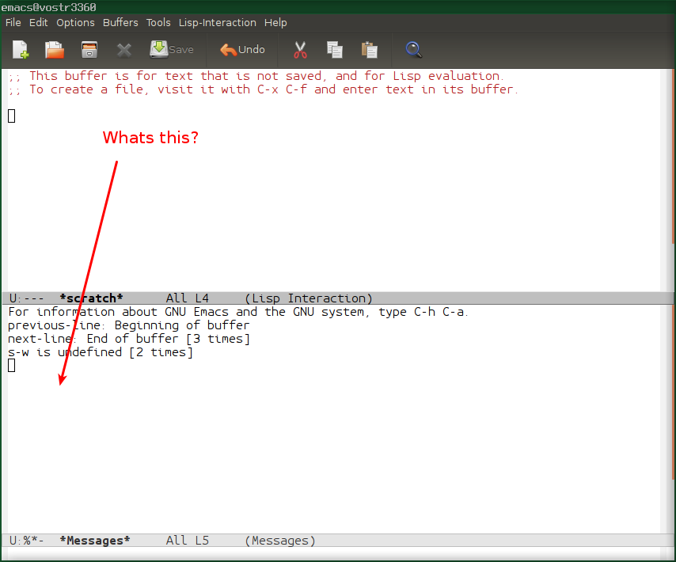

<?xml version="1.0" encoding="utf-8"?>
<!DOCTYPE html PUBLIC "-//W3C//DTD XHTML 1.0 Strict//EN"
"http://www.w3.org/TR/xhtml1/DTD/xhtml1-strict.dtd">
<html xmlns="http://www.w3.org/1999/xhtml" lang="en" xml:lang="en">
<head>
<!-- 2019-02-09 Sat 11:06 -->
<meta http-equiv="Content-Type" content="text/html;charset=utf-8" />
<meta name="viewport" content="width=device-width, initial-scale=1" />
<title>Alex V Koval (avkoval) emacs beginners guide &amp; configuration file</title>
<meta name="generator" content="Org mode" />
<meta name="author" content="Alex V Koval" />
<style type="text/css">
 <!--/*--><![CDATA[/*><!--*/
  .title  { text-align: center;
             margin-bottom: .2em; }
  .subtitle { text-align: center;
              font-size: medium;
              font-weight: bold;
              margin-top:0; }
  .todo   { font-family: monospace; color: red; }
  .done   { font-family: monospace; color: green; }
  .priority { font-family: monospace; color: orange; }
  .tag    { background-color: #eee; font-family: monospace;
            padding: 2px; font-size: 80%; font-weight: normal; }
  .timestamp { color: #bebebe; }
  .timestamp-kwd { color: #5f9ea0; }
  .org-right  { margin-left: auto; margin-right: 0px;  text-align: right; }
  .org-left   { margin-left: 0px;  margin-right: auto; text-align: left; }
  .org-center { margin-left: auto; margin-right: auto; text-align: center; }
  .underline { text-decoration: underline; }
  #postamble p, #preamble p { font-size: 90%; margin: .2em; }
  p.verse { margin-left: 3%; }
  pre {
    border: 1px solid #ccc;
    box-shadow: 3px 3px 3px #eee;
    padding: 8pt;
    font-family: monospace;
    overflow: auto;
    margin: 1.2em;
  }
  pre.src {
    position: relative;
    overflow: visible;
    padding-top: 1.2em;
  }
  pre.src:before {
    display: none;
    position: absolute;
    background-color: white;
    top: -10px;
    right: 10px;
    padding: 3px;
    border: 1px solid black;
  }
  pre.src:hover:before { display: inline;}
  /* Languages per Org manual */
  pre.src-asymptote:before { content: 'Asymptote'; }
  pre.src-awk:before { content: 'Awk'; }
  pre.src-C:before { content: 'C'; }
  /* pre.src-C++ doesn't work in CSS */
  pre.src-clojure:before { content: 'Clojure'; }
  pre.src-css:before { content: 'CSS'; }
  pre.src-D:before { content: 'D'; }
  pre.src-ditaa:before { content: 'ditaa'; }
  pre.src-dot:before { content: 'Graphviz'; }
  pre.src-calc:before { content: 'Emacs Calc'; }
  pre.src-emacs-lisp:before { content: 'Emacs Lisp'; }
  pre.src-fortran:before { content: 'Fortran'; }
  pre.src-gnuplot:before { content: 'gnuplot'; }
  pre.src-haskell:before { content: 'Haskell'; }
  pre.src-hledger:before { content: 'hledger'; }
  pre.src-java:before { content: 'Java'; }
  pre.src-js:before { content: 'Javascript'; }
  pre.src-latex:before { content: 'LaTeX'; }
  pre.src-ledger:before { content: 'Ledger'; }
  pre.src-lisp:before { content: 'Lisp'; }
  pre.src-lilypond:before { content: 'Lilypond'; }
  pre.src-lua:before { content: 'Lua'; }
  pre.src-matlab:before { content: 'MATLAB'; }
  pre.src-mscgen:before { content: 'Mscgen'; }
  pre.src-ocaml:before { content: 'Objective Caml'; }
  pre.src-octave:before { content: 'Octave'; }
  pre.src-org:before { content: 'Org mode'; }
  pre.src-oz:before { content: 'OZ'; }
  pre.src-plantuml:before { content: 'Plantuml'; }
  pre.src-processing:before { content: 'Processing.js'; }
  pre.src-python:before { content: 'Python'; }
  pre.src-R:before { content: 'R'; }
  pre.src-ruby:before { content: 'Ruby'; }
  pre.src-sass:before { content: 'Sass'; }
  pre.src-scheme:before { content: 'Scheme'; }
  pre.src-screen:before { content: 'Gnu Screen'; }
  pre.src-sed:before { content: 'Sed'; }
  pre.src-sh:before { content: 'shell'; }
  pre.src-sql:before { content: 'SQL'; }
  pre.src-sqlite:before { content: 'SQLite'; }
  /* additional languages in org.el's org-babel-load-languages alist */
  pre.src-forth:before { content: 'Forth'; }
  pre.src-io:before { content: 'IO'; }
  pre.src-J:before { content: 'J'; }
  pre.src-makefile:before { content: 'Makefile'; }
  pre.src-maxima:before { content: 'Maxima'; }
  pre.src-perl:before { content: 'Perl'; }
  pre.src-picolisp:before { content: 'Pico Lisp'; }
  pre.src-scala:before { content: 'Scala'; }
  pre.src-shell:before { content: 'Shell Script'; }
  pre.src-ebnf2ps:before { content: 'ebfn2ps'; }
  /* additional language identifiers per "defun org-babel-execute"
       in ob-*.el */
  pre.src-cpp:before  { content: 'C++'; }
  pre.src-abc:before  { content: 'ABC'; }
  pre.src-coq:before  { content: 'Coq'; }
  pre.src-groovy:before  { content: 'Groovy'; }
  /* additional language identifiers from org-babel-shell-names in
     ob-shell.el: ob-shell is the only babel language using a lambda to put
     the execution function name together. */
  pre.src-bash:before  { content: 'bash'; }
  pre.src-csh:before  { content: 'csh'; }
  pre.src-ash:before  { content: 'ash'; }
  pre.src-dash:before  { content: 'dash'; }
  pre.src-ksh:before  { content: 'ksh'; }
  pre.src-mksh:before  { content: 'mksh'; }
  pre.src-posh:before  { content: 'posh'; }
  /* Additional Emacs modes also supported by the LaTeX listings package */
  pre.src-ada:before { content: 'Ada'; }
  pre.src-asm:before { content: 'Assembler'; }
  pre.src-caml:before { content: 'Caml'; }
  pre.src-delphi:before { content: 'Delphi'; }
  pre.src-html:before { content: 'HTML'; }
  pre.src-idl:before { content: 'IDL'; }
  pre.src-mercury:before { content: 'Mercury'; }
  pre.src-metapost:before { content: 'MetaPost'; }
  pre.src-modula-2:before { content: 'Modula-2'; }
  pre.src-pascal:before { content: 'Pascal'; }
  pre.src-ps:before { content: 'PostScript'; }
  pre.src-prolog:before { content: 'Prolog'; }
  pre.src-simula:before { content: 'Simula'; }
  pre.src-tcl:before { content: 'tcl'; }
  pre.src-tex:before { content: 'TeX'; }
  pre.src-plain-tex:before { content: 'Plain TeX'; }
  pre.src-verilog:before { content: 'Verilog'; }
  pre.src-vhdl:before { content: 'VHDL'; }
  pre.src-xml:before { content: 'XML'; }
  pre.src-nxml:before { content: 'XML'; }
  /* add a generic configuration mode; LaTeX export needs an additional
     (add-to-list 'org-latex-listings-langs '(conf " ")) in .emacs */
  pre.src-conf:before { content: 'Configuration File'; }

  table { border-collapse:collapse; }
  caption.t-above { caption-side: top; }
  caption.t-bottom { caption-side: bottom; }
  td, th { vertical-align:top;  }
  th.org-right  { text-align: center;  }
  th.org-left   { text-align: center;   }
  th.org-center { text-align: center; }
  td.org-right  { text-align: right;  }
  td.org-left   { text-align: left;   }
  td.org-center { text-align: center; }
  dt { font-weight: bold; }
  .footpara { display: inline; }
  .footdef  { margin-bottom: 1em; }
  .figure { padding: 1em; }
  .figure p { text-align: center; }
  .inlinetask {
    padding: 10px;
    border: 2px solid gray;
    margin: 10px;
    background: #ffffcc;
  }
  #org-div-home-and-up
   { text-align: right; font-size: 70%; white-space: nowrap; }
  textarea { overflow-x: auto; }
  .linenr { font-size: smaller }
  .code-highlighted { background-color: #ffff00; }
  .org-info-js_info-navigation { border-style: none; }
  #org-info-js_console-label
    { font-size: 10px; font-weight: bold; white-space: nowrap; }
  .org-info-js_search-highlight
    { background-color: #ffff00; color: #000000; font-weight: bold; }
  .org-svg { width: 90%; }
  /*]]>*/-->
</style>
<script type="text/javascript">
/*
@licstart  The following is the entire license notice for the
JavaScript code in this tag.

Copyright (C) 2012-2018 Free Software Foundation, Inc.

The JavaScript code in this tag is free software: you can
redistribute it and/or modify it under the terms of the GNU
General Public License (GNU GPL) as published by the Free Software
Foundation, either version 3 of the License, or (at your option)
any later version.  The code is distributed WITHOUT ANY WARRANTY;
without even the implied warranty of MERCHANTABILITY or FITNESS
FOR A PARTICULAR PURPOSE.  See the GNU GPL for more details.

As additional permission under GNU GPL version 3 section 7, you
may distribute non-source (e.g., minimized or compacted) forms of
that code without the copy of the GNU GPL normally required by
section 4, provided you include this license notice and a URL
through which recipients can access the Corresponding Source.


@licend  The above is the entire license notice
for the JavaScript code in this tag.
*/
<!--/*--><![CDATA[/*><!--*/
 function CodeHighlightOn(elem, id)
 {
   var target = document.getElementById(id);
   if(null != target) {
     elem.cacheClassElem = elem.className;
     elem.cacheClassTarget = target.className;
     target.className = "code-highlighted";
     elem.className   = "code-highlighted";
   }
 }
 function CodeHighlightOff(elem, id)
 {
   var target = document.getElementById(id);
   if(elem.cacheClassElem)
     elem.className = elem.cacheClassElem;
   if(elem.cacheClassTarget)
     target.className = elem.cacheClassTarget;
 }
/*]]>*///-->
</script>
</head>
<body>
<div id="content">
<h1 class="title">Alex V Koval (avkoval) emacs beginners guide &amp; configuration file</h1>
<div id="table-of-contents">
<h2>Table of Contents</h2>
<div id="text-table-of-contents">
<ul>
<li><a href="#orge4cecd8">1. Installation</a>
<ul>
<li><a href="#org78c63e1">1.1. Clone code</a></li>
<li><a href="#orgc2becb3">1.2. Copy configuration file (optional)</a></li>
</ul>
</li>
<li><a href="#orgc51f285">2. Running emacs for beginners</a>
<ul>
<li><a href="#org4b15d0c">2.1. Start from learning very standard non-customized emacs keys</a></li>
<li><a href="#orgb28a1dd">2.2. Situations which makes most novices lost</a></li>
<li><a href="#org65f2fc1">2.3. Your cursor at the bottom of screen, no idea how to get it back</a></li>
</ul>
</li>
<li><a href="#org4feb96d">3. How to use emacs - topic per topic</a>
<ul>
<li><a href="#org0f225d2">3.1. Searching</a></li>
</ul>
</li>
<li><a href="#org20f0187">4. My (avk) key bindings plus standard keybindings</a>
<ul>
<li><a href="#org6c5f09f">4.1. General editing keys:</a></li>
<li><a href="#orgc655e3f">4.2. Working with blocks (regions)</a></li>
<li><a href="#org711fd7b">4.3. Named regions</a></li>
<li><a href="#orgd0e6f0b">4.4. Function keys</a></li>
<li><a href="#orgee0c79f">4.5. Quick switching between open buffers</a></li>
<li><a href="#orgf56fa48">4.6. helm specific keys</a></li>
<li><a href="#orgd608b2a">4.7. Misc keys</a></li>
<li><a href="#org7c867f1">4.8. Find/Replace</a></li>
<li><a href="#orga970e19">4.9. Windows &amp; Frames</a>
<ul>
<li><a href="#orgad780a5">4.9.1. Terms</a></li>
<li><a href="#org6eeee92">4.9.2. Keys</a></li>
</ul>
</li>
</ul>
</li>
<li><a href="#org25aa238">5. Plan for beginners (advanced level in 1 month of intensive usage)</a>
<ul>
<li><a href="#orge91fe78">5.1. Week 1 (use raw emacs in terminals and basic key bingings)</a></li>
<li><a href="#org44e99e7">5.2. Week 2 (configuration tweaks, useful modules)</a>
<ul>
<li><a href="#orgc26bb18">5.2.1. Be able to configure settings to own taste. Learn how emacs configuration works.</a></li>
<li><a href="#org6cab121">5.2.2. Professional switching between open files, project files, search results</a></li>
</ul>
</li>
<li><a href="#orgb535297">5.3. Week 3 (advanced core modules usage)</a></li>
<li><a href="#org6eceb5e">5.4. Week 4 - learn specific modules</a>
<ul>
<li><a href="#org3fbd08e">5.4.1. Magit</a></li>
<li><a href="#org6907ff6">5.4.2. Org-mode</a></li>
<li><a href="#org0bbf32b">5.4.3. Your specific modes</a></li>
<li><a href="#orgc616f61">5.4.4. Learn how to alter your configuration, use lisp snippets</a></li>
</ul>
</li>
</ul>
</li>
<li><a href="#org1f2dd38">6. Settings</a>
<ul>
<li><a href="#org24b9701">6.1. Personal information</a></li>
<li><a href="#org7d2f390">6.2. Emacs initialization &amp; configuration, enabled features</a>
<ul>
<li><a href="#orgcb6535e">6.2.1. Package system</a></li>
<li><a href="#org610fe44">6.2.2. Emacs Lisp Libraries</a></li>
<li><a href="#org6971380">6.2.3. Unique file names</a></li>
<li><a href="#orgd5e9c92">6.2.4. hydra &amp; common hydras</a></li>
<li><a href="#org15f04ed">6.2.5. Load secrets</a></li>
<li><a href="#org1b6e845">6.2.6. Backups</a></li>
<li><a href="#org19529f3">6.2.7. Windows configuration</a></li>
<li><a href="#org48abc9e">6.2.8. Allowed key sequences</a></li>
<li><a href="#org42c3847">6.2.9. Some global (expert) settings</a></li>
<li><a href="#orgd886c8c">6.2.10. Helm &amp; all Helm integrations at one place</a></li>
<li><a href="#org37bdb9a">6.2.11. mode-line</a></li>
<li><a href="#org77380c5">6.2.12. conf-mode</a></li>
<li><a href="#orgb100697">6.2.13. Always display file name in frame title</a></li>
<li><a href="#orgb631a9a">6.2.14. ediff</a></li>
<li><a href="#org4c95879">6.2.15. Fonts</a></li>
<li><a href="#org3626002">6.2.16. Enable ibuffer</a></li>
<li><a href="#org289aa51">6.2.17. web-mode</a></li>
<li><a href="#org1a3314f">6.2.18. tabs</a></li>
<li><a href="#org49d5e00">6.2.19. whitespaces</a></li>
</ul>
</li>
<li><a href="#org9c22510">6.3. Themes</a>
<ul>
<li><a href="#orgac1c189">6.3.1. moe-theme</a></li>
</ul>
</li>
<li><a href="#org1bdc66e">6.4. Packages</a>
<ul>
<li><a href="#org32580f9">6.4.1. treemacs</a></li>
<li><a href="#orgdd59621">6.4.2. yasnippet</a></li>
<li><a href="#orgd08b14c">6.4.3. treemacs-dired</a></li>
<li><a href="#orge40f656">6.4.4. dired</a></li>
<li><a href="#org50b628d">6.4.5. ace, avy</a></li>
<li><a href="#orgc9bebbd">6.4.6. ahg</a></li>
<li><a href="#org9c1a6f4">6.4.7. Python support</a></li>
<li><a href="#org012b3c7">6.4.8. Javascript</a></li>
<li><a href="#orgd1b0c81">6.4.9. Org-mode</a></li>
<li><a href="#org401e733">6.4.10. Custom themes</a></li>
<li><a href="#org4f99ae8">6.4.11. easy-kill</a></li>
<li><a href="#orgd91f86c">6.4.12. expand-region</a></li>
<li><a href="#org3ba017f">6.4.13. hl-todo</a></li>
<li><a href="#org1f80d2d">6.4.14. remaininng</a></li>
<li><a href="#org8ad7409">6.4.15. hyperbole</a></li>
<li><a href="#orgc2d6da3">6.4.16. jabber</a></li>
<li><a href="#org27eceb6">6.4.17. notmuch</a></li>
<li><a href="#org9940c4d">6.4.18. magit</a></li>
<li><a href="#orga8a4c1f">6.4.19. tramp</a></li>
<li><a href="#orgedf460e">6.4.20. pdf-tools</a></li>
<li><a href="#orge00b7dd">6.4.21. multiple-cursors</a></li>
<li><a href="#org476811b">6.4.22. projectile</a></li>
<li><a href="#org2fa7715">6.4.23. pylookup</a></li>
<li><a href="#org0682771">6.4.24. Slack</a></li>
<li><a href="#orga09daf9">6.4.25. ztree</a></li>
<li><a href="#org569d9f0">6.4.26. deadgrep</a></li>
</ul>
</li>
<li><a href="#org53cc06c">6.5. Package customizations &amp; keybindings, other snippets</a>
<ul>
<li><a href="#orge34e804">6.5.1. yaml</a></li>
<li><a href="#org1b72d4c">6.5.2. shells</a></li>
<li><a href="#org1444e50">6.5.3. prog-mode</a></li>
<li><a href="#orga77b9b0">6.5.4. Various keybindings</a></li>
<li><a href="#org63d8902">6.5.5. Lisp</a></li>
<li><a href="#org251f2da">6.5.6. Org-mode</a></li>
<li><a href="#org4aebc06">6.5.7. Duplicate line</a></li>
<li><a href="#org1891ed2">6.5.8. transparency</a></li>
<li><a href="#orgcfa4765">6.5.9. Terraform</a></li>
<li><a href="#org0bb036f">6.5.10. Make</a></li>
<li><a href="#orgcf40246">6.5.11. Docker</a></li>
</ul>
</li>
<li><a href="#org5355189">6.6. Favourite themes</a></li>
</ul>
</li>
</ul>
</div>
</div>

<div id="outline-container-orge4cecd8" class="outline-2">
<h2 id="orge4cecd8"><span class="section-number-2">1</span> Installation</h2>
<div class="outline-text-2" id="text-1">
</div>
<div id="outline-container-org78c63e1" class="outline-3">
<h3 id="org78c63e1"><span class="section-number-3">1.1</span> Clone code</h3>
<div class="outline-text-3" id="text-1-1">
<p>
I am using mercurial. It has some great advantages over git and personally I find it much more appealing
to me <i>as developer</i> but YMMV. And so, <a href="https://www.mercurial-scm.org/wiki/Download">first, install Mercurial</a>, then do this:
</p>

<pre class="example">
hg clone https://bitbucket.org/avkoval/.emacs.d
</pre>
</div>
</div>

<div id="outline-container-orgc2becb3" class="outline-3">
<h3 id="orgc2becb3"><span class="section-number-3">1.2</span> Copy configuration file (optional)</h3>
<div class="outline-text-3" id="text-1-2">
<p>
To tweak configuration settings you should copy .emacs.d/init.el into your home directory
.emacs  <i>(optional but recommended step)</i>:
</p>

<pre class="example">
cp .emacs.d/init.el ~/.emacs
</pre>
</div>
</div>
</div>

<div id="outline-container-orgc51f285" class="outline-2">
<h2 id="orgc51f285"><span class="section-number-2">2</span> Running emacs for beginners</h2>
<div class="outline-text-2" id="text-2">
<p>
Emacs strives for maximum power, and because of this it binds keys on very unusual key combinations. Beginners find it difficult
to accomodate to different copy/paste behavior and some other things. But please be patient, if you overcome those problems, you will
obtain more power in your hands.
</p>
</div>

<div id="outline-container-org4b15d0c" class="outline-3">
<h3 id="org4b15d0c"><span class="section-number-3">2.1</span> Start from learning very standard non-customized emacs keys</h3>
<div class="outline-text-3" id="text-2-1">
<p>
Because you might need to run emacs without custom configuration on remote terminals and elsewhere you need to learn all standard
keybindings first. Later, in your customized configuration you might want to override some for best productivity, but learning
the core keys in the first stage is very important.
</p>

<p>
To excel in this, you need to follow those two simple steps:
</p>

<ul class="org-ul">
<li>Learn emacs tutorial by pressing C-h t (Control+'h' and then 't').</li>
<li>Print and use this reference card <a href="https://www.gnu.org/software/emacs/refcards/pdf/refcard.pdf">https://www.gnu.org/software/emacs/refcards/pdf/refcard.pdf</a></li>
</ul>

<p>
A very short introduction to emacs keys:
</p>

<table border="2" cellspacing="0" cellpadding="6" rules="groups" frame="hsides">


<colgroup>
<col  class="org-left" />

<col  class="org-left" />

<col  class="org-left" />
</colgroup>
<thead>
<tr>
<th scope="col" class="org-left">Action</th>
<th scope="col" class="org-left">Key</th>
<th scope="col" class="org-left">Explanations &amp; comments</th>
</tr>
</thead>
<tbody>
<tr>
<td class="org-left">Exit emacs</td>
<td class="org-left">C-x C-c</td>
<td class="org-left">When you close emacs window using WM close, it will fall back to UX behavior of dialogs, asking if some files needs to be saved, etc. You can use File-&gt;Quit menu as well.</td>
</tr>

<tr>
<td class="org-left">Open file</td>
<td class="org-left">C-x C-f</td>
<td class="org-left">There are so many ways to open file, <code>C-x C-f</code> is standard one, but: <code>f3</code> opens file via <code>Helm</code>, <code>C-x d</code> will show <code>dired</code>, <code>f5</code> will show <code>treemacs</code> etc</td>
</tr>

<tr>
<td class="org-left">Save file back to disk</td>
<td class="org-left">C-x C-s</td>
<td class="org-left"><code>f2</code> is my custom alternative, also note that <code>C-x s</code> will show dialog, with some nice additional options, like <code>d</code> for diffing the contents between buffer and file on disk.</td>
</tr>

<tr>
<td class="org-left">Start mark</td>
<td class="org-left">C-SPC</td>
<td class="org-left">Start block. Recently I've removed support for CUA regions and arros keys (with shift). You can enable it back in Options-&gt;"Shift movement mark region CUA". Note that <code>C-x SPC</code> starts rectangualar region</td>
</tr>

<tr>
<td class="org-left">Copy mark</td>
<td class="org-left">M-w</td>
<td class="org-left">Analogous to <code>Control+C</code>. Note: M-w (Alt-w) will copy-thing-at-point and so line by default, or URL, or anything else in context. <i>So there is no necessity to select line before copying it</i></td>
</tr>

<tr>
<td class="org-left">Paste mark</td>
<td class="org-left">C-y</td>
<td class="org-left">Analogous to <code>Control+V</code>. <b>Please do not rebind</b> those windows keys as you will lose a lot of useful features. Learn to use them once.</td>
</tr>

<tr>
<td class="org-left">Close buffer (kill buffer)</td>
<td class="org-left">C-x k</td>
<td class="org-left">Close current open file. Emacs will stay. I've also bind this to M-DEL for speedup.</td>
</tr>

<tr>
<td class="org-left">Next buffer</td>
<td class="org-left">C-x <code>RIGHT</code></td>
<td class="org-left">&#xa0;</td>
</tr>

<tr>
<td class="org-left">Previos buffer</td>
<td class="org-left">C-x <code>Left</code></td>
<td class="org-left">&#xa0;</td>
</tr>

<tr>
<td class="org-left">Buffer list</td>
<td class="org-left">C-x C-b</td>
<td class="org-left">Also, <code>F9</code> will bring up <code>ibuffer</code> or <code>s-TAB</code> will bring <code>helm-buffers-list</code></td>
</tr>

<tr>
<td class="org-left">Next window</td>
<td class="org-left">C-x o</td>
<td class="org-left">Note that alternatively you can navigate windows with <code>shift-s-ARROW</code> - this allows up/down/left/right free navigation. Another alternative: <code>ace-window</code> bind to <code>M-[</code></td>
</tr>

<tr>
<td class="org-left">Keep 1 window</td>
<td class="org-left">C-x 1</td>
<td class="org-left">Note that my custom <code>C-z 0</code> will close just <b>one</b> recently open next window, it will keep others in place.</td>
</tr>

<tr>
<td class="org-left">Quit from some running emacs app</td>
<td class="org-left">q</td>
<td class="org-left">&#xa0;</td>
</tr>

<tr>
<td class="org-left">Kill running emacs app</td>
<td class="org-left">C-g</td>
<td class="org-left"><i>Press it when you lost in emacs and it does not respond.</i></td>
</tr>

<tr>
<td class="org-left">About recursive edit (command line)</td>
<td class="org-left">C-]</td>
<td class="org-left"><i>Press it when you list in emacs command line</i></td>
</tr>

<tr>
<td class="org-left">Undo</td>
<td class="org-left">C-x u, C-_</td>
<td class="org-left"><code>Control+Shift+-</code> for <b>Undo.</b>  Alternatively have a look at <code>C-x u</code> - <code>undo-tree-visualize</code></td>
</tr>

<tr>
<td class="org-left">Dired (file browser)</td>
<td class="org-left">C-x d</td>
<td class="org-left">&#xa0;</td>
</tr>

<tr>
<td class="org-left">Treemacs (side tree brower)</td>
<td class="org-left">F5</td>
<td class="org-left"><code>F5</code> shows it, while <code>Shift F5</code> adds new project into treemacs projects list</td>
</tr>
</tbody>
</table>

<p>
Where:
</p>
<ul class="org-ul">
<li>C = Control key</li>
<li>M = usually Alt key</li>
<li>S = Shift key</li>
</ul>

<p>
Notes on Emacs specific terms:
</p>
<ul class="org-ul">
<li>File is named 'buffer'</li>
<li>Selection Block is named 'region'</li>
<li>Window and Frame might mean opposite things</li>
</ul>
</div>
</div>

<div id="outline-container-orgb28a1dd" class="outline-3">
<h3 id="orgb28a1dd"><span class="section-number-3">2.2</span> Situations which makes most novices lost</h3>
<div class="outline-text-3" id="text-2-2">
<p>
A new frame appears on screen, you have no idea how to exit it. Example:
</p>


<div class="figure">
<p>
</p>
</div>

<p>
Answer:
</p>
<ul class="org-ul">
<li>You have opened some internal buffer. No need to worry, to return to single window
view - press <code>C-x 1</code></li>
<li>If you find yourself in wrong window, press <code>C-x o</code> first to move cursor to other window.</li>
</ul>
</div>
</div>

<div id="outline-container-org65f2fc1" class="outline-3">
<h3 id="org65f2fc1"><span class="section-number-3">2.3</span> Your cursor at the bottom of screen, no idea how to get it back</h3>
<div class="outline-text-3" id="text-2-3">
<p>
Like this:

</p>

<ul class="org-ul">
<li>Press <code>C-g</code>. Should help. If does not: press <code>C-]</code> (several times).
If cursor is not in the frame where your file is, use <code>C-o</code> until its returned.</li>
</ul>
</div>
</div>
</div>

<div id="outline-container-org4feb96d" class="outline-2">
<h2 id="org4feb96d"><span class="section-number-2">3</span> How to use emacs - topic per topic</h2>
<div class="outline-text-2" id="text-3">
</div>
<div id="outline-container-org0f225d2" class="outline-3">
<h3 id="org0f225d2"><span class="section-number-3">3.1</span> Searching</h3>
<div class="outline-text-3" id="text-3-1">
<p>
Searching is important - emacs is positioned as <i>code browser</i> and the essential part of its
reputation is due to various methods of searching and browsing the texts. And it seems that
every searching method is useful in particular situations.
</p>

<p>
Lets start from the most old-school <code>grep</code> utility. Emacs has several integrations of it, but
I am mostly using <code>rgrep</code> function on this keybinding:
</p>

<ul class="org-ul">
<li><code>C-f7</code> - rgrep</li>
</ul>
</div>
</div>
</div>

<div id="outline-container-org20f0187" class="outline-2">
<h2 id="org20f0187"><span class="section-number-2">4</span> My (avk) key bindings plus standard keybindings</h2>
<div class="outline-text-2" id="text-4">
<p>
(but look also in <a href="./configs/cfg_keybindings.el">./configs/cfg_keybindings.el</a>)
</p>
</div>

<div id="outline-container-org6c5f09f" class="outline-3">
<h3 id="org6c5f09f"><span class="section-number-3">4.1</span> General editing keys:</h3>
<div class="outline-text-3" id="text-4-1">
<table border="2" cellspacing="0" cellpadding="6" rules="groups" frame="hsides">


<colgroup>
<col  class="org-left" />

<col  class="org-left" />

<col  class="org-left" />
</colgroup>
<thead>
<tr>
<th scope="col" class="org-left">Action</th>
<th scope="col" class="org-left">Key</th>
<th scope="col" class="org-left">Notes</th>
</tr>
</thead>
<tbody>
<tr>
<td class="org-left">Duplicate current line</td>
<td class="org-left">C-+</td>
<td class="org-left">'kill-ring' safe</td>
</tr>

<tr>
<td class="org-left">Insert line above</td>
<td class="org-left">C-S-insert</td>
<td class="org-left">Control Shift Insert</td>
</tr>

<tr>
<td class="org-left">Delete current line</td>
<td class="org-left">C-S-backspace</td>
<td class="org-left">'kill-ring' safe</td>
</tr>

<tr>
<td class="org-left">Delete current line (and yank)</td>
<td class="org-left">C-a C-k</td>
<td class="org-left">or select region and C-w</td>
</tr>

<tr>
<td class="org-left">Comment or uncomment selected</td>
<td class="org-left">C-S-z</td>
<td class="org-left">&#xa0;</td>
</tr>

<tr>
<td class="org-left">Match paren</td>
<td class="org-left">M+]</td>
<td class="org-left">&#xa0;</td>
</tr>

<tr>
<td class="org-left">Scrolllock mode</td>
<td class="org-left">C-Scroll_Lock</td>
<td class="org-left">&#xa0;</td>
</tr>

<tr>
<td class="org-left">Delete current buffer (close file)</td>
<td class="org-left">C-x C-k, M-DEL</td>
<td class="org-left">&#xa0;</td>
</tr>

<tr>
<td class="org-left">Text position (3 pos)</td>
<td class="org-left">C-l</td>
<td class="org-left">&#xa0;</td>
</tr>

<tr>
<td class="org-left">Delete whitespace</td>
<td class="org-left">C-z d</td>
<td class="org-left">&#xa0;</td>
</tr>

<tr>
<td class="org-left">&#xa0;</td>
<td class="org-left">&#xa0;</td>
<td class="org-left">&#xa0;</td>
</tr>

<tr>
<td class="org-left">Suspend frame (go background)</td>
<td class="org-left">C-z C-z</td>
<td class="org-left">Std. combination for this action is C-z</td>
</tr>

<tr>
<td class="org-left">&#xa0;</td>
<td class="org-left">&#xa0;</td>
<td class="org-left">but I need C-z for other things</td>
</tr>
</tbody>
</table>
</div>
</div>

<div id="outline-container-orgc655e3f" class="outline-3">
<h3 id="orgc655e3f"><span class="section-number-3">4.2</span> Working with blocks (regions)</h3>
<div class="outline-text-3" id="text-4-2">
<table border="2" cellspacing="0" cellpadding="6" rules="groups" frame="hsides">


<colgroup>
<col  class="org-left" />

<col  class="org-left" />

<col  class="org-left" />
</colgroup>
<thead>
<tr>
<th scope="col" class="org-left">Action</th>
<th scope="col" class="org-left">Key</th>
<th scope="col" class="org-left">Notes</th>
</tr>
</thead>
<tbody>
<tr>
<td class="org-left">Select region</td>
<td class="org-left">C-SPC</td>
<td class="org-left">Or use Shift+cursor keys</td>
</tr>

<tr>
<td class="org-left">Copy region</td>
<td class="org-left">M-w, C+INS</td>
<td class="org-left">Control-Insert</td>
</tr>

<tr>
<td class="org-left">Yank (cut) region</td>
<td class="org-left">C-w</td>
<td class="org-left">&#xa0;</td>
</tr>

<tr>
<td class="org-left">Insert region</td>
<td class="org-left">C-y, S+INS</td>
<td class="org-left">Shift-Insert</td>
</tr>
</tbody>
</table>
</div>
</div>

<div id="outline-container-org711fd7b" class="outline-3">
<h3 id="org711fd7b"><span class="section-number-3">4.3</span> Named regions</h3>
<div class="outline-text-3" id="text-4-3">
<p>
In emacs you can copy selected region to a named memory place. So, this makes it possible
to operate with different selected pieces of text.
</p>

<table border="2" cellspacing="0" cellpadding="6" rules="groups" frame="hsides">


<colgroup>
<col  class="org-left" />

<col  class="org-left" />

<col  class="org-left" />
</colgroup>
<thead>
<tr>
<th scope="col" class="org-left">Action</th>
<th scope="col" class="org-left">Key</th>
<th scope="col" class="org-left">Notes</th>
</tr>
</thead>
<tbody>
<tr>
<td class="org-left">copy to named memory register</td>
<td class="org-left">C-x rs <code>CHAR</code></td>
<td class="org-left">Example: C-x r s 1</td>
</tr>

<tr>
<td class="org-left">insert from named memory register</td>
<td class="org-left">C-x ri <code>CHAR</code></td>
<td class="org-left">C-x r i 1</td>
</tr>
</tbody>
</table>
</div>
</div>

<div id="outline-container-orgd0e6f0b" class="outline-3">
<h3 id="orgd0e6f0b"><span class="section-number-3">4.4</span> Function keys</h3>
<div class="outline-text-3" id="text-4-4">
<table border="2" cellspacing="0" cellpadding="6" rules="groups" frame="hsides">


<colgroup>
<col  class="org-left" />

<col  class="org-left" />

<col  class="org-left" />
</colgroup>
<thead>
<tr>
<th scope="col" class="org-left">Action</th>
<th scope="col" class="org-left">Key</th>
<th scope="col" class="org-left">Notes</th>
</tr>
</thead>
<tbody>
<tr>
<td class="org-left">Manual</td>
<td class="org-left">F1</td>
<td class="org-left">same as man <code>topic</code> in console</td>
</tr>

<tr>
<td class="org-left">Save</td>
<td class="org-left">F2</td>
<td class="org-left">&#xa0;</td>
</tr>

<tr>
<td class="org-left">Open</td>
<td class="org-left">F3</td>
<td class="org-left">&#xa0;</td>
</tr>

<tr>
<td class="org-left">Next window</td>
<td class="org-left">F6</td>
<td class="org-left">&#xa0;</td>
</tr>

<tr>
<td class="org-left">Previous window</td>
<td class="org-left">S-F6</td>
<td class="org-left">&#xa0;</td>
</tr>

<tr>
<td class="org-left">Query &amp; replace in this buffer</td>
<td class="org-left">F7</td>
<td class="org-left">&#xa0;</td>
</tr>

<tr>
<td class="org-left">Query &amp; replace in files</td>
<td class="org-left">Contrl+F7</td>
<td class="org-left">&#xa0;</td>
</tr>

<tr>
<td class="org-left">Next compilation error</td>
<td class="org-left">F8</td>
<td class="org-left">&#xa0;</td>
</tr>

<tr>
<td class="org-left">Jump to bookmark</td>
<td class="org-left">C-F8</td>
<td class="org-left">&#xa0;</td>
</tr>

<tr>
<td class="org-left">Ibuffer (open buffer=files list) and management</td>
<td class="org-left">F9</td>
<td class="org-left">&#xa0;</td>
</tr>

<tr>
<td class="org-left">Menu</td>
<td class="org-left">F10</td>
<td class="org-left">&#xa0;</td>
</tr>

<tr>
<td class="org-left">Toggle line numbers</td>
<td class="org-left">F11, C-z l</td>
<td class="org-left">&#xa0;</td>
</tr>

<tr>
<td class="org-left">Toggle display of long lines</td>
<td class="org-left">F12</td>
<td class="org-left">&#xa0;</td>
</tr>
</tbody>
</table>
</div>
</div>


<div id="outline-container-orgee0c79f" class="outline-3">
<h3 id="orgee0c79f"><span class="section-number-3">4.5</span> Quick switching between open buffers</h3>
<div class="outline-text-3" id="text-4-5">
<p>
I strongly sugges to enable cfg_helm.el in your custom copy of .emacs as its a primary additional
module for switching between files and buffers.
</p>

<table border="2" cellspacing="0" cellpadding="6" rules="groups" frame="hsides">


<colgroup>
<col  class="org-left" />

<col  class="org-left" />

<col  class="org-left" />
</colgroup>
<thead>
<tr>
<th scope="col" class="org-left">Action</th>
<th scope="col" class="org-left">Key</th>
<th scope="col" class="org-left">Notes</th>
</tr>
</thead>
<tbody>
<tr>
<td class="org-left">Switch buffers</td>
<td class="org-left">C-x C-b</td>
<td class="org-left">Shows the list of open buffers</td>
</tr>

<tr>
<td class="org-left">Switch buffers (helm enabled) via helm-recentf</td>
<td class="org-left">C-z C-r</td>
<td class="org-left">helm-recentf</td>
</tr>

<tr>
<td class="org-left">Switch buffers</td>
<td class="org-left">C-z C-b</td>
<td class="org-left">&#xa0;</td>
</tr>

<tr>
<td class="org-left">Switch buffers (Ibuffer)</td>
<td class="org-left">F9</td>
<td class="org-left">&#xa0;</td>
</tr>
</tbody>
</table>
</div>
</div>

<div id="outline-container-orgf56fa48" class="outline-3">
<h3 id="orgf56fa48"><span class="section-number-3">4.6</span> helm specific keys</h3>
<div class="outline-text-3" id="text-4-6">
<p>
Excellent helm module <a href="https://github.com/emacs-helm/helm">Read more here</a> provides reach functionality of switching between buffers, files, searching,
etc.
</p>

<p>
Enable this by uncommending cfg_helm.el
</p>

<p>
Most important keys listed below:
</p>

<table border="2" cellspacing="0" cellpadding="6" rules="groups" frame="hsides">


<colgroup>
<col  class="org-left" />

<col  class="org-left" />

<col  class="org-left" />
</colgroup>
<thead>
<tr>
<th scope="col" class="org-left">Key</th>
<th scope="col" class="org-left">Command</th>
<th scope="col" class="org-left">What it does</th>
</tr>
</thead>
<tbody>
<tr>
<td class="org-left">C-c v</td>
<td class="org-left">helm-imenu</td>
<td class="org-left">Show document structure (functions, classes</td>
</tr>

<tr>
<td class="org-left">s-‹</td>
<td class="org-left">&#xa0;</td>
<td class="org-left">for Python)</td>
</tr>

<tr>
<td class="org-left">&#xa0;</td>
<td class="org-left">&#xa0;</td>
<td class="org-left">&#xa0;</td>
</tr>

<tr>
<td class="org-left">C-c C-z</td>
<td class="org-left">helm-recentf</td>
<td class="org-left">Recentf is one of the most powerful emacs+helm</td>
</tr>

<tr>
<td class="org-left">C-z C-r</td>
<td class="org-left">&#xa0;</td>
<td class="org-left">keybindings. Shows recently open files</td>
</tr>

<tr>
<td class="org-left">s-x</td>
<td class="org-left">&#xa0;</td>
<td class="org-left">&#xa0;</td>
</tr>

<tr>
<td class="org-left">&#xa0;</td>
<td class="org-left">&#xa0;</td>
<td class="org-left">&#xa0;</td>
</tr>

<tr>
<td class="org-left">C-c h p</td>
<td class="org-left">helm-projectile</td>
<td class="org-left">Find file in project</td>
</tr>

<tr>
<td class="org-left">&#xa0;</td>
<td class="org-left">&#xa0;</td>
<td class="org-left">&#xa0;</td>
</tr>

<tr>
<td class="org-left">s-CPC</td>
<td class="org-left">helm-mini</td>
<td class="org-left">mini view with buffers, recentf combined</td>
</tr>

<tr>
<td class="org-left">C-f12</td>
<td class="org-left">&#xa0;</td>
<td class="org-left">&#xa0;</td>
</tr>

<tr>
<td class="org-left">C-z C-a</td>
<td class="org-left">&#xa0;</td>
<td class="org-left">&#xa0;</td>
</tr>

<tr>
<td class="org-left">&#xa0;</td>
<td class="org-left">&#xa0;</td>
<td class="org-left">&#xa0;</td>
</tr>

<tr>
<td class="org-left">C-c h m</td>
<td class="org-left">helm-mark-ring</td>
<td class="org-left">Shows recent locations in this file</td>
</tr>

<tr>
<td class="org-left">Alt-F9</td>
<td class="org-left">&#xa0;</td>
<td class="org-left">&#xa0;</td>
</tr>

<tr>
<td class="org-left">&#xa0;</td>
<td class="org-left">&#xa0;</td>
<td class="org-left">&#xa0;</td>
</tr>

<tr>
<td class="org-left">C-z o</td>
<td class="org-left">helm-occur</td>
<td class="org-left">Shows occurencies of smth. in the file</td>
</tr>

<tr>
<td class="org-left">&#xa0;</td>
<td class="org-left">&#xa0;</td>
<td class="org-left">&#xa0;</td>
</tr>

<tr>
<td class="org-left">C-c h a</td>
<td class="org-left">helm-ag</td>
<td class="org-left">A very fast search in files. First match like</td>
</tr>

<tr>
<td class="org-left">&#xa0;</td>
<td class="org-left">&#xa0;</td>
<td class="org-left">a grep, 2nd match in helm</td>
</tr>

<tr>
<td class="org-left">&#xa0;</td>
<td class="org-left">&#xa0;</td>
<td class="org-left">&#xa0;</td>
</tr>

<tr>
<td class="org-left">C-z f f</td>
<td class="org-left">helm-etags-select</td>
<td class="org-left">Etags search for project files. For python</td>
</tr>

<tr>
<td class="org-left">C-z f t</td>
<td class="org-left">&#xa0;</td>
<td class="org-left">project you need to create tags first, use</td>
</tr>

<tr>
<td class="org-left">&#xa0;</td>
<td class="org-left">&#xa0;</td>
<td class="org-left">create-TAGS emacs cmd</td>
</tr>

<tr>
<td class="org-left">&#xa0;</td>
<td class="org-left">&#xa0;</td>
<td class="org-left">&#xa0;</td>
</tr>

<tr>
<td class="org-left">C-z C-f</td>
<td class="org-left">helm-find-files</td>
<td class="org-left">Find files using Helm. Rich functional</td>
</tr>

<tr>
<td class="org-left">f3</td>
<td class="org-left">&#xa0;</td>
<td class="org-left">via TAB.</td>
</tr>

<tr>
<td class="org-left">&#xa0;</td>
<td class="org-left">&#xa0;</td>
<td class="org-left">&#xa0;</td>
</tr>

<tr>
<td class="org-left">C-z f a</td>
<td class="org-left">avk-change-default-font-fn</td>
<td class="org-left">My function to change font</td>
</tr>

<tr>
<td class="org-left">&#xa0;</td>
<td class="org-left">&#xa0;</td>
<td class="org-left">&#xa0;</td>
</tr>

<tr>
<td class="org-left">&#xa0;</td>
<td class="org-left">&#xa0;</td>
<td class="org-left">&#xa0;</td>
</tr>

<tr>
<td class="org-left">C-c h b</td>
<td class="org-left">helm-bookmarks</td>
<td class="org-left">Bookmarks API to emacs bookmarks</td>
</tr>

<tr>
<td class="org-left">&#xa0;</td>
<td class="org-left">&#xa0;</td>
<td class="org-left">&#xa0;</td>
</tr>

<tr>
<td class="org-left">C-c h f</td>
<td class="org-left">helm-firefox-bookmarks</td>
<td class="org-left">Firefox bookmarks</td>
</tr>

<tr>
<td class="org-left">&#xa0;</td>
<td class="org-left">&#xa0;</td>
<td class="org-left">&#xa0;</td>
</tr>

<tr>
<td class="org-left">C-x c /</td>
<td class="org-left">helm-find</td>
<td class="org-left">Find files by name</td>
</tr>

<tr>
<td class="org-left">&#xa0;</td>
<td class="org-left">&#xa0;</td>
<td class="org-left">&#xa0;</td>
</tr>

<tr>
<td class="org-left">C-c h r</td>
<td class="org-left">helm-resume</td>
<td class="org-left">Resume last helm screen</td>
</tr>
</tbody>
</table>
</div>
</div>

<div id="outline-container-orgd608b2a" class="outline-3">
<h3 id="orgd608b2a"><span class="section-number-3">4.7</span> Misc keys</h3>
<div class="outline-text-3" id="text-4-7">
<table border="2" cellspacing="0" cellpadding="6" rules="groups" frame="hsides">


<colgroup>
<col  class="org-left" />

<col  class="org-left" />

<col  class="org-left" />
</colgroup>
<thead>
<tr>
<th scope="col" class="org-left">Action</th>
<th scope="col" class="org-left">Key</th>
<th scope="col" class="org-left">Notes</th>
</tr>
</thead>
<tbody>
<tr>
<td class="org-left">Change font (helm required)</td>
<td class="org-left">C-z fa</td>
<td class="org-left">&#xa0;</td>
</tr>

<tr>
<td class="org-left">Change emacs skin (theme)</td>
<td class="org-left">C-z tt</td>
<td class="org-left">&#xa0;</td>
</tr>

<tr>
<td class="org-left">Lower region</td>
<td class="org-left">C-x l</td>
<td class="org-left">&#xa0;</td>
</tr>

<tr>
<td class="org-left">Upper region</td>
<td class="org-left">C-x u</td>
<td class="org-left">&#xa0;</td>
</tr>

<tr>
<td class="org-left">Dired (show files)</td>
<td class="org-left">C-x d</td>
<td class="org-left">&#xa0;</td>
</tr>

<tr>
<td class="org-left">Dired (by file mask)</td>
<td class="org-left">C-x d <code>enter mask</code></td>
<td class="org-left">&#xa0;</td>
</tr>

<tr>
<td class="org-left">ZTree (show files by tree)</td>
<td class="org-left">C-x z</td>
<td class="org-left">&#xa0;</td>
</tr>
</tbody>
</table>
</div>
</div>


<div id="outline-container-org7c867f1" class="outline-3">
<h3 id="org7c867f1"><span class="section-number-3">4.8</span> Find/Replace</h3>
<div class="outline-text-3" id="text-4-8">
<table border="2" cellspacing="0" cellpadding="6" rules="groups" frame="hsides">


<colgroup>
<col  class="org-left" />

<col  class="org-left" />

<col  class="org-left" />
</colgroup>
<thead>
<tr>
<th scope="col" class="org-left">Action</th>
<th scope="col" class="org-left">Key</th>
<th scope="col" class="org-left">Notes</th>
</tr>
</thead>
<tbody>
<tr>
<td class="org-left">Find in current file</td>
<td class="org-left">F7</td>
<td class="org-left">&#xa0;</td>
</tr>

<tr>
<td class="org-left">Find in current file (occur)</td>
<td class="org-left">M-x occur</td>
<td class="org-left">&#xa0;</td>
</tr>

<tr>
<td class="org-left">Find in current file (helm-occur)</td>
<td class="org-left">C-z o</td>
<td class="org-left">&#xa0;</td>
</tr>

<tr>
<td class="org-left">Search in files</td>
<td class="org-left">C-F7</td>
<td class="org-left">&#xa0;</td>
</tr>

<tr>
<td class="org-left">Search for file name</td>
<td class="org-left">C-S-D</td>
<td class="org-left">&#xa0;</td>
</tr>
</tbody>
</table>
</div>
</div>

<div id="outline-container-orga970e19" class="outline-3">
<h3 id="orga970e19"><span class="section-number-3">4.9</span> Windows &amp; Frames</h3>
<div class="outline-text-3" id="text-4-9">
</div>
<div id="outline-container-orgad780a5" class="outline-4">
<h4 id="orgad780a5"><span class="section-number-4">4.9.1</span> Terms</h4>
<div class="outline-text-4" id="text-4-9-1">
<ul class="org-ul">
<li><b>Window</b> is some area within emacs screen with modeline.</li>

<li><b>Frame</b> is another frame of the editor. One editor can span multiple frames.</li>
</ul>
</div>
</div>

<div id="outline-container-org6eeee92" class="outline-4">
<h4 id="org6eeee92"><span class="section-number-4">4.9.2</span> Keys</h4>
<div class="outline-text-4" id="text-4-9-2">
<table border="2" cellspacing="0" cellpadding="6" rules="groups" frame="hsides">


<colgroup>
<col  class="org-left" />

<col  class="org-left" />
</colgroup>
<thead>
<tr>
<th scope="col" class="org-left">Action</th>
<th scope="col" class="org-left">Key</th>
</tr>
</thead>
<tbody>
<tr>
<td class="org-left">Keep one window</td>
<td class="org-left">C-x 1, C-ESC</td>
</tr>

<tr>
<td class="org-left">Add new frame</td>
<td class="org-left">C-x 5 2</td>
</tr>

<tr>
<td class="org-left">Add new window at bottom</td>
<td class="org-left">C-x 2</td>
</tr>

<tr>
<td class="org-left">Add new window at right</td>
<td class="org-left">C-x 3</td>
</tr>

<tr>
<td class="org-left">Close window</td>
<td class="org-left">C-x 0</td>
</tr>

<tr>
<td class="org-left">Close frame</td>
<td class="org-left">C-x 5 0</td>
</tr>

<tr>
<td class="org-left">switch between windows</td>
<td class="org-left">C-x o, F6</td>
</tr>

<tr>
<td class="org-left">switch between windows</td>
<td class="org-left">WIN+Shift Arrow Keys</td>
</tr>

<tr>
<td class="org-left">next frame</td>
<td class="org-left">C-x 5 o</td>
</tr>
</tbody>
</table>
</div>
</div>
</div>
</div>

<div id="outline-container-org25aa238" class="outline-2">
<h2 id="org25aa238"><span class="section-number-2">5</span> Plan for beginners (advanced level in 1 month of intensive usage)</h2>
<div class="outline-text-2" id="text-5">
</div>
<div id="outline-container-orge91fe78" class="outline-3">
<h3 id="orge91fe78"><span class="section-number-3">5.1</span> Week 1 (use raw emacs in terminals and basic key bingings)</h3>
<div class="outline-text-3" id="text-5-1">
<p>
OK. On first week my general recommendation it to learn some basic keys and work in terminal. So, print out
the PDF cheatsheet from <a href="#org4b15d0c">Start from learning very standard non-customized emacs keys</a> chapter, run throught
tutorial and try emacs in remote terminals.
</p>
</div>
</div>

<div id="outline-container-org44e99e7" class="outline-3">
<h3 id="org44e99e7"><span class="section-number-3">5.2</span> Week 2 (configuration tweaks, useful modules)</h3>
<div class="outline-text-3" id="text-5-2">
</div>
<div id="outline-container-orgc26bb18" class="outline-4">
<h4 id="orgc26bb18"><span class="section-number-4">5.2.1</span> Be able to configure settings to own taste. Learn how emacs configuration works.</h4>
<div class="outline-text-4" id="text-5-2-1">
<p>
On this week you can learn how to tweak some emacs settings for your preference. This includes reassigning
some keys for your taste (look for example in <a href="./configs/cfg_keybindings.el">./configs/cfg_keybindings.el</a>), and use configuration
dialogs: <code>M-x configure-variable</code> and <code>M-x configure-group</code>.
</p>
</div>
</div>

<div id="outline-container-org6cab121" class="outline-4">
<h4 id="org6cab121"><span class="section-number-4">5.2.2</span> Professional switching between open files, project files, search results</h4>
<div class="outline-text-4" id="text-5-2-2">
<p>
On this week you also have to study and be able to perform generic actions like:
</p>

<ul class="org-ul">
<li>Switch between files in project using helm (C-c h p)</li>
<li>Use <b>dired</b>:
<ul class="org-ul">
<li><code>C-x d</code> start it, <code>q</code> - quit</li>
</ul></li>
<li>Use <b>ZTree</b>
<ul class="org-ul">
<li><code>C-x z</code></li>
</ul></li>
<li>Switch between open files using ibuffer (F9)
<ul class="org-ul">
<li>Learn how to close buffers (<code>d</code>), and how to execute action (<code>x</code>) in generic Emacs dialogs</li>
<li>How to sort <code>s</code> &#x2026;</li>
<li>How to filter <code>/</code> &#x2026;</li>
</ul></li>
<li>Quick find file by name.
<ul class="org-ul">
<li>Using <b>dired</b>: <code>C-S-d</code></li>
<li>Using <b>helm</b>: <code>C-c x /</code></li>
</ul></li>
<li>Find text in files:
<ul class="org-ul">
<li>Using <b>rgrep</b> (<code>C-F7</code> and/or <code>M-x rgrep</code>)</li>
<li>Using <b>silver search</b> in project files: <code>C-c s</code></li>
</ul></li>
</ul>
</div>
</div>
</div>

<div id="outline-container-orgb535297" class="outline-3">
<h3 id="orgb535297"><span class="section-number-3">5.3</span> Week 3 (advanced core modules usage)</h3>
<div class="outline-text-3" id="text-5-3">
<ul class="org-ul">
<li>Use / customize snippets (<b>yasnippet</b>) for your working environment</li>
<li>Edit files via sudo:// and ssh://</li>
<li>Advanced <b>dired</b> usage:
<ul class="org-ul">
<li>Find files by content</li>
<li>Mark/action on group files</li>
<li>Edit file names <code>C-c C-q</code></li>
<li>&#x2026;</li>
</ul></li>
<li>Use emacs shells for development and debugging using <b>realgud</b> debugger <i>optional</i></li>
<li>Learn how to use emacs package manager: <code>M-x package-list-packages</code></li>
</ul>
</div>
</div>

<div id="outline-container-org6eceb5e" class="outline-3">
<h3 id="org6eceb5e"><span class="section-number-3">5.4</span> Week 4 - learn specific modules</h3>
<div class="outline-text-3" id="text-5-4">
<p>
In your work environment you might need or skip any of these, but generally I advice you to learn
as its a very useful tools.
</p>
</div>

<div id="outline-container-org3fbd08e" class="outline-4">
<h4 id="org3fbd08e"><span class="section-number-4">5.4.1</span> Magit</h4>
<div class="outline-text-4" id="text-5-4-1">
<p>
<b>Magit</b> is a bit of magic in emacs - it makes your daily work with 'git' so easy that you never come
back using your console. It makes most of common operations quick and fast and group operations like
squashing your commits or merging with conflicts became an easy task with Magic.
</p>

<p>
In my configuration <b>Magit</b> called via: <code>C-z g</code> and next you should try <code>y</code> to switch between branches
or <code>s</code> to stage then <code>c</code> commit. At all, first thing to do is to press <code>?</code> to see all actions. Magit
really don't require a lot of documentation as most of features are self-explaining via context help.
</p>
</div>
</div>

<div id="outline-container-org6907ff6" class="outline-4">
<h4 id="org6907ff6"><span class="section-number-4">5.4.2</span> Org-mode</h4>
<div class="outline-text-4" id="text-5-4-2">
<p>
Those who wish to maintain information structured and connected way org-mode provides it. The usage varies
from preparing documentation, maintaining your tasks list to professional usage like maintaining
results of some science experiments and evaluating external language blocks.
</p>
</div>
</div>

<div id="outline-container-org0bbf32b" class="outline-4">
<h4 id="org0bbf32b"><span class="section-number-4">5.4.3</span> Your specific modes</h4>
<div class="outline-text-4" id="text-5-4-3">
<p>
For most of languages emacs have specific support which is called 'major mode'. For most common languages
support is included into this configuration, but if you miss something, press <code>M-x package-list-packages</code>
and look for your package. Language support packages called modes, like: <b>python-mode</b> or <b>yaml-mode</b>
</p>
</div>
</div>

<div id="outline-container-orgc616f61" class="outline-4">
<h4 id="orgc616f61"><span class="section-number-4">5.4.4</span> Learn how to alter your configuration, use lisp snippets</h4>
<div class="outline-text-4" id="text-5-4-4">
<p>
Usually, your algorighm is this:
</p>

<ul class="org-ul">
<li>Google or try to find in emacs configuration (<code>M-x configure-*</code>) the settings you wish to change</li>
<li>Find <i>Lisp</i> example code, put into your configuration file (I usually suggest to split this to configs/cfg_*)
try to execute with <code>C-x C-e</code>.</li>
</ul>
</div>
</div>
</div>
</div>
<div id="outline-container-org1f2dd38" class="outline-2">
<h2 id="org1f2dd38"><span class="section-number-2">6</span> Settings</h2>
<div class="outline-text-2" id="text-6">
<p>
I am using this file as a configuration and documentation source for my emacs config. This is
<i>literate programming</i> approach introduced by Donald Knuth and it seems org-mode is one of the
most successful cases.
</p>

<p>
To use it, change your init file for something like
</p>

<pre class="example">
(require 'org)
(org-babel-load-file
 (expand-file-name "settings.org"
                   user-emacs-directory))
</pre>

<p>
Then you will only have your org file to handle all your emacs configuration. It may sound overkill in the beginning. It is not.
</p>
</div>

<div id="outline-container-org24b9701" class="outline-3">
<h3 id="org24b9701"><span class="section-number-3">6.1</span> Personal information</h3>
<div class="outline-text-3" id="text-6-1">
<div class="org-src-container">
<pre class="src src-emacs-lisp">(<span style="color: #a020f0;">setq</span> user-full-name <span style="color: #8b2252;">"Alex V Koval"</span>
      user-mail-address <span style="color: #8b2252;">"alex@koval.kharkov.ua"</span>)
</pre>
</div>
</div>
</div>

<div id="outline-container-org7d2f390" class="outline-3">
<h3 id="org7d2f390"><span class="section-number-3">6.2</span> Emacs initialization &amp; configuration, enabled features</h3>
<div class="outline-text-3" id="text-6-2">
</div>
<div id="outline-container-orgcb6535e" class="outline-4">
<h4 id="orgcb6535e"><span class="section-number-4">6.2.1</span> Package system</h4>
<div class="outline-text-4" id="text-6-2-1">
</div>
<ol class="org-ol">
<li><a id="org4d8cf43"></a>Standard package manager sources configuration<br />
<div class="outline-text-5" id="text-6-2-1-1">
<p>
Custom package sources. Also I've read somewhere that emacs default TLS configuration is not
ideal and  reconfigured it according the recipe.
</p>

<div class="org-src-container">
<pre class="src src-emacs-lisp">(package-initialize)
(<span style="color: #a020f0;">unless</span> (assoc-default <span style="color: #8b2252;">"melpa"</span> package-archives)
  (add-to-list 'package-archives '(<span style="color: #8b2252;">"melpa"</span> . <span style="color: #8b2252;">"https://melpa.org/packages/"</span>) t))
(<span style="color: #a020f0;">unless</span> (assoc-default <span style="color: #8b2252;">"gnu"</span> package-archives)
  (add-to-list 'package-archives '(<span style="color: #8b2252;">"gnu"</span> . <span style="color: #8b2252;">"https://elpa.gnu.org/packages/"</span>) t))
(<span style="color: #a020f0;">unless</span> (assoc-default <span style="color: #8b2252;">"elpy"</span> package-archives)
  (add-to-list 'package-archives '(<span style="color: #8b2252;">"elpy"</span> . <span style="color: #8b2252;">"https://jorgenschaefer.github.io/packages/"</span>) t))

<span style="color: #b22222;">;; </span><span style="color: #b22222;">temp fix for: https://www.reddit.com/r/emacs/comments/7tb0ss/package_system_now_shows_a_lot_of_incompatible/</span>
<span style="color: #b22222;">;; </span><span style="color: #b22222;">(add-to-list 'package-archives '("org" . "https://orgmode.org/elpa/") t)</span>

(<span style="color: #a020f0;">setq</span> tls-program
      '(<span style="color: #8b2252;">"gnutls-cli --x509cafile /etc/ssl/certs/ca-certificates.crt -p %p %h"</span>
        <span style="color: #8b2252;">"gnutls-cli --x509cafile /etc/ssl/certs/ca-certificates.crt -p %p %h --protocols ssl3"</span>
        <span style="color: #8b2252;">"openssl s_client -connect %h:%p -CAfile /etc/ssl/certs/ca-certificates.crt -no_ssl2 -ign_eof"</span>))

(<span style="color: #a020f0;">setq</span> use-package-always-ensure t)
</pre>
</div>
</div>
</li>
<li><a id="orge30f87c"></a><code>use-package</code><br />
<div class="outline-text-5" id="text-6-2-1-2">
<p>
A use-package declaration for simplifying your .emacs <a href="https://jwiegley.github.io/use-package">https://jwiegley.github.io/use-package</a>
</p>

<div class="org-src-container">
<pre class="src src-emacs-lisp">(<span style="color: #a020f0;">unless</span> (package-installed-p 'use-package)
  (package-refresh-contents)
  (package-install 'use-package))
(<span style="color: #a020f0;">setq</span> use-package-verbose t)
(<span style="color: #a020f0;">setq</span> use-package-always-ensure t)
(<span style="color: #a020f0;">eval-when-compile</span>
  (<span style="color: #a020f0;">require</span> '<span style="color: #008b8b;">use-package</span>))
<span style="color: #b22222;">;; </span><span style="color: #b22222;">(require 'diminish)                ;; if you use :diminish</span>
<span style="color: #b22222;">;; </span><span style="color: #b22222;">(require 'bind-key)                ;; if you use any :bind variant</span>
(<span style="color: #a020f0;">use-package</span> <span style="color: #008b8b;">auto-compile</span>
  <span style="color: #483d8b;">:config</span> (auto-compile-on-load-mode))
</pre>
</div>
</div>
</li>

<li><a id="orgba55760"></a><a href="https://www.emacswiki.org/emacs/el-get">El-get</a><br />
<div class="outline-text-5" id="text-6-2-1-3">
<p>
El-get is one another package manager for Emacs. Originally I thought it will be very popular
because it provides a lot of unique methods for package sources, but it seems that more common
package systems are being used now. I keep it here due to own <code>ahg</code> custom package clone.
</p>

<div class="org-src-container">
<pre class="src src-emacs-lisp">(<span style="color: #a020f0;">use-package</span> <span style="color: #008b8b;">el-get</span>
  <span style="color: #483d8b;">:init</span>
  (<span style="color: #a020f0;">progn</span>
    (<span style="color: #a020f0;">setq</span> my:el-get-packages     <span style="color: #b22222;">;; </span><span style="color: #b22222;">// different add-ons</span>
          '(
            <span style="color: #b22222;">;; </span><span style="color: #b22222;">ropemacs</span>
            <span style="color: #b22222;">;; </span><span style="color: #b22222;">pylookup</span>
            ahg
            <span style="color: #b22222;">;;        </span><span style="color: #b22222;">base16-themes</span>
            <span style="color: #b22222;">;;        </span><span style="color: #b22222;">avk-emacs-themes</span>
            <span style="color: #b22222;">;; </span><span style="color: #b22222;">openapi-yaml-mode ???????????????????????</span>
            <span style="color: #b22222;">;;        </span><span style="color: #b22222;">flycheck-swagger-tools</span>
            ))
    )
  )
  (add-to-list 'el-get-recipe-path <span style="color: #8b2252;">"~/.emacs.d/el-get/recipes"</span>)
  (el-get 'sync my:el-get-packages)
</pre>
</div>
</div>
</li>
</ol>
</div>
<div id="outline-container-org610fe44" class="outline-4">
<h4 id="org610fe44"><span class="section-number-4">6.2.2</span> Emacs Lisp Libraries</h4>
<div class="outline-text-4" id="text-6-2-2">
<p>
A modern list library for Emacs
</p>

<div class="org-src-container">
<pre class="src src-emacs-lisp">(<span style="color: #a020f0;">use-package</span> <span style="color: #008b8b;">dash</span>)
</pre>
</div>
</div>
</div>

<div id="outline-container-org6971380" class="outline-4">
<h4 id="org6971380"><span class="section-number-4">6.2.3</span> Unique file names</h4>
<div class="outline-text-4" id="text-6-2-3">
<p>
<a href="https://www.emacswiki.org/emacs/uniquify">https://www.emacswiki.org/emacs/uniquify</a>
</p>

<p>
Specifically useful when your framework  names files similarly but places them in different folders.
For example Django have similar file names per app (models.py, views.py).
</p>

<div class="org-src-container">
<pre class="src src-emacs-lisp">(<span style="color: #a020f0;">require</span> '<span style="color: #008b8b;">uniquify</span>)
(custom-set-variables
 '(uniquify-buffer-name-style (<span style="color: #a020f0;">quote</span> post-forward) nil (uniquify)))
</pre>
</div>
</div>
</div>

<div id="outline-container-orgd5e9c92" class="outline-4">
<h4 id="orgd5e9c92"><span class="section-number-4">6.2.4</span> hydra &amp; common hydras</h4>
<div class="outline-text-4" id="text-6-2-4">
<p>
<a href="https://github.com/abo-abo/hydra">https://github.com/abo-abo/hydra</a> - make Emacs bindings that stick around
</p>

<div class="org-src-container">
<pre class="src src-emacs-lisp">(<span style="color: #a020f0;">use-package</span> <span style="color: #008b8b;">hydra</span>)
</pre>
</div>

<p>
And now some various hydras
</p>
</div>

<ol class="org-ol">
<li><a id="org9446a96"></a>M-s<br />
<div class="outline-text-5" id="text-6-2-4-1">
<div class="org-src-container">
<pre class="src src-emacs-lisp">(<span style="color: #a020f0;">defun</span> <span style="color: #0000ff;">copy-current-buffer-name</span>()
  (<span style="color: #a020f0;">interactive</span>)
  (kill-new (buffer-name))
  )
(<span style="color: #a020f0;">defhydra</span> alt_s_hydras_menu (<span style="color: #483d8b;">:columns</span> 2 <span style="color: #483d8b;">:exit</span> t)
  <span style="color: #8b2252;">"M-s menu"</span>

  (<span style="color: #8b2252;">"."</span> isearch-forward-symbol-at-point <span style="color: #8b2252;">"Isearch symbol at point"</span>)
  (<span style="color: #8b2252;">"_"</span> isearch-forward-symbol <span style="color: #8b2252;">"Do incremental search forward for a symbol"</span>)
  (<span style="color: #8b2252;">"o"</span> occur <span style="color: #8b2252;">"Show occurencies"</span>)
  (<span style="color: #8b2252;">"f"</span> copy-current-buffer-name <span style="color: #8b2252;">"Remember current buffer name"</span>)
  (<span style="color: #8b2252;">"w"</span> isearch-forward-word <span style="color: #8b2252;">"Isearch forward word"</span>)
  (<span style="color: #8b2252;">"h."</span> highlight-symbol-at-point <span style="color: #8b2252;">"Highlight symbol at point"</span>)
  (<span style="color: #8b2252;">"hl"</span> highlight-lines-matching-regexp <span style="color: #8b2252;">"Highlight lines matcing RegExp"</span>)
  (<span style="color: #8b2252;">"hp"</span> highlight-phrase <span style="color: #8b2252;">"Highlight phrase"</span>)
  (<span style="color: #8b2252;">"hr"</span> highlight-regexp <span style="color: #8b2252;">"Highlight RegExp"</span>)
  (<span style="color: #8b2252;">"hu"</span> unhighlight-regexp <span style="color: #8b2252;">"Unhighlight RegExp"</span>)
  (<span style="color: #8b2252;">"hw"</span> hi-lock-write-interactive-patterns <span style="color: #8b2252;">"Write interactive patterns"</span>)
  (<span style="color: #8b2252;">"M-w"</span> eww-search-words <span style="color: #8b2252;">"Search the web for the text"</span>)
  )
(global-set-key <span style="color: #8b2252;">"\M-s"</span> 'alt_s_hydras_menu/body)
</pre>
</div>
</div>
</li>
</ol>
</div>
<div id="outline-container-org15f04ed" class="outline-4">
<h4 id="org15f04ed"><span class="section-number-4">6.2.5</span> Load secrets</h4>
<div class="outline-text-4" id="text-6-2-5">
<p>
I keep slightly more sensitive information in a separate file so that I can easily publish my main configuration.
</p>

<div class="org-src-container">
<pre class="src src-emacs-lisp">(load <span style="color: #8b2252;">"~/.emacs.secrets"</span> t)
</pre>
</div>
</div>
</div>

<div id="outline-container-org1b6e845" class="outline-4">
<h4 id="org1b6e845"><span class="section-number-4">6.2.6</span> Backups</h4>
<div class="outline-text-4" id="text-6-2-6">
<p>
This is  one of  the things  people usually  want to  change right  away. By
default, Emacs  saves backup files in  the current directory. These  are the
files ending in <code>~</code> that are cluttering up your directory lists. The following
code stashes them all in <code>~/.emacs.d/backups</code>,  where I can find them with <code>C-x
  C-f</code> (<code>find-file</code>) if I really need to.
</p>

<div class="org-src-container">
<pre class="src src-emacs-lisp">(<span style="color: #a020f0;">setq</span> backup-directory-alist '((<span style="color: #8b2252;">"."</span> . <span style="color: #8b2252;">"~/.emacs.d/backup"</span>)))
</pre>
</div>

<p>
Disk space is cheap. Save lots.
</p>

<div class="org-src-container">
<pre class="src src-emacs-lisp">(<span style="color: #a020f0;">setq</span> delete-old-versions t
  kept-new-versions 100
  kept-old-versions 100
  version-control t)
(<span style="color: #a020f0;">setq</span> version-control t)
(<span style="color: #a020f0;">setq</span> vc-make-backup-files t)
(<span style="color: #a020f0;">setq</span> auto-save-file-name-transforms '((<span style="color: #8b2252;">".*"</span> <span style="color: #8b2252;">"~/.emacs.d/auto-save-list/"</span> t)))
</pre>
</div>
</div>
</div>

<div id="outline-container-org19529f3" class="outline-4">
<h4 id="org19529f3"><span class="section-number-4">6.2.7</span> Windows configuration</h4>
<div class="outline-text-4" id="text-6-2-7">
<p>
After several years of using Emacs one usually turns off all decorations because those are methaphors
from desktop UI which are less useful then internal features provided by emacs. It makes no sense to
give your screen estate space into rent of some widget, which you rarely or never use.
</p>

<div class="org-src-container">
<pre class="src src-emacs-lisp">(tool-bar-mode -1)
</pre>
</div>
</div>
</div>

<div id="outline-container-org48abc9e" class="outline-4">
<h4 id="org48abc9e"><span class="section-number-4">6.2.8</span> Allowed key sequences</h4>
<div class="outline-text-4" id="text-6-2-8">
<p>
The typical strategy of using emacs - reconfigure shortcuts to the applications you mostly
use. This is very individual thing, as things which typical JS developer differ for things
of Python developer, and the difference is much bigger between develpers, and for example,
text writers.
</p>

<p>
Here I free some key bindings and allow to use them later for various packages.
</p>

<div class="org-src-container">
<pre class="src src-emacs-lisp">(global-unset-key (kbd <span style="color: #8b2252;">"C-z"</span>))
(global-unset-key (kbd <span style="color: #8b2252;">"C-z j"</span>))
(global-unset-key (kbd <span style="color: #8b2252;">"C-x C-j"</span>))
<span style="color: #b22222;">;; </span><span style="color: #b22222;">(global-unset-key [(control z)])</span>
(global-unset-key [f9])
(global-unset-key [(control \#)])
</pre>
</div>
</div>
</div>

<div id="outline-container-org42c3847" class="outline-4">
<h4 id="org42c3847"><span class="section-number-4">6.2.9</span> Some global (expert) settings</h4>
<div class="outline-text-4" id="text-6-2-9">
<p>
It seems that emacs developers disable some advances functions for novice
users, but I feel myself as expert now :-) <i>Since 1997</i>
</p>
<div class="org-src-container">
<pre class="src src-emacs-lisp">(put 'downcase-region 'disabled nil)
(put 'scroll-left 'disabled nil)
(put 'upcase-region 'disabled nil)
</pre>
</div>

<p>
I am too lazy to answer 'yes' and 'no' in full notation, lets shortcut:
</p>
<div class="org-src-container">
<pre class="src src-emacs-lisp">(fset 'yes-or-no-p 'y-or-n-p)
</pre>
</div>
</div>

<ol class="org-ol">
<li><a id="orgf77efda"></a>scrolling<br />
<div class="outline-text-5" id="text-6-2-9-1">
<div class="org-src-container">
<pre class="src src-emacs-lisp">(<span style="color: #a020f0;">setq</span> scroll-step 1)
(<span style="color: #a020f0;">setq</span> scroll-conservatively 10000)
(<span style="color: #a020f0;">setq</span> auto-window-vscroll nil)
</pre>
</div>
</div>
</li>
</ol>
</div>

<div id="outline-container-orgd886c8c" class="outline-4">
<h4 id="orgd886c8c"><span class="section-number-4">6.2.10</span> Helm &amp; all Helm integrations at one place</h4>
<div class="outline-text-4" id="text-6-2-10">
<p>
<a href="https://emacs-helm.github.io/helm/">Helm</a> is one of the shining packages of Emacs - it does one thing, and does it well - it allows you to choose something
from a long list of candidates.
</p>

<div class="org-src-container">
<pre class="src src-emacs-lisp">(<span style="color: #a020f0;">use-package</span> <span style="color: #008b8b;">helm</span>
  <span style="color: #483d8b;">:diminish</span> helm-mode
  <span style="color: #483d8b;">:init</span>
  (<span style="color: #a020f0;">progn</span>
    (<span style="color: #a020f0;">require</span> '<span style="color: #008b8b;">helm-config</span>)
    (<span style="color: #a020f0;">require</span> '<span style="color: #008b8b;">helm-files</span>)
    <span style="color: #b22222;">;; </span><span style="color: #b22222;">(setq )</span>
    <span style="color: #b22222;">;; </span><span style="color: #b22222;">From https://gist.github.com/antifuchs/9238468</span>
    (<span style="color: #a020f0;">setq</span> helm-M-x-requires-pattern nil
          helm-autoresize-max-height 50
          helm-autoresize-min-height 3
          helm-autoresize-mode t
          helm-buffer-max-length 40
          helm-buffer-skip-remote-checking t
          helm-candidate-number-limit 100
          helm-candidate-number-limit 20000
          helm-debug-root-directory <span style="color: #8b2252;">"/home/k/tmp/helm/"</span>
          helm-display-buffer-reuse-frame t
          helm-display-function 'helm-display-buffer-in-own-frame
          helm-display-header-line nil
          helm-display-source-at-screen-top nil
          helm-ff-skip-boring-files t
          helm-file-globstar nil
          helm-findutils-search-full-path t
          helm-full-frame nil
          helm-idle-delay 0.0 <span style="color: #b22222;">; </span><span style="color: #b22222;">update fast sources immediately (doesn't).</span>
          helm-input-idle-delay 0.01  <span style="color: #b22222;">; </span><span style="color: #b22222;">this actually updates things</span>
          helm-input-idle-delay 0.1
          helm-org-format-outline-path t
          helm-org-headings-fontify nil
          helm-org-headings-max-depth 30
          helm-org-rifle-show-path t
          helm-org-show-filename t
          helm-org-truncate-lines nil
          helm-quick-update t
          helm-use-undecorated-frame-option t
          helm-yas-display-key-on-candidate t
          )
    <span style="color: #b22222;">;; </span><span style="color: #b22222;">This is slightly different from defaults because I am using emacs with i3 and clipmon</span>
    <span style="color: #b22222;">;; </span><span style="color: #b22222;">and pass and so now I reach good security settings along with copy/paste history for\</span>
    <span style="color: #b22222;">;; </span><span style="color: #b22222;">both emacs and other desktop apps</span>
    (<span style="color: #a020f0;">setq</span>
     helm-kill-ring-actions
      '((<span style="color: #8b2252;">"Copy to clipboard"</span> . kill-new)
        (<span style="color: #8b2252;">"Yank marked"</span> . helm-kill-ring-action-yank)
        (<span style="color: #8b2252;">"Delete marked"</span> . helm-kill-ring-action-delete)))

        (custom-set-variables
        '(helm-firefox-show-structure t t)
        '(helm-idle-delay 0.2 t)
        )
        <span style="color: #b22222;">;; </span><span style="color: #b22222;">(helm-mode) - I don't enable global helm-mode</span>
    (define-key helm-find-files-map [(control tab)] 'helm-select-action)
    (define-key helm-map (kbd <span style="color: #8b2252;">"C-z"</span>) 'helm-select-action)
    (define-key helm-map (kbd <span style="color: #8b2252;">"&lt;tab&gt;"</span>)         'helm-execute-persistent-action)
    (define-key helm-find-files-map (kbd <span style="color: #8b2252;">"C-&lt;backspace&gt;"</span>) 'helm-find-files-up-one-level)
    (<span style="color: #a020f0;">require</span> '<span style="color: #008b8b;">savehist</span>)
    (add-to-list 'savehist-additional-variables 'helm-dired-history-variable)
    (savehist-mode 1)
    )
  <span style="color: #483d8b;">:bind</span> ((<span style="color: #8b2252;">"C-z C-r"</span> . helm-recentf)
         ([f3] . helm-find-files)
         (<span style="color: #8b2252;">"C-z C-f"</span> . helm-find-files)
         ([M-f9] . helm-mark-ring)
         ([M-f12] . helm-resume)
         (<span style="color: #8b2252;">"s-x"</span> . helm-M-x)
         (<span style="color: #8b2252;">"&lt;mouse-9&gt;"</span> . helm-imenu)
         (<span style="color: #8b2252;">"\C-c v"</span> . helm-imenu)
         ([(meta f2)] . helm-imenu)
         (<span style="color: #8b2252;">"C-x /"</span> . helm-surfraw)
         ([(s-tab)] . helm-buffers-list)
         (<span style="color: #8b2252;">"C-z C-b"</span> . helm-buffers-list)
         ([(M-s-tab)] . helm-projectile-switch-to-buffer)
         (<span style="color: #8b2252;">"C-z C-a"</span> . helm-mini)
         (<span style="color: #8b2252;">"C-z C-r"</span> . helm-recentf)
         ([f4] . helm-recentf)
         (<span style="color: #8b2252;">"C-z C-f"</span> . helm-find-files)
         (<span style="color: #8b2252;">"C-z f f"</span> . helm-etags-select)
         (<span style="color: #8b2252;">"C-c h h"</span> . helm-comint-input-ring)
         (<span style="color: #8b2252;">"C-c h p"</span> . helm-projectile)
         (<span style="color: #8b2252;">"C-c h m"</span> . helm-mark-ring)
         (<span style="color: #8b2252;">"C-c h r"</span> . helm-resume)
         ([M-f12] . helm-resume)
         (<span style="color: #8b2252;">"C-z H"</span> . helm-org-in-buffer-headings)
         (<span style="color: #8b2252;">"C-z o"</span> . helm-occur)
         ))
(ido-mode -1) <span style="color: #b22222;">;; </span><span style="color: #b22222;">Turn off ido mode in case I enabled it accidentally</span>
</pre>
</div>
</div>
</div>

<div id="outline-container-org37bdb9a" class="outline-4">
<h4 id="org37bdb9a"><span class="section-number-4">6.2.11</span> mode-line</h4>
<div class="outline-text-4" id="text-6-2-11">
<p>
Mode line customizations
</p>

<p>
<b>FIXME</b> <i>I don't remember whats this!</i>
</p>

<div class="org-src-container">
<pre class="src src-emacs-lisp">(<span style="color: #a020f0;">setq-default</span>
 mode-line-format
 '(<span style="color: #b22222;">; </span><span style="color: #b22222;">Position, including warning for 80 columns</span>
   (<span style="color: #483d8b;">:propertize</span> <span style="color: #8b2252;">"%4l:"</span> face mode-line-position-face)
   (<span style="color: #483d8b;">:eval</span> (propertize <span style="color: #8b2252;">"%3c"</span> 'face
                      (<span style="color: #a020f0;">if</span> (&gt;= (current-column) 80)
                          'mode-line-80col-face
                        'mode-line-position-face)))
   <span style="color: #b22222;">; </span><span style="color: #b22222;">emacsclient [default -- keep?]</span>
   mode-line-client
   <span style="color: #8b2252;">" (%p) "</span>
   <span style="color: #b22222;">; </span><span style="color: #b22222;">read-only or modified status</span>
   (<span style="color: #483d8b;">:eval</span>
    (<span style="color: #a020f0;">cond</span> (buffer-read-only
           (propertize <span style="color: #8b2252;">" RO "</span> 'face 'mode-line-read-only-face))
          ((buffer-modified-p)
           (propertize <span style="color: #8b2252;">" ** "</span> 'face 'mode-line-modified-face))
          (t <span style="color: #8b2252;">"      "</span>)))
   <span style="color: #8b2252;">"    "</span>
   <span style="color: #b22222;">; </span><span style="color: #b22222;">directory and buffer/file name</span>
   <span style="color: #8b2252;">"%Z"</span>

 <span style="color: #b22222;">;  </span><span style="color: #b22222;">(:propertize (:eval (shorten-directory default-directory 30))</span>
 <span style="color: #b22222;">;               </span><span style="color: #b22222;">face mode-line-folder-face)</span>
   (<span style="color: #483d8b;">:propertize</span> <span style="color: #8b2252;">"%b"</span>
                face mode-line-filename-face)
   <span style="color: #b22222;">; </span><span style="color: #b22222;">narrow [default -- keep?]</span>
   <span style="color: #8b2252;">" %n "</span>

   <span style="color: #b22222;">; </span><span style="color: #b22222;">mode indicators: vc, recursive edit, major mode, minor modes, process, global</span>
   (vc-mode vc-mode)
   <span style="color: #8b2252;">"  %["</span>
   (<span style="color: #483d8b;">:propertize</span> mode-name
                face mode-line-mode-face)
   <span style="color: #8b2252;">"%] "</span>
   (<span style="color: #483d8b;">:eval</span> (propertize (format-mode-line minor-mode-alist)
                      'face 'mode-line-minor-mode-face))
   (<span style="color: #483d8b;">:propertize</span> mode-line-process
                face mode-line-process-face)
   (global-mode-string global-mode-string)
   <span style="color: #8b2252;">"    "</span>
   <span style="color: #b22222;">; </span><span style="color: #b22222;">nyan-mode uses nyan cat as an alternative to %p</span>
   <span style="color: #b22222;">; </span><span style="color: #b22222;">(:eval (when nyan-mode (list (nyan-create))))</span>
   ))

<span style="color: #b22222;">;; </span><span style="color: #b22222;">Helper function</span>
(<span style="color: #a020f0;">defun</span> <span style="color: #0000ff;">shorten-directory</span> (dir max-length)
  <span style="color: #8b2252;">"Show up to `</span><span style="color: #008b8b;">max-length</span><span style="color: #8b2252;">' characters of a directory name `</span><span style="color: #008b8b;">dir</span><span style="color: #8b2252;">'."</span>
  (<span style="color: #a020f0;">let</span> ((path (reverse (split-string (abbreviate-file-name dir) <span style="color: #8b2252;">"/"</span>)))
        (output <span style="color: #8b2252;">""</span>))
    (<span style="color: #a020f0;">when</span> (<span style="color: #a020f0;">and</span> path (equal <span style="color: #8b2252;">""</span> (car path)))
      (<span style="color: #a020f0;">setq</span> path (cdr path)))
    (<span style="color: #a020f0;">while</span> (<span style="color: #a020f0;">and</span> path (&lt; (length output) (- max-length 4)))
      (<span style="color: #a020f0;">setq</span> output (concat (car path) <span style="color: #8b2252;">"/"</span> output))
      (<span style="color: #a020f0;">setq</span> path (cdr path)))
    (<span style="color: #a020f0;">when</span> path
      (<span style="color: #a020f0;">setq</span> output (concat <span style="color: #8b2252;">".../"</span> output)))
    output))

<span style="color: #b22222;">;; </span><span style="color: #b22222;">Extra mode line faces</span>
(make-face 'mode-line-read-only-face)
(make-face 'mode-line-modified-face)
(make-face 'mode-line-folder-face)
(make-face 'mode-line-filename-face)
(make-face 'mode-line-position-face)
(make-face 'mode-line-mode-face)
(make-face 'mode-line-minor-mode-face)
(make-face 'mode-line-process-face)
(make-face 'mode-line-80col-face)

(<span style="color: #a020f0;">defun</span> <span style="color: #0000ff;">mode-line-faces-light</span>()
  (<span style="color: #a020f0;">interactive</span>)

  (set-face-attribute 'mode-line nil
              <span style="color: #483d8b;">:foreground</span> <span style="color: #8b2252;">"black"</span> <span style="color: #483d8b;">:background</span> <span style="color: #8b2252;">"#d0e5cc"</span>
              <span style="color: #483d8b;">:inverse-video</span> nil
              <span style="color: #483d8b;">:box</span> '(<span style="color: #483d8b;">:line-width</span> -1 <span style="color: #483d8b;">:color</span> nil <span style="color: #483d8b;">:style</span> released-button)
<span style="color: #b22222;">;</span><span style="color: #d3d3d3; background-color: #f5f5dc;">       </span><span style="color: #b22222;">      :box '(:line-width 6 :color "#d0e5cc" :style nil)</span>
              )

  (set-face-attribute 'mode-line-inactive nil
              <span style="color: #483d8b;">:foreground</span> <span style="color: #8b2252;">"black"</span> <span style="color: #483d8b;">:background</span> <span style="color: #8b2252;">"SlateGray2"</span>
              <span style="color: #483d8b;">:inverse-video</span> nil
<span style="color: #b22222;">;</span><span style="color: #d3d3d3; background-color: #f5f5dc;">       </span><span style="color: #b22222;">      :box '(:line-width 6 :color "SlateGray2" :style nil)</span>
              )

  (set-face-attribute 'mode-line-read-only-face nil
              <span style="color: #483d8b;">:foreground</span> <span style="color: #8b2252;">"Firebrick"</span>
              <span style="color: #483d8b;">:weight</span> 'bold
<span style="color: #b22222;">;</span><span style="color: #d3d3d3; background-color: #f5f5dc;">       </span><span style="color: #b22222;">      :box '(:line-width 2 :color "MediumBlue")</span>
              )

  (set-face-attribute 'mode-line-modified-face nil
              <span style="color: #483d8b;">:foreground</span> <span style="color: #8b2252;">"dark red"</span>
              <span style="color: #483d8b;">:background</span> <span style="color: #8b2252;">"#d0e5cc"</span>
<span style="color: #b22222;">;</span><span style="color: #d3d3d3; background-color: #f5f5dc;">       </span><span style="color: #b22222;">      :height 150</span>
              <span style="color: #483d8b;">:weight</span> 'bold
<span style="color: #b22222;">;</span><span style="color: #d3d3d3; background-color: #f5f5dc;">       </span><span style="color: #b22222;">      :box '(:line-width 2 :color "#4177b8")</span>
              )

  (set-face-attribute 'mode-line-folder-face nil
              <span style="color: #483d8b;">:foreground</span> <span style="color: #8b2252;">"gray30"</span>)

  (set-face-attribute 'mode-line-filename-face nil
              <span style="color: #483d8b;">:foreground</span> <span style="color: #8b2252;">"dark green"</span>
              <span style="color: #483d8b;">:weight</span> 'bold)

  (set-face-attribute 'mode-line-position-face nil
              <span style="color: #483d8b;">:family</span> <span style="color: #8b2252;">"Menlo"</span>
<span style="color: #b22222;">;              </span><span style="color: #b22222;">:height 100</span>
              )

  (set-face-attribute 'mode-line-mode-face nil
              <span style="color: #483d8b;">:weight</span> 'bold
              <span style="color: #483d8b;">:foreground</span> <span style="color: #8b2252;">"RoyalBlue"</span>)

  (set-face-attribute 'mode-line-minor-mode-face nil
              <span style="color: #483d8b;">:foreground</span> <span style="color: #8b2252;">"DarkSlateBlue"</span>
<span style="color: #b22222;">;</span><span style="color: #d3d3d3; background-color: #f5f5dc;">       </span><span style="color: #b22222;">      :height 110</span>
              )

  (set-face-attribute 'mode-line-process-face nil
              <span style="color: #483d8b;">:foreground</span> <span style="color: #8b2252;">"LimeGreen"</span>)

  (set-face-attribute 'mode-line-80col-face nil
              <span style="color: #483d8b;">:inherit</span> 'mode-line-position-face
              <span style="color: #483d8b;">:foreground</span> <span style="color: #8b2252;">"black"</span> <span style="color: #483d8b;">:background</span> <span style="color: #8b2252;">"#eab700"</span>)

  )


(<span style="color: #a020f0;">defun</span> <span style="color: #0000ff;">mode-line-faces-dark</span>()
  (<span style="color: #a020f0;">interactive</span>)
  (set-face-attribute 'mode-line nil
              <span style="color: #483d8b;">:foreground</span> <span style="color: #8b2252;">"gray90"</span> <span style="color: #483d8b;">:background</span> <span style="color: #8b2252;">"#315068"</span>
              <span style="color: #483d8b;">:inverse-video</span> nil
              <span style="color: #483d8b;">:box</span> '(<span style="color: #483d8b;">:line-width</span> 2 <span style="color: #483d8b;">:color</span> <span style="color: #8b2252;">"#315068"</span> <span style="color: #483d8b;">:style</span> released-button)
              )


  (set-face-attribute 'mode-line-inactive nil
              <span style="color: #483d8b;">:foreground</span> <span style="color: #8b2252;">"gray60"</span> <span style="color: #483d8b;">:background</span> <span style="color: #8b2252;">"#27313f"</span>
              <span style="color: #483d8b;">:inverse-video</span> nil
              <span style="color: #483d8b;">:box</span> '(<span style="color: #483d8b;">:line-width</span> 1 <span style="color: #483d8b;">:color</span> <span style="color: #8b2252;">"#27313f"</span> <span style="color: #483d8b;">:style</span> nil)
              )


  (set-face-attribute 'mode-line-read-only-face nil
              <span style="color: #483d8b;">:foreground</span> <span style="color: #8b2252;">"cyan3"</span>
<span style="color: #b22222;">;</span><span style="color: #d3d3d3; background-color: #f5f5dc;">       </span><span style="color: #b22222;">      :box '(:line-width 2 :color "cyan3")</span>
              )

  (set-face-attribute 'mode-line-modified-face nil
              <span style="color: #483d8b;">:foreground</span> <span style="color: #8b2252;">"white smoke"</span>
              <span style="color: #483d8b;">:background</span> <span style="color: #8b2252;">"#007400"</span>
<span style="color: #b22222;">;</span><span style="color: #d3d3d3; background-color: #f5f5dc;">       </span><span style="color: #b22222;">      :box '(:line-width 2 :color "chartreuse3")</span>
              )

  (set-face-attribute 'mode-line-folder-face nil
              <span style="color: #483d8b;">:foreground</span> <span style="color: #8b2252;">"gray60"</span>)

  (set-face-attribute 'mode-line-filename-face nil
              <span style="color: #483d8b;">:foreground</span> <span style="color: #8b2252;">"#eab700"</span>
              <span style="color: #483d8b;">:weight</span> 'bold)

  (set-face-attribute 'mode-line-position-face nil
              <span style="color: #483d8b;">:family</span> <span style="color: #8b2252;">"Menlo"</span>
<span style="color: #b22222;">;              </span><span style="color: #b22222;">:height 100</span>
              )

  (set-face-attribute 'mode-line-mode-face nil
              <span style="color: #483d8b;">:foreground</span> <span style="color: #8b2252;">"gray80"</span>)

  (set-face-attribute 'mode-line-minor-mode-face nil
              <span style="color: #483d8b;">:foreground</span> <span style="color: #8b2252;">"gray40"</span>
<span style="color: #b22222;">;</span><span style="color: #d3d3d3; background-color: #f5f5dc;">       </span><span style="color: #b22222;">      :height 110</span>
              )

  (set-face-attribute 'mode-line-process-face nil
              <span style="color: #483d8b;">:foreground</span> <span style="color: #8b2252;">"LimeGreen"</span>)

  (set-face-attribute 'mode-line-80col-face nil
              <span style="color: #483d8b;">:inherit</span> 'mode-line-position-face
              <span style="color: #483d8b;">:foreground</span> <span style="color: #8b2252;">"black"</span> <span style="color: #483d8b;">:background</span> <span style="color: #8b2252;">"#eab700"</span>)
  )
</pre>
</div>
</div>
<ol class="org-ol">
<li><a id="orgcc22077"></a>bm (session bookmarks)<br />
<div class="outline-text-5" id="text-6-2-11-1">
<p>
<i>Session Bookmarks</i> and my key-bindings. Look also at <a href="#org09328a5">helm integration</a>. If you are looking for permanent bookmarks
please check <code>C-x r m</code> (bookmark-set) and other emacs bookmarks. Also, org-mode org-store-link can be treated
as a form of permanent bookmark.
</p>

<p>
<i>Session Bookmarks</i> last for session - when you exit your emacs, those will be lost.
</p>

<p>
Note: I am just <a href="https://github.com/joodland/bm">double checked</a> and it seems that bookmarks can be saved in repository and restored during
next session load. But I don't really need it, my primary case is to use bookmarks along the session. For
more permanent bookmarks standard bookmark module is used.
</p>

<div class="org-src-container">
<pre class="src src-emacs-lisp">(<span style="color: #a020f0;">use-package</span> <span style="color: #008b8b;">bm</span>
<span style="color: #483d8b;">:bind</span> (
(<span style="color: #8b2252;">"C-z b"</span> . bm-toggle)
(<span style="color: #8b2252;">"C-z &lt;up&gt;"</span> . bm-previous)
(<span style="color: #8b2252;">"C-z C-p"</span> . bm-previous)
(<span style="color: #8b2252;">"C-z &lt;down&gt;"</span> . bm-next)
(<span style="color: #8b2252;">"C-z C-n"</span> . bm-next)
(<span style="color: #8b2252;">"C-z &lt;SPC&gt;"</span> . bm-show-all)
))
</pre>
</div>
</div>
</li>

<li><a id="orgb6c7c39"></a>company<br />
<div class="outline-text-5" id="text-6-2-11-2">
<p>
Company - pull downs here and there. Useful for command line (but sometimes bad for slow connections thats why
<code>C-z C-c</code> key is defined - to be able to stop it quickly. Also disabled it for org-mode as completions
were not useful at all.
</p>

<div class="org-src-container">
<pre class="src src-emacs-lisp">(<span style="color: #a020f0;">use-package</span> <span style="color: #008b8b;">company</span>
  <span style="color: #b22222;">;; </span><span style="color: #b22222;">:config</span>
  <span style="color: #b22222;">;; </span><span style="color: #b22222;">(progn (</span>
  <span style="color: #b22222;">;;         </span><span style="color: #b22222;">;; (setq company-global-modes '(not org-mode))</span>
  <span style="color: #b22222;">;;         </span><span style="color: #b22222;">(global-company-mode 1)</span>
  <span style="color: #b22222;">;;         </span><span style="color: #b22222;">))</span>
  <span style="color: #483d8b;">:bind</span> (
         (<span style="color: #8b2252;">"C-z C-c"</span> . company-mode))
  )
  (global-company-mode 1)

</pre>
</div>
</div>
</li>
</ol>
</div>

<div id="outline-container-org77380c5" class="outline-4">
<h4 id="org77380c5"><span class="section-number-4">6.2.12</span> conf-mode</h4>
<div class="outline-text-4" id="text-6-2-12">
<p>
Mode for configuration files. Mostly about nice highlighting.
</p>

<div class="org-src-container">
<pre class="src src-emacs-lisp">(add-to-list 'auto-mode-alist '(<span style="color: #8b2252;">"\\.env$"</span> . conf-mode))

<span style="color: #b22222;">;; </span><span style="color: #b22222;">systemd (https://wiki.archlinux.org/index.php/Emacs)</span>
(add-to-list 'auto-mode-alist '(<span style="color: #8b2252;">"\\.service\\'"</span> . conf-unix-mode))
(add-to-list 'auto-mode-alist '(<span style="color: #8b2252;">"\\.timer\\'"</span> . conf-unix-mode))
(add-to-list 'auto-mode-alist '(<span style="color: #8b2252;">"\\.target\\'"</span> . conf-unix-mode))
(add-to-list 'auto-mode-alist '(<span style="color: #8b2252;">"\\.mount\\'"</span> . conf-unix-mode))
(add-to-list 'auto-mode-alist '(<span style="color: #8b2252;">"\\.automount\\'"</span> . conf-unix-mode))
(add-to-list 'auto-mode-alist '(<span style="color: #8b2252;">"\\.slice\\'"</span> . conf-unix-mode))
(add-to-list 'auto-mode-alist '(<span style="color: #8b2252;">"\\.socket\\'"</span> . conf-unix-mode))
(add-to-list 'auto-mode-alist '(<span style="color: #8b2252;">"\\.path\\'"</span> . conf-unix-mode))
(add-to-list 'auto-mode-alist '(<span style="color: #8b2252;">"\\.netdev\\'"</span> . conf-unix-mode))
(add-to-list 'auto-mode-alist '(<span style="color: #8b2252;">"\\.network\\'"</span> . conf-unix-mode))
(add-to-list 'auto-mode-alist '(<span style="color: #8b2252;">"\\.link\\'"</span> . conf-unix-mode))
(add-to-list 'auto-mode-alist '(<span style="color: #8b2252;">"\\.automount\\'"</span> . conf-unix-mode))
</pre>
</div>
</div>

<ol class="org-ol">
<li><a id="org09328a5"></a>helm-bm<br />
<div class="outline-text-5" id="text-6-2-12-1">
<p>
Bookmarks management. Usually bookmarks are managed by:
</p>

<ul class="org-ul">
<li><code>C-c h b</code> - <b>helm</b> version for bookmarks list</li>
<li><code>meta f1</code> - <code>--//--</code></li>
<li><code>C-x r m</code> - store bookmarl <i>ordinary emacs function</i></li>
<li><code>C-x r l</code> - list bookmarks <i>ordinary emacs function</i></li>
</ul>

<p>
And this helm function makes it easy to choose bookmarks using Helm
</p>

<div class="org-src-container">
<pre class="src src-emacs-lisp">(<span style="color: #a020f0;">use-package</span> <span style="color: #008b8b;">helm-bm</span>
  <span style="color: #483d8b;">:init</span>
  <span style="color: #483d8b;">:bind</span> ((<span style="color: #8b2252;">"C-c h b"</span> . helm-bookmarks)
         ([(meta f1)] . helm-bm)))
</pre>
</div>
</div>
</li>

<li><a id="org1197148"></a>Firefox &amp; Chrome bookmarks<br />
<div class="outline-text-5" id="text-6-2-12-2">
<p>
Very useful. Chrome and Firefox has packages list 'vimium' which do the same, but why not from Emacs?
</p>

<div class="org-src-container">
<pre class="src src-emacs-lisp">(<span style="color: #a020f0;">use-package</span> <span style="color: #008b8b;">helm-firefox</span>
  <span style="color: #483d8b;">:init</span>
  <span style="color: #483d8b;">:bind</span> ((<span style="color: #8b2252;">"C-c h f"</span> . helm-firefox-bookmarks)))
</pre>
</div>

<div class="org-src-container">
<pre class="src src-emacs-lisp">(<span style="color: #a020f0;">use-package</span> <span style="color: #008b8b;">helm-chrome</span>
  <span style="color: #483d8b;">:init</span>
  <span style="color: #483d8b;">:bind</span> ((<span style="color: #8b2252;">"C-c h c"</span> . helm-chrome-bookmarks)))
</pre>
</div>
</div>
</li>

<li><a id="org1a64b67"></a>helm-pass<br />
<div class="outline-text-5" id="text-6-2-12-3">
<p>
Password management using <a href="https://www.passwordstore.org/">famous 'pass' utility</a>. If you never tried it, it is much better then
many of other password managers available, including most of commercial.
</p>

<div class="org-src-container">
<pre class="src src-emacs-lisp">(<span style="color: #a020f0;">use-package</span> <span style="color: #008b8b;">helm-pass</span>
  <span style="color: #483d8b;">:init</span>
  <span style="color: #483d8b;">:bind</span> ((<span style="color: #8b2252;">"C-z p s"</span> . helm-pass)))
</pre>
</div>

<p>
This module provides searhing, but it also has dependency module for generic pass management within
emacs UI.
</p>
</div>
</li>

<li><a id="orgc633165"></a>helm-projectile<br />
<div class="outline-text-5" id="text-6-2-12-4">
<p>
Easy way to select file in your project.
</p>

<div class="org-src-container">
<pre class="src src-emacs-lisp">(<span style="color: #a020f0;">use-package</span> <span style="color: #008b8b;">helm-projectile</span>
  <span style="color: #483d8b;">:init</span>
  <span style="color: #483d8b;">:bind</span> ((<span style="color: #8b2252;">"C-c h p"</span> . helm-projectile)))
</pre>
</div>
</div>
</li>

<li><a id="org2016b2c"></a>helm-tramp<br />
<div class="outline-text-5" id="text-6-2-12-5">
<div class="org-src-container">
<pre class="src src-emacs-lisp">(<span style="color: #a020f0;">use-package</span> <span style="color: #008b8b;">helm-tramp</span>
  <span style="color: #483d8b;">:init</span>
  <span style="color: #483d8b;">:bind</span> ((<span style="color: #8b2252;">"C-c h t"</span> . helm-tramp)))
</pre>
</div>
</div>
</li>

<li><a id="org4dda3d0"></a>helm-org-rifle<br />
<div class="outline-text-5" id="text-6-2-12-6">
<p>
Excellent package to search within org-mode files
</p>

<div class="org-src-container">
<pre class="src src-emacs-lisp">(<span style="color: #a020f0;">use-package</span> <span style="color: #008b8b;">helm-org-rifle</span>
  <span style="color: #483d8b;">:init</span>
  <span style="color: #483d8b;">:bind</span> ((<span style="color: #8b2252;">"C-c h i"</span> . helm-org-rifle)
         (<span style="color: #8b2252;">"C-c h o"</span> . helm-org-rifle-occur)))
</pre>
</div>
</div>
</li>

<li><a id="org899bb87"></a>helm-ag<br />
<div class="outline-text-5" id="text-6-2-12-7">
<p>
Searching using <a href="https://github.com/ggreer/the_silver_searcher">"The silver searcher"</a> with Helm.
</p>

<div class="org-src-container">
<pre class="src src-emacs-lisp">(<span style="color: #a020f0;">use-package</span> <span style="color: #008b8b;">helm-ag</span>
  <span style="color: #483d8b;">:init</span>
  <span style="color: #483d8b;">:bind</span> ((<span style="color: #8b2252;">"C-c h a"</span> . helm-ag)
         (<span style="color: #8b2252;">"C-c s"</span> . helm-projectile-ag)))
</pre>
</div>
</div>
</li>

<li><a id="org20ef637"></a>helm-swoop<br />
<div class="outline-text-5" id="text-6-2-12-8">
<div class="org-src-container">
<pre class="src src-emacs-lisp">  (<span style="color: #a020f0;">use-package</span> <span style="color: #008b8b;">helm-swoop</span>
    <span style="color: #483d8b;">:init</span>
    <span style="color: #483d8b;">:bind</span> ((<span style="color: #8b2252;">"C-c h s s"</span> . helm-swoop)
           (<span style="color: #8b2252;">"C-c h s m"</span> . helm-multi-swoop)
           (<span style="color: #8b2252;">"C-c h s a"</span> . helm-multi-swoop-all)
           (<span style="color: #8b2252;">"C-c h s p"</span> . helm-multi-swoop-projectile))
)
</pre>
</div>
</div>
</li>
</ol>
</div>


<div id="outline-container-orgb100697" class="outline-4">
<h4 id="orgb100697"><span class="section-number-4">6.2.13</span> Always display file name in frame title</h4>
<div class="outline-text-4" id="text-6-2-13">
<p>
<a href="http://www.emacswiki.org/emacs/FrameTitle">http://www.emacswiki.org/emacs/FrameTitle</a>
display full file name in window title
</p>

<p>
This feature is not yet complete - since it seems org-mode
looses current settings after clock-out.
</p>
<div class="org-src-container">
<pre class="src src-emacs-lisp">(<span style="color: #a020f0;">defun</span> <span style="color: #0000ff;">fix-frame-title</span> ()
  (<span style="color: #a020f0;">interactive</span>)
  (<span style="color: #a020f0;">setq</span> frame-title-format
        '(<span style="color: #8b2252;">"%S"</span> (buffer-file-name <span style="color: #8b2252;">"%f"</span>
                                 (dired-directory dired-directory <span style="color: #8b2252;">"%b"</span>))))
  )
(fix-frame-title)
<span style="color: #b22222;">;</span><span style="color: #b22222;">(add-hook 'after-make-frame-functions 'fix-frame-title)</span>
(define-key global-map  <span style="color: #8b2252;">"\C-cft"</span> 'fix-frame-title)
</pre>
</div>
</div>
</div>

<div id="outline-container-orgb631a9a" class="outline-4">
<h4 id="orgb631a9a"><span class="section-number-4">6.2.14</span> ediff</h4>
<div class="outline-text-4" id="text-6-2-14">
<p>
Ediff - diffing framework within emacs. Some useful extensions here, like choosing both variants (frequent case),
from <a href="http://stackoverflow.com/questions/9656311/conflict-resolution-with-emacs-ediff-how-can-i-take-the-changes-of-both-version">http://stackoverflow.com/questions/9656311/conflict-resolution-with-emacs-ediff-how-can-i-take-the-changes-of-both-version</a>
</p>
<div class="org-src-container">
<pre class="src src-emacs-lisp">(<span style="color: #a020f0;">defun</span> <span style="color: #0000ff;">ediff-copy-both-to-C</span> ()
  (<span style="color: #a020f0;">interactive</span>)
  (ediff-copy-diff ediff-current-difference nil 'C nil
                   (concat
                    (ediff-get-region-contents ediff-current-difference 'A ediff-control-buffer)
                    (ediff-get-region-contents ediff-current-difference 'B ediff-control-buffer))))
(<span style="color: #a020f0;">defun</span> <span style="color: #0000ff;">add-d-to-ediff-mode-map</span> () (define-key ediff-mode-map <span style="color: #8b2252;">"d"</span> 'ediff-copy-both-to-C))
(add-hook 'ediff-keymap-setup-hook 'add-d-to-ediff-mode-map)
</pre>
</div>
</div>
</div>
<div id="outline-container-org4c95879" class="outline-4">
<h4 id="org4c95879"><span class="section-number-4">6.2.15</span> Fonts</h4>
<div class="outline-text-4" id="text-6-2-15">
<div class="org-src-container">
<pre class="src src-emacs-lisp">(<span style="color: #a020f0;">require</span> '<span style="color: #008b8b;">subr-x</span>)

(<span style="color: #a020f0;">defcustom</span> <span style="color: #a0522d;">my-frame-default-font</span> <span style="color: #8b2252;">""</span> <span style="color: #8b2252;">"Default font used for fontify new frames"</span>)

(<span style="color: #a020f0;">unless</span> (boundp 'helm-xfonts-cache)
  (<span style="color: #a020f0;">defvar</span> <span style="color: #a0522d;">helm-xfonts-cache</span> nil))

(<span style="color: #a020f0;">defun</span> <span style="color: #0000ff;">fontify-frame</span> (frame)
  (<span style="color: #a020f0;">unless</span> (= (length my-frame-default-font) 0)
   (set-frame-parameter frame 'font my-frame-default-font))
   )

(fontify-frame nil)
(<span style="color: #a020f0;">push</span> 'fontify-frame after-make-frame-functions)

(<span style="color: #a020f0;">defun</span> <span style="color: #0000ff;">change_font</span> (new-font where <span style="color: #228b22;">&amp;optional</span> size)
  (<span style="color: #a020f0;">interactive</span>)
  (<span style="color: #a020f0;">let</span>
      ((font-with-size (split-string new-font <span style="color: #8b2252;">"-"</span>))
       (size (<span style="color: #a020f0;">or</span> size (read-from-minibuffer <span style="color: #8b2252;">"Font size: "</span> <span style="color: #8b2252;">"14"</span>))))
    (setcar (nthcdr 7 font-with-size) size)
    (<span style="color: #a020f0;">let</span> ((new-font-final (string-join font-with-size <span style="color: #8b2252;">"-"</span>)))
      (<span style="color: #a020f0;">if</span> (string= where <span style="color: #8b2252;">"default"</span>)
          (<span style="color: #a020f0;">progn</span>
            (set-face-font 'default new-font-final)
            (<span style="color: #a020f0;">setq</span> my-frame-default-font new-font-final))
            (set-frame-parameter nil 'font new-font-final))
        )
    (message (format <span style="color: #8b2252;">"Default font set to %s of size %s"</span> new-font size))
    ))


<span style="color: #b22222;">;; </span><span style="color: #b22222;">(defun my-set-default-font()</span>
<span style="color: #b22222;">;;   </span><span style="color: #b22222;">(interactive)</span>
<span style="color: #b22222;">;;   </span><span style="color: #b22222;">(set-face-font 'default my-frame-default-font)</span>
<span style="color: #b22222;">;;   </span><span style="color: #b22222;">(set-frame-parameter nil 'font my-frame-default-font)</span>
<span style="color: #b22222;">;;   </span><span style="color: #b22222;">)</span>

<span style="color: #b22222;">;; </span><span style="color: #b22222;">(advice-add 'my-set-default-font :after 'customize-themes)</span>

(<span style="color: #a020f0;">defvar</span> <span style="color: #a0522d;">avk-change-default-font18</span>
  (<span style="color: #a020f0;">helm-build-sync-source</span> <span style="color: #8b2252;">"AVK font selection"</span>
    <span style="color: #483d8b;">:init</span> (<span style="color: #a020f0;">lambda</span> ()
            (<span style="color: #a020f0;">unless</span> helm-xfonts-cache
              (<span style="color: #a020f0;">setq</span> helm-xfonts-cache
                    (x-list-fonts <span style="color: #8b2252;">"*"</span>)))
            )
    <span style="color: #483d8b;">:candidates</span> 'helm-xfonts-cache
    <span style="color: #483d8b;">:action</span> '((<span style="color: #8b2252;">"Set default font"</span> . (<span style="color: #a020f0;">lambda</span> (new-font)
                                      (kill-new new-font)
                                      (change_font new-font <span style="color: #8b2252;">"default"</span>)
                                      ))
              (<span style="color: #8b2252;">"Set current frame font"</span> . (<span style="color: #a020f0;">lambda</span> (new-font)
                                      (kill-new new-font)
                                      (change_font new-font <span style="color: #8b2252;">"frame"</span>)
                                ))
              )
    <span style="color: #483d8b;">:persistent-action</span> (<span style="color: #a020f0;">lambda</span> (new-font)
                         (set-frame-font new-font 'keep-size)
                         (kill-new new-font))
    <span style="color: #483d8b;">:persistent-help</span> <span style="color: #8b2252;">"Preview font and copy to kill-ring"</span>))

(<span style="color: #a020f0;">defun</span> <span style="color: #0000ff;">avk-change-default-font-fn</span> ()
  (<span style="color: #a020f0;">interactive</span>)
  (helm <span style="color: #483d8b;">:sources</span> '(avk-change-default-font18))
  )

(define-key global-map (kbd <span style="color: #8b2252;">"C-z f a"</span>) 'avk-change-default-font-fn)

<span style="color: #b22222;">; </span><span style="color: #b22222;">this theme needs explicit require ?</span>

<span style="color: #b22222;">;; </span><span style="color: #b22222;">emoji</span>
(set-fontset-font <span style="color: #8b2252;">"fontset-default"</span> '(#x1F300 . #x1F55F) (font-spec <span style="color: #483d8b;">:size</span> 20 <span style="color: #483d8b;">:name</span> <span style="color: #8b2252;">"Unifont Upper"</span>))


</pre>
</div>
</div>
</div>
<div id="outline-container-org3626002" class="outline-4">
<h4 id="org3626002"><span class="section-number-4">6.2.16</span> Enable ibuffer</h4>
<div class="outline-text-4" id="text-6-2-16">
<div class="org-src-container">
<pre class="src src-emacs-lisp">(<span style="color: #a020f0;">require</span> '<span style="color: #008b8b;">ibuffer</span>)
(global-set-key [f9]  'ibuffer)
</pre>
</div>
</div>
</div>
<div id="outline-container-org289aa51" class="outline-4">
<h4 id="org289aa51"><span class="section-number-4">6.2.17</span> web-mode</h4>
<div class="outline-text-4" id="text-6-2-17">
<div class="org-src-container">
<pre class="src src-emacs-lisp">(<span style="color: #a020f0;">use-package</span> <span style="color: #008b8b;">web-mode</span>)

(<span style="color: #a020f0;">setq</span> web-mode-markup-indent-offset 2)
(<span style="color: #a020f0;">setq</span> web-mode-css-indent-offset 2)
(<span style="color: #a020f0;">setq</span> web-mode-code-indent-offset 2)
(<span style="color: #a020f0;">setq</span> web-mode-indent-style 2)
(add-to-list 'auto-mode-alist '(<span style="color: #8b2252;">"\\.html\\'"</span> . web-mode))
(<span style="color: #a020f0;">setq</span> web-mode-engines-alist '((<span style="color: #8b2252;">"django"</span> . <span style="color: #8b2252;">"\\.html\\'"</span>) ) )

(add-hook 'web-mode-hook
          '(lambda ()
             (yas-minor-mode)
             (yas-activate-extra-mode 'web-mode)
             (display-line-numbers-mode)
             )
          )

<span style="color: #b22222;">;; </span><span style="color: #b22222;">;; http://web-mode.org/</span>
<span style="color: #b22222;">;; </span><span style="color: #b22222;">(add-hook 'web-mode-before-auto-complete-hooks</span>
<span style="color: #b22222;">;;           </span><span style="color: #b22222;">'(lambda ()</span>
<span style="color: #b22222;">;;              </span><span style="color: #b22222;">(let ((web-mode-cur-language</span>
<span style="color: #b22222;">;;                     </span><span style="color: #b22222;">(web-mode-language-at-pos)))</span>
<span style="color: #b22222;">;;                </span><span style="color: #b22222;">(if (string= web-mode-cur-language "django")</span>
<span style="color: #b22222;">;;                    </span><span style="color: #b22222;">(progn</span>
<span style="color: #b22222;">;;                      </span><span style="color: #b22222;">(message "web-mode: we are here")</span>
<span style="color: #b22222;">;;                      </span><span style="color: #b22222;">(yas-activate-extra-mode 'web-mode)</span>
<span style="color: #b22222;">;;                      </span><span style="color: #b22222;">(yas-minor-mode))</span>
<span style="color: #b22222;">;;                  </span><span style="color: #b22222;">(message "web-mode: not there")</span>
<span style="color: #b22222;">;;                  </span><span style="color: #b22222;">))))</span>

(fset 'macro-insert-trans
   (<span style="color: #a020f0;">lambda</span> (<span style="color: #228b22;">&amp;optional</span> arg) <span style="color: #8b2252;">"Keyboard macro."</span> (<span style="color: #a020f0;">interactive</span> <span style="color: #8b2252;">"p"</span>) (kmacro-exec-ring-item '([23 116 114 97 110 115 tab tab r<span style="color: #ee82ee; background-color: #333333;">eturn 25] 0 </span><span style="color: #ee82ee; background-color: #333333;">"%d"</span><span style="color: #ee82ee; background-color: #333333;">) arg)))</span>

</pre>
</div>
</div>
</div>
<div id="outline-container-org1a3314f" class="outline-4">
<h4 id="org1a3314f"><span class="section-number-4">6.2.18</span> tabs</h4>
<div class="outline-text-4" id="text-6-2-18">
<div class="org-src-container">
<pre class="src src-emacs-lisp">(<span style="color: #a020f0;">setq-default</span> indent-tabs-mode nil)
(<span style="color: #a020f0;">setq-default</span> tab-width 4)
<span style="color: #b22222;">; </span><span style="color: #b22222;">(setq indent-line-function 'insert-tab)</span>

(add-hook 'text-mode-hook
  (<span style="color: #a020f0;">function</span>
   (<span style="color: #a020f0;">lambda</span> ()
     (<span style="color: #a020f0;">setq</span> tab-width 4)
     (define-key text-mode-map <span style="color: #8b2252;">"\C-i"</span> 'self-insert-command)
     )))

(<span style="color: #a020f0;">setq</span> tab-stop-list (number-sequence 4 200 4))
</pre>
</div>
</div>
</div>
<div id="outline-container-org49d5e00" class="outline-4">
<h4 id="org49d5e00"><span class="section-number-4">6.2.19</span> whitespaces</h4>
<div class="outline-text-4" id="text-6-2-19">
<div class="org-src-container">
<pre class="src src-emacs-lisp">(<span style="color: #a020f0;">setq</span> whitespace-style '(face empty tabs lines-tail trailing))
(<span style="color: #a020f0;">setq</span> whitespace-line-column 79)

(add-hook 'prog-mode-hook
  (<span style="color: #a020f0;">lambda</span> ()
    (whitespace-mode)))

(add-hook 'python-mode-hook
  (<span style="color: #a020f0;">lambda</span> ()
    (whitespace-mode)))

<span style="color: #b22222;">; </span><span style="color: #b22222;">don't show long lines in HTML</span>
(<span style="color: #a020f0;">defun</span> <span style="color: #0000ff;">my-web-mode-hook</span> ()
  (<span style="color: #a020f0;">interactive</span>)
  (whitespace-mode 0)
  (<span style="color: #a020f0;">setq-local</span> whitespace-style '(face empty tabs trailing))
  (whitespace-mode 1)
  )

(add-hook 'web-mode-hook
  (<span style="color: #a020f0;">lambda</span> ()
    (my-web-mode-hook)))
</pre>
</div>
</div>
</div>
</div>
<div id="outline-container-org9c22510" class="outline-3">
<h3 id="org9c22510"><span class="section-number-3">6.3</span> Themes</h3>
<div class="outline-text-3" id="text-6-3">
</div>
<div id="outline-container-orgac1c189" class="outline-4">
<h4 id="orgac1c189"><span class="section-number-4">6.3.1</span> moe-theme</h4>
<div class="outline-text-4" id="text-6-3-1">
<p>
Bright colors.
</p>

<div class="org-src-container">
<pre class="src src-emacs-lisp">(<span style="color: #a020f0;">use-package</span> <span style="color: #008b8b;">moe-theme</span>)
</pre>
</div>
</div>
</div>
</div>

<div id="outline-container-org1bdc66e" class="outline-3">
<h3 id="org1bdc66e"><span class="section-number-3">6.4</span> Packages</h3>
<div class="outline-text-3" id="text-6-4">
</div>
<div id="outline-container-org32580f9" class="outline-4">
<h4 id="org32580f9"><span class="section-number-4">6.4.1</span> treemacs</h4>
<div class="outline-text-4" id="text-6-4-1">
<div class="org-src-container">
<pre class="src src-emacs-lisp">(<span style="color: #a020f0;">use-package</span> <span style="color: #008b8b;">treemacs</span>
     <span style="color: #483d8b;">:config</span>
     (<span style="color: #a020f0;">progn</span>
        (<span style="color: #a020f0;">defun</span> <span style="color: #0000ff;">treemacs-my-ignore-files-list</span> (file)
          <span style="color: #8b2252;">"The default predicate to detect ignored files.</span>
<span style="color: #8b2252;">        Will return t when FILE</span>
<span style="color: #8b2252;">        1) starts with '.#' (lockfiles)</span>
<span style="color: #8b2252;">        2) starts with 'flycheck_' (flycheck temp files)</span>
<span style="color: #8b2252;">        3) ends with '~' (backup files)</span>
<span style="color: #8b2252;">        4) is surrounded with # (auto save files)</span>
<span style="color: #8b2252;">        5) is '.' or '..' (default dirs)"</span>
          (s-matches? (<span style="color: #a020f0;">rx</span> bol
                          (<span style="color: #a020f0;">or</span> (seq (<span style="color: #a020f0;">or</span> <span style="color: #8b2252;">".#"</span> <span style="color: #8b2252;">"flycheck_"</span>) (1+ any))
                              (seq (1+ any) <span style="color: #8b2252;">".pyc"</span>)
                              (seq <span style="color: #8b2252;">"#"</span> (1+ any) <span style="color: #8b2252;">"#"</span>)
                              (<span style="color: #a020f0;">or</span> <span style="color: #8b2252;">"."</span> <span style="color: #8b2252;">".."</span>))
                          eol)
                      file))
        (add-hook 'treemacs-mode-hook
                  '(lambda ()
                                                <span style="color: #b22222;">;</span><span style="color: #d3d3d3; background-color: #f5f5dc;">   </span><span style="color: #b22222;">     (local-set-key [(s menu)] 'rope-code-assist)</span>
                     (local-set-key [(mouse-3)] 'treemacs-visit-node-no-split)
                     )
                  )
                  (define-key treemacs-mode-map [mouse-1] #'treemacs-single-click-expand-action)
                      )

     <span style="color: #483d8b;">:bind</span> (([f5] . treemacs)
            ([(shift f5)]  . treemacs-add-project-to-workspace))
            )
</pre>
</div>
</div>
</div>
<div id="outline-container-orgdd59621" class="outline-4">
<h4 id="orgdd59621"><span class="section-number-4">6.4.2</span> yasnippet</h4>
<div class="outline-text-4" id="text-6-4-2">
<p>
Snippets for various languages
</p>
<div class="org-src-container">
<pre class="src src-emacs-lisp">(<span style="color: #a020f0;">use-package</span> <span style="color: #008b8b;">yasnippet</span>)
(yas-global-mode 1)
</pre>
</div>
</div>
</div>
<div id="outline-container-orgd08b14c" class="outline-4">
<h4 id="orgd08b14c"><span class="section-number-4">6.4.3</span> treemacs-dired</h4>
<div class="outline-text-4" id="text-6-4-3">
<p>
Nice icons for dired mode (borrowed from treemacs)
</p>

<div class="org-src-container">
<pre class="src src-emacs-lisp">(<span style="color: #a020f0;">use-package</span> <span style="color: #008b8b;">treemacs-icons-dired</span>
  <span style="color: #483d8b;">:config</span>
  (treemacs-icons-dired-mode t))
</pre>
</div>
</div>
</div>

<div id="outline-container-orge40f656" class="outline-4">
<h4 id="orge40f656"><span class="section-number-4">6.4.4</span> dired</h4>
<div class="outline-text-4" id="text-6-4-4">
<div class="org-src-container">
<pre class="src src-emacs-lisp">(dired-async-mode 1)
(<span style="color: #a020f0;">setq</span> dired-omit-files <span style="color: #8b2252;">"^\\...+$"</span>)
(<span style="color: #a020f0;">defun</span> <span style="color: #0000ff;">avk-dired-mode-hook</span> ()
  (local-set-key [(tab)] 'other-window))

(add-hook 'dired-mode-hook 'avk-dired-mode-hook)
(<span style="color: #a020f0;">defun</span> <span style="color: #0000ff;">open-file-externally</span>(arg)
  (async-shell-command (format <span style="color: #8b2252;">"xdg-open \"%s\""</span> arg))
  )

(<span style="color: #a020f0;">defun</span> <span style="color: #0000ff;">open-files-externally</span>()
  <span style="color: #8b2252;">"Open marked files (or current one) to edit via ansible-vault."</span>
  (<span style="color: #a020f0;">interactive</span>)
  (mapc 'open-file-externally (dired-get-marked-files t))
  )

(global-set-key (kbd <span style="color: #8b2252;">"C-c e"</span>) 'open-files-externally)

(add-to-list 'auto-mode-alist '(<span style="color: #8b2252;">"all.open"</span> . yaml-mode))

(define-key dired-mode-map <span style="color: #8b2252;">";"</span> 'dired-subtree-toggle)

 (<span style="color: #a020f0;">defun</span> <span style="color: #0000ff;">dired-get-size</span> ()
  (<span style="color: #a020f0;">interactive</span>)
  (<span style="color: #a020f0;">let</span> ((files (dired-get-marked-files)))
    (<span style="color: #a020f0;">with-temp-buffer</span>
      (apply 'call-process <span style="color: #8b2252;">"/usr/bin/du"</span> nil t nil <span style="color: #8b2252;">"-sch"</span> files)
      (message <span style="color: #8b2252;">"Size of all marked files: %s"</span>
               (<span style="color: #a020f0;">progn</span>
                 (re-search-backward <span style="color: #8b2252;">"</span><span style="color: #8b2252; font-weight: bold;">\\</span><span style="color: #8b2252; font-weight: bold;">(</span><span style="color: #8b2252;">^[0-9.,]+[A-Za-z]+</span><span style="color: #8b2252; font-weight: bold;">\\</span><span style="color: #8b2252; font-weight: bold;">)</span><span style="color: #8b2252;">.*total$"</span>)
                  (match-string 1))))))

 (define-key dired-mode-map (kbd <span style="color: #8b2252;">"?"</span>) 'dired-get-size)
(define-key global-map  <span style="color: #8b2252;">"\C-xj"</span>         'dired-jump)
(define-key global-map  <span style="color: #8b2252;">"\C-cfd"</span>         'find-dired)

(autoload 'dired-async-mode <span style="color: #8b2252;">"dired-async.el"</span> nil t)
</pre>
</div>

<p>
Ansible/DevOps related - edit <code>vault</code> files with emacsclient.
</p>

<div class="org-src-container">
<pre class="src src-emacs-lisp">(<span style="color: #a020f0;">defun</span> <span style="color: #0000ff;">open-vault-file</span>(arg)
  <span style="color: #8b2252;">"Decrypt vault file specified in ARG by calling ansible-vault and .vaultfile password</span>
<span style="color: #8b2252;">   from any upper directory"</span>
  (<span style="color: #a020f0;">let</span> ((vaultfile <span style="color: #8b2252;">".vaultfile"</span>))
    (<span style="color: #a020f0;">let</span> ((vault-file-dir (locate-dominating-file default-directory vaultfile)))
      (<span style="color: #a020f0;">if</span> vault-file-dir
          (call-process <span style="color: #8b2252;">"ansible-vault"</span> nil 0 nil
                        <span style="color: #8b2252;">"--vault-password-file"</span>
                        (concat vault-file-dir <span style="color: #8b2252;">".vaultfile"</span>)
                            <span style="color: #8b2252;">"edit"</span> arg)
        (message (format <span style="color: #8b2252;">"%s not found in current or upper directories"</span> vaultfile)))
      ))
  )
(<span style="color: #a020f0;">defun</span> <span style="color: #0000ff;">open-vault-files</span>()
  <span style="color: #8b2252;">"Open marked files (or current one) to edit via ansible-vault."</span>
  (<span style="color: #a020f0;">interactive</span>)
  (<span style="color: #a020f0;">require</span> '<span style="color: #008b8b;">server</span>)
  (<span style="color: #a020f0;">unless</span> (server-running-p)
    (server-start))
  (setenv <span style="color: #8b2252;">"EDITOR"</span> <span style="color: #8b2252;">"emacsclient"</span>)
  (mapc 'open-vault-file (dired-get-marked-files t))
  )

(global-set-key (kbd <span style="color: #8b2252;">"C-z v"</span>) 'open-vault-files)
</pre>
</div>
</div>
</div>

<div id="outline-container-org50b628d" class="outline-4">
<h4 id="org50b628d"><span class="section-number-4">6.4.5</span> ace, avy</h4>
<div class="outline-text-4" id="text-6-4-5">
<p>
Jumping between frames, windows, lines, etc.
</p>

<div class="org-src-container">
<pre class="src src-emacs-lisp">(<span style="color: #a020f0;">use-package</span> <span style="color: #008b8b;">ace-window</span>
  <span style="color: #483d8b;">:bind</span> (
         (<span style="color: #8b2252;">"\M-["</span> . ace-window)
         )
  )
(global-set-key <span style="color: #8b2252;">"\M-["</span> 'ace-window)
(global-set-key <span style="color: #8b2252;">"\M-]"</span> 'avy-goto-char-timer)
</pre>
</div>
</div>
</div>

<div id="outline-container-orgc9bebbd" class="outline-4">
<h4 id="orgc9bebbd"><span class="section-number-4">6.4.6</span> ahg</h4>
<div class="outline-text-4" id="text-6-4-6">
<p>
I am using my own version of ahg - with some additional hydras. And so it should
be loaded after <code>el-get</code> definitions of its repository &amp; package.
</p>
<div class="org-src-container">
<pre class="src src-emacs-lisp">(<span style="color: #a020f0;">require</span> '<span style="color: #008b8b;">ahg</span>)
(global-set-key (kbd <span style="color: #8b2252;">"C-z h"</span>) 'ahg-status)

(<span style="color: #a020f0;">defhydra</span> ahg-pull-menu (<span style="color: #483d8b;">:columns</span> 1 <span style="color: #483d8b;">:exit</span> t)
  <span style="color: #8b2252;">"Push &amp; Server operations"</span>
  (<span style="color: #8b2252;">"p"</span> ahg-pull <span style="color: #8b2252;">"hg pull"</span>)
  (<span style="color: #8b2252;">"u"</span> ahg-pull-update <span style="color: #8b2252;">"hg pull --update"</span>)
  (<span style="color: #8b2252;">"r"</span> ahg-pull-rebase <span style="color: #8b2252;">"hg pull --rebase"</span>)
  )

<span style="color: #b22222;">;; </span><span style="color: #b22222;">Define layer for ahg-status</span>
(<span style="color: #a020f0;">defhydra</span> ahg-status-hydramenu (<span style="color: #483d8b;">:columns</span> 3 <span style="color: #483d8b;">:exit</span> t)
  <span style="color: #8b2252;">"aHg Status menu"</span>
  (<span style="color: #8b2252;">"f"</span> ahg-status-visit-file <span style="color: #8b2252;">"Visit file"</span>)
  (<span style="color: #8b2252;">"o"</span> ahg-status-visit-file-other-window <span style="color: #8b2252;">"Visit file in other window"</span>)
  (<span style="color: #8b2252;">"c"</span> ahg-status-commit <span style="color: #8b2252;">"Commit"</span>)
  (<span style="color: #8b2252;">"ic"</span> ahg-record <span style="color: #8b2252;">"Interactive Commit (Record)"</span>)
  (<span style="color: #8b2252;">"Cs"</span> ahg-status-commit-secret <span style="color: #8b2252;">"Secret commit"</span>)
  (<span style="color: #8b2252;">"Ca"</span>  ahg-status-commit-amend <span style="color: #8b2252;">"Amend"</span>)
  (<span style="color: #8b2252;">"a"</span>  ahg-status-add <span style="color: #8b2252;">"Add"</span>)
  (<span style="color: #8b2252;">"r"</span>  ahg-status-remove <span style="color: #8b2252;">"Remove"</span>)
  (<span style="color: #8b2252;">"A"</span>  ahg-status-addremove <span style="color: #8b2252;">"Add/Remove"</span>)
  (<span style="color: #8b2252;">"I"</span>  ahg-status-add-to-hgignore <span style="color: #8b2252;">"Add to .hgignore"</span>)
  (<span style="color: #8b2252;">"U"</span>  ahg-status-undo <span style="color: #8b2252;">"Undo"</span>)
  <span style="color: #b22222;">;; </span><span style="color: #b22222;">New (custom)</span>
  (<span style="color: #8b2252;">"p"</span> ahg-pull-menu/body <span style="color: #8b2252;">"Pull (from remote) operations"</span>)
  (<span style="color: #8b2252;">"P"</span> ahg-push-menu/body <span style="color: #8b2252;">"Push, Pull, remote operations"</span>)
  (<span style="color: #8b2252;">"s"</span> ahg-show-files-hydramenu/body <span style="color: #8b2252;">"Show files"</span>)
  (<span style="color: #8b2252;">"u"</span> ahg-update <span style="color: #8b2252;">"Update"</span>)
  <span style="color: #b22222;">;; </span><span style="color: #b22222;">end of custom</span>
  (<span style="color: #8b2252;">"d"</span>  ahg-status-delete <span style="color: #8b2252;">"Delete"</span>)
  (<span style="color: #8b2252;">"!"</span> ahg-status-do-command <span style="color: #8b2252;">"Hg Command"</span>)
  (<span style="color: #8b2252;">"$"</span> ahg-status-shell-command <span style="color: #8b2252;">"Shell Command"</span>)
  (<span style="color: #8b2252;">" "</span> ahg-status-toggle-mark <span style="color: #8b2252;">"Toggle Mark"</span>)
  (<span style="color: #8b2252;">"m"</span>  ahg-status-mark <span style="color: #8b2252;">"Mark"</span>)
  (<span style="color: #8b2252;">"u"</span>  ahg-status-unmark <span style="color: #8b2252;">"Unmark"</span>)
  (<span style="color: #8b2252;">"M-DEL"</span> ahg-status-unmark-all <span style="color: #8b2252;">"Unmark All"</span>)
  (<span style="color: #8b2252;">"F"</span> ahg-status-dired-find <span style="color: #8b2252;">"Show Marked in Dired"</span>)
  (<span style="color: #8b2252;">"l"</span> ahg-short-log <span style="color: #8b2252;">"Log Summary"</span>)
  (<span style="color: #8b2252;">"L"</span> ahg-log <span style="color: #8b2252;">"Detailed Log"</span>)
  (<span style="color: #8b2252;">"G"</span> ahg-glog <span style="color: #8b2252;">"Revision DAG"</span>)
  (<span style="color: #8b2252;">"H"</span> ahg-heads <span style="color: #8b2252;">"Heads"</span>)
  (<span style="color: #8b2252;">"T"</span> ahg-tags <span style="color: #8b2252;">"Tags"</span>)
  (<span style="color: #8b2252;">"B"</span> ahg-bookmarks <span style="color: #8b2252;">"Bookmarks"</span>)
  (<span style="color: #8b2252;">"="</span> ahg-status-diff <span style="color: #8b2252;">"Diff"</span>)
  (<span style="color: #8b2252;">"D"</span> ahg-status-diff-all <span style="color: #8b2252;">"Diff Marked"</span>)
  (<span style="color: #8b2252;">"e"</span> ahg-status-diff-ediff <span style="color: #8b2252;">"Ediff"</span>)
  (<span style="color: #8b2252;">"Q"</span> ahg-mq-hydramenu/body <span style="color: #8b2252;">"Mercurial Queues"</span>)
  (<span style="color: #8b2252;">"iQn"</span> ahg-record-qnew <span style="color: #8b2252;">"MQ/New Interactive Patch"</span>)
  (<span style="color: #8b2252;">"h"</span> ahg-command-help <span style="color: #8b2252;">"Help on Hg Command"</span>)
  (<span style="color: #8b2252;">"g"</span> ahg-status-refresh <span style="color: #8b2252;">"Refresh"</span>)
  (<span style="color: #8b2252;">"q"</span> ahg-buffer-quit <span style="color: #8b2252;">"Quit"</span>)
  )


(<span style="color: #a020f0;">defhydra</span> ahg-mq-hydramenu (<span style="color: #483d8b;">:columns</span> 3 <span style="color: #483d8b;">:exit</span> t)
  <span style="color: #8b2252;">"Mercurial Queues"</span>
  (<span style="color: #8b2252;">"n"</span> ahg-qnew <span style="color: #8b2252;">"New Patch..."</span>)
  (<span style="color: #8b2252;">"in"</span> ahg-record-qnew <span style="color: #8b2252;">"New Interactive Patch"</span>)
  (<span style="color: #8b2252;">"="</span> ahg-qdiff <span style="color: #8b2252;">"View Qdiff"</span>)
  (<span style="color: #8b2252;">"r"</span> ahg-qrefresh <span style="color: #8b2252;">"Refresh Current Patch"</span>)
  (<span style="color: #8b2252;">"g"</span> ahg-qgoto <span style="color: #8b2252;">"Go to Patch..."</span>)
  (<span style="color: #8b2252;">"m"</span> ahg-qmove <span style="color: #8b2252;">"Move to Patch..."</span>)
  (<span style="color: #8b2252;">"s"</span> ahg-qswitch <span style="color: #8b2252;">"Switch to Patch..."</span>)
  (<span style="color: #8b2252;">"a"</span> ahg-qapply <span style="color: #8b2252;">"Apply Patch to the Working Copy..."</span>)
  (<span style="color: #8b2252;">"p"</span> ahg-qpop-all <span style="color: #8b2252;">"Pop All Patches"</span>)
  (<span style="color: #8b2252;">"t"</span> ahg-qtop <span style="color: #8b2252;">"Show Name of Current Patch"</span>)
  (<span style="color: #8b2252;">"l"</span> ahg-mq-list-patches <span style="color: #8b2252;">"List All Patches"</span>)
  (<span style="color: #8b2252;">"d"</span> ahg-qdelete <span style="color: #8b2252;">"Delete Patch..."</span>)
  )

(<span style="color: #a020f0;">defhydra</span> ahg-show-files-hydramenu (<span style="color: #483d8b;">:columns</span> 6 <span style="color: #483d8b;">:exit</span> t)
  <span style="color: #8b2252;">"Choose to show files"</span>
  (<span style="color: #8b2252;">"s"</span> ahg-status-show-default <span style="color: #8b2252;">"Default"</span>)
  (<span style="color: #8b2252;">"A"</span> ahg-status-show-all <span style="color: #8b2252;">"All"</span>)
  (<span style="color: #8b2252;">"t"</span> ahg-status-show-tracked <span style="color: #8b2252;">"Tracked"</span>)
  (<span style="color: #8b2252;">"m"</span> ahg-status-show-modified <span style="color: #8b2252;">"Modified"</span>)
  (<span style="color: #8b2252;">"a"</span> ahg-status-show-added <span style="color: #8b2252;">"Added"</span>)
  (<span style="color: #8b2252;">"r"</span> ahg-status-show-removed <span style="color: #8b2252;">"Removed"</span>)
  (<span style="color: #8b2252;">"d"</span> ahg-status-show-deleted <span style="color: #8b2252;">"Deleted"</span>)
  (<span style="color: #8b2252;">"c"</span> ahg-status-show-clean <span style="color: #8b2252;">"Clean"</span>)
  (<span style="color: #8b2252;">"u"</span> ahg-status-show-unknown <span style="color: #8b2252;">"Unknown"</span>)
  (<span style="color: #8b2252;">"i"</span> ahg-status-show-ignored <span style="color: #8b2252;">"Ignored"</span>)
)


(<span style="color: #a020f0;">defhydra</span> ahg-short-log-mode-hydramenu (<span style="color: #483d8b;">:columns</span> 3 <span style="color: #483d8b;">:exit</span> t)
  <span style="color: #8b2252;">"Push &amp; Server operations"</span>
  (<span style="color: #8b2252;">"g"</span> ahg-short-log-refresh <span style="color: #8b2252;">"Refresh"</span>)
  (<span style="color: #8b2252;">"s"</span> ahg-status <span style="color: #8b2252;">"Switch to status screen"</span>)
  (<span style="color: #8b2252;">"="</span> ahg-short-log-view-diff <span style="color: #8b2252;">"View diff"</span>)
  (<span style="color: #8b2252;">"D"</span> ahg-short-log-view-diff-select-rev <span style="color: #8b2252;">"Diff against revision"</span>)
  (<span style="color: #8b2252;">" "</span> ahg-short-log-view-details <span style="color: #8b2252;">"View log details"</span>)
  (<span style="color: #8b2252;">"\r"</span> ahg-short-log-update-to-rev <span style="color: #8b2252;">"Update to selected revision"</span>)
  (<span style="color: #8b2252;">"r"</span> ahg-short-log-goto-revision <span style="color: #8b2252;">"Goto revision"</span>)
  (<span style="color: #8b2252;">"n"</span> ahg-short-log-next <span style="color: #8b2252;">"Next"</span>)
  (<span style="color: #8b2252;">"p"</span> ahg-short-log-previous <span style="color: #8b2252;">"Previous"</span>)
  (<span style="color: #8b2252;">"!"</span> ahg-do-command <span style="color: #8b2252;">"Run mercurial command"</span>)
  (<span style="color: #8b2252;">"h"</span> ahg-command-help <span style="color: #8b2252;">"Help"</span>)
  (<span style="color: #8b2252;">"E"</span> ahg-histedit-hydramenu/body <span style="color: #8b2252;">"History edit"</span>)
  (<span style="color: #8b2252;">"B"</span> ahg-bookmarks <span style="color: #8b2252;">"Bookmarks"</span>)
  (<span style="color: #8b2252;">"b"</span> ahg-branches <span style="color: #8b2252;">"Branches"</span>)
  (<span style="color: #8b2252;">"G"</span> ahg-glog <span style="color: #8b2252;">"Graphlog"</span>)
  (<span style="color: #8b2252;">"H"</span> ahg-heads <span style="color: #8b2252;">"Heads"</span>)
  (<span style="color: #8b2252;">"L"</span> ahg-log <span style="color: #8b2252;">"Log"</span>)
  (<span style="color: #8b2252;">"l"</span> ahg-short-log <span style="color: #8b2252;">"Short log"</span>)
  (<span style="color: #8b2252;">"T"</span> ahg-tags <span style="color: #8b2252;">"Tags"</span>)
  (<span style="color: #8b2252;">"q"</span> ahg-buffer-quit <span style="color: #8b2252;">"Quit"</span>)
  )

(<span style="color: #a020f0;">defhydra</span> ahg-histedit-hydramenu (<span style="color: #483d8b;">:columns</span> 2 <span style="color: #483d8b;">:exit</span> t)
  <span style="color: #8b2252;">"History edit (histedit extension)"</span>
  (<span style="color: #8b2252;">"m"</span> ahg-short-log-histedit-mess <span style="color: #8b2252;">"Edit commit message"</span>)
  (<span style="color: #8b2252;">"d"</span> ahg-short-log-histedit-drop <span style="color: #8b2252;">"Drop commit"</span>)
  (<span style="color: #8b2252;">"x"</span> ahg-short-log-histedit-xtract <span style="color: #8b2252;">"Extract the given revision from history."</span>)
  (<span style="color: #8b2252;">"f"</span> ahg-short-log-histedit-fold <span style="color: #8b2252;">"Fold changesets"</span>)
  (<span style="color: #8b2252;">"r"</span> ahg-short-log-histedit-roll <span style="color: #8b2252;">"Fold the given revision with its parent"</span>)
)

(<span style="color: #a020f0;">defhydra</span> ahg-remotes-menu (<span style="color: #483d8b;">:columns</span> 1 <span style="color: #483d8b;">:exit</span> t)
  <span style="color: #8b2252;">"Operations w/remotes."</span>
  (<span style="color: #8b2252;">"i"</span> ahg-show-incoming <span style="color: #8b2252;">"Show incoming changesets"</span>)
  (<span style="color: #8b2252;">"o"</span> ahg-show-outgoing <span style="color: #8b2252;">"Show outgoing changesets"</span>)
  (<span style="color: #8b2252;">"p"</span> ahg-show-paths <span style="color: #8b2252;">"Show remote repository paths"</span>)
  )

(<span style="color: #a020f0;">defun</span> <span style="color: #0000ff;">ahg-push-new-branch</span> ()
  <span style="color: #8b2252;">"Run hg push with new branch."</span>
  (<span style="color: #a020f0;">interactive</span>)
  (ahg-do-command <span style="color: #8b2252;">"push -b . --new-branch"</span>))


(<span style="color: #a020f0;">defhydra</span> ahg-push-menu (<span style="color: #483d8b;">:columns</span> 2 <span style="color: #483d8b;">:exit</span> t)
  <span style="color: #8b2252;">"Push &amp; Server operations"</span>
  (<span style="color: #8b2252;">"p"</span> ahg-pull-menu/body <span style="color: #8b2252;">"Pull (from remote) operations"</span>)
  (<span style="color: #8b2252;">"i"</span> ahg-show-incoming <span style="color: #8b2252;">"Show Incoming changesets"</span>)
  (<span style="color: #8b2252;">"o"</span> ahg-show-outgoing <span style="color: #8b2252;">"Show Outgoing changesets"</span>)
  (<span style="color: #8b2252;">"."</span> ahg-push-current <span style="color: #8b2252;">"Push current existing branch"</span>)
  (<span style="color: #8b2252;">"u"</span> ahg-push-current <span style="color: #8b2252;">"Push current existing branch"</span>)
  (<span style="color: #8b2252;">"P"</span> ahg-push-current <span style="color: #8b2252;">"Push current existing branch"</span>)
  (<span style="color: #8b2252;">"nb"</span> ahg-push-new-branch <span style="color: #8b2252;">"Push current new branch"</span>)
  (<span style="color: #8b2252;">"*"</span> ahg-push-all <span style="color: #8b2252;">"Push Everything"</span>)
  )


(define-key ahg-status-mode-map (kbd <span style="color: #8b2252;">"?"</span>) 'ahg-status-hydramenu/body)
(define-key ahg-status-mode-map (kbd <span style="color: #8b2252;">"/"</span>) 'ahg-status-hydramenu/body)
(define-key ahg-short-log-mode-map (kbd <span style="color: #8b2252;">"?"</span>) 'ahg-short-log-mode-hydramenu/body)
(define-key ahg-short-log-mode-map (kbd <span style="color: #8b2252;">"/"</span>) 'ahg-short-log-mode-hydramenu/body)


(<span style="color: #a020f0;">defhydra</span> ahg-glog-mode-menu (<span style="color: #483d8b;">:columns</span> 3 <span style="color: #483d8b;">:exit</span> t)
  <span style="color: #8b2252;">"glog menu"</span>
  (<span style="color: #8b2252;">"\r"</span> ahg-glog-update-to-rev <span style="color: #8b2252;">"Update to revision"</span>)
  (<span style="color: #8b2252;">" "</span> ahg-glog-view-details <span style="color: #8b2252;">"View details"</span>)
  (<span style="color: #8b2252;">"!"</span> ahg-do-command <span style="color: #8b2252;">"Run hg command"</span>)
  (<span style="color: #8b2252;">"="</span> ahg-glog-view-diff <span style="color: #8b2252;">"View diff"</span>)
  (<span style="color: #8b2252;">"B"</span> ahg-bookmarks <span style="color: #8b2252;">"Bookmarks"</span>)
  (<span style="color: #8b2252;">"b"</span> ahg-branches <span style="color: #8b2252;">"Branches"</span>)
  (<span style="color: #8b2252;">"D"</span> ahg-glog-view-diff-select-rev <span style="color: #8b2252;">"Diff against revision"</span>)
  (<span style="color: #8b2252;">"G"</span> ahg-glog <span style="color: #8b2252;">"Glog"</span>)
  (<span style="color: #8b2252;">"g"</span> ahg-glog <span style="color: #8b2252;">"Glog"</span>)
  (<span style="color: #8b2252;">"H"</span> ahg-heads <span style="color: #8b2252;">"Heads"</span>)
  (<span style="color: #8b2252;">"L"</span> ahg-log <span style="color: #8b2252;">"Log"</span>)
  (<span style="color: #8b2252;">"l"</span> ahg-short-log <span style="color: #8b2252;">"Short Log"</span>)
  (<span style="color: #8b2252;">"T"</span> ahg-tags <span style="color: #8b2252;">"Tags"</span>)
  (<span style="color: #8b2252;">"p"</span> ahg-glog-previous <span style="color: #8b2252;">"Previous"</span>)
  (<span style="color: #8b2252;">"n"</span> ahg-glog-next <span style="color: #8b2252;">"Next"</span>)
  (<span style="color: #8b2252;">"s"</span> ahg-status <span style="color: #8b2252;">"Switch to status screen"</span>)
  (<span style="color: #8b2252;">"Q"</span> ahg-mq-hydramenu/body <span style="color: #8b2252;">"Mercurial Queues"</span>)

  (<span style="color: #8b2252;">"h"</span> ahg-command-help <span style="color: #8b2252;">"help"</span>)
  (<span style="color: #8b2252;">"q"</span> ahg-buffer-quit <span style="color: #8b2252;">"Quit"</span>)
  )

(define-key ahg-glog-mode-map (kbd <span style="color: #8b2252;">"?"</span>) 'ahg-glog-mode-menu/body)
(define-key ahg-glog-mode-map (kbd <span style="color: #8b2252;">"/"</span>) 'ahg-glog-mode-menu/body)

</pre>
</div>
</div>
</div>

<div id="outline-container-org9c1a6f4" class="outline-4">
<h4 id="org9c1a6f4"><span class="section-number-4">6.4.7</span> Python support</h4>
<div class="outline-text-4" id="text-6-4-7">
<div class="org-src-container">
<pre class="src src-emacs-lisp">(<span style="color: #a020f0;">setq</span> pymacs-python-command <span style="color: #8b2252;">"/usr/bin/python3"</span>)
(<span style="color: #a020f0;">defun</span> <span style="color: #0000ff;">pycodestyle-current-buffer</span>()
  (<span style="color: #a020f0;">interactive</span>)
  (compile (concat <span style="color: #8b2252;">"pycodestyle "</span> (buffer-file-name)) nil)
  (rename-buffer <span style="color: #8b2252;">"*pep8*"</span>)
  )
(global-set-key (kbd <span style="color: #8b2252;">"C-c p 8"</span>) 'pycodestyle-current-buffer)

(<span style="color: #a020f0;">defun</span> <span style="color: #0000ff;">pylint-current-buffer</span>()
  (<span style="color: #a020f0;">interactive</span>)
  (compile (concat <span style="color: #8b2252;">"pylint "</span> (buffer-file-name)) nil)
  (rename-buffer <span style="color: #8b2252;">"*pylint*"</span>)
  )
(global-set-key (kbd <span style="color: #8b2252;">"C-c p l"</span>) 'pylint-current-buffer)

(add-hook 'python-mode-hook
          '(lambda ()
                                        <span style="color: #b22222;">;</span><span style="color: #d3d3d3; background-color: #f5f5dc;">   </span><span style="color: #b22222;">     (local-set-key [(s menu)] 'rope-code-assist)</span>
             (global-set-key [(control shift menu)] 'pylookup-lookup)
             (local-set-key (kbd <span style="color: #8b2252;">"C-c &gt;"</span>) 'python-indent-shift-right)
             (local-set-key (kbd <span style="color: #8b2252;">"C-c &lt;"</span>) 'python-indent-shift-left)
             (local-set-key [(control up)] 'backward-paragraph)
             (local-set-key [(control down)] 'forward-paragraph)
<span style="color: #b22222;">;             </span><span style="color: #b22222;">(local-set-key [mouse-3] 'helm-imenu)</span>
             (display-line-numbers-mode t)
             (define-key python-mode-map <span style="color: #8b2252;">"\r"</span> 'newline-and-indent))
          )


(define-key global-map (kbd <span style="color: #8b2252;">"C-z p l"</span>) 'pylookup-lookup)
(define-key global-map (kbd <span style="color: #8b2252;">"C-z C-o"</span>) 'pylookup-lookup)

(<span style="color: #a020f0;">defun</span> <span style="color: #0000ff;">python-create-empty-init-py</span>()
  (<span style="color: #a020f0;">interactive</span>)
  (shell-command <span style="color: #8b2252;">"touch __init__.py"</span>)
)
(global-set-key (kbd <span style="color: #8b2252;">"C-z p i"</span>) 'python-create-empty-init-py)

(<span style="color: #a020f0;">defun</span> <span style="color: #0000ff;">create-TAGS</span>()
  (<span style="color: #a020f0;">interactive</span>)
  (shell-command <span style="color: #8b2252;">"find . -type f -name '*.py' | xargs etags"</span>)
)
(global-set-key (kbd <span style="color: #8b2252;">"C-x p t"</span>) 'create-TAGS)

(<span style="color: #a020f0;">defun</span> <span style="color: #0000ff;">elpy-show-current-func</span>()
  (<span style="color: #a020f0;">interactive</span>)
  (<span style="color: #a020f0;">let</span> ((current-defun (python-info-current-defun)))
    (<span style="color: #a020f0;">when</span> current-defun
      (message (format <span style="color: #8b2252;">"In: %s()"</span> current-defun))))
  )
(global-set-key (kbd <span style="color: #8b2252;">"C-z f d"</span>) 'elpy-show-current-func)

</pre>
</div>
</div>

<ol class="org-ol">
<li><a id="org91f4b91"></a>elpy<br />
<div class="outline-text-5" id="text-6-4-7-1">
<div class="org-src-container">
<pre class="src src-emacs-lisp">(<span style="color: #a020f0;">use-package</span> <span style="color: #008b8b;">elpy</span>
  <span style="color: #483d8b;">:commands</span> elpy-enable
  <span style="color: #483d8b;">:init</span> (run-with-idle-timer 10 nil #'elpy-enable)
  <span style="color: #483d8b;">:config</span>
  (<span style="color: #a020f0;">progn</span>
    (<span style="color: #a020f0;">setq</span> elpy-rpc-backend <span style="color: #8b2252;">"jedi"</span>
          elpy-rpc-project-specific 't)
    (<span style="color: #a020f0;">when</span> (fboundp 'flycheck-mode)
      (<span style="color: #a020f0;">setq</span> elpy-modules (delete 'elpy-module-flymake elpy-modules)))))

(<span style="color: #a020f0;">defun</span> <span style="color: #0000ff;">elpy-nav-backward-block</span>()
  (<span style="color: #a020f0;">interactive</span>)
  (backward-paragraph)
)

(<span style="color: #a020f0;">defun</span> <span style="color: #0000ff;">elpy-nav-forward-block</span>()
  (<span style="color: #a020f0;">interactive</span>)
  (forward-paragraph)
)
(<span style="color: #a020f0;">defun</span> <span style="color: #0000ff;">elpy-show-current-func</span>()
 (<span style="color: #a020f0;">interactive</span>)
 (<span style="color: #a020f0;">let</span> ((current-defun (python-info-current-defun)))
   (<span style="color: #a020f0;">when</span> current-defun
     (message (format <span style="color: #8b2252;">"In: %s()"</span> current-defun))))
 )
(global-set-key (kbd <span style="color: #8b2252;">"C-z f d"</span>) 'elpy-show-current-func)

</pre>
</div>
</div>
</li>

<li><a id="org71edc55"></a>auto-virtualenv? FIXME<br />
<div class="outline-text-5" id="text-6-4-7-2">
<pre class="example">
;; https://github.com/marcwebbie/auto-virtualenv
(setq load-path (cons "~/.emacs.d/lisp/auto-virtualenv/" load-path))
(require 'auto-virtualenv)
(setq auto-virtualenv-verbose t)

(defun auto-virtualenv-set-virtualenv-interactive ()
  "Interactive call to set virtualenv"
  (interactive)
  (auto-virtualenv-set-virtualenv)
  )

(global-set-key (kbd "C-z p v") 'auto-virtualenv-set-virtualenv-interactive)
</pre>
</div>
</li>
</ol>
</div>

<div id="outline-container-org012b3c7" class="outline-4">
<h4 id="org012b3c7"><span class="section-number-4">6.4.8</span> Javascript</h4>
<div class="outline-text-4" id="text-6-4-8">
<div class="org-src-container">
<pre class="src src-emacs-lisp">(autoload 'javascript-mode <span style="color: #8b2252;">"javascript"</span> nil t)
(add-to-list 'auto-mode-alist '(<span style="color: #8b2252;">"\\.js$"</span> . javascript-mode))
(<span style="color: #a020f0;">setq</span> js-indent-level 2)

<span style="color: #b22222;">;; </span><span style="color: #b22222;">jslint</span>
(<span style="color: #a020f0;">use-package</span> <span style="color: #008b8b;">flymake-jslint</span>)
(<span style="color: #a020f0;">use-package</span> <span style="color: #008b8b;">flymake-cursor</span>)
</pre>
</div>
</div>
</div>
<div id="outline-container-orgd1b0c81" class="outline-4">
<h4 id="orgd1b0c81"><span class="section-number-4">6.4.9</span> Org-mode</h4>
</div>

<div id="outline-container-org401e733" class="outline-4">
<h4 id="org401e733"><span class="section-number-4">6.4.10</span> Custom themes</h4>
<div class="outline-text-4" id="text-6-4-10">
</div>
<ol class="org-ol">
<li><a id="org7953ccf"></a>Favourites<br />
<ol class="org-ol">
<li><a id="orge024ba9"></a>dracula<br />
<div class="outline-text-6" id="text-6-4-10-1-1">
<div class="org-src-container">
<pre class="src src-emacs-lisp">(<span style="color: #a020f0;">use-package</span> <span style="color: #008b8b;">dracula-theme</span>)
</pre>
</div>
</div>
</li>
</ol>
</li>


<li><a id="org53dd9db"></a>Other, also good themes<br /></li>
</ol>
</div>

<div id="outline-container-org4f99ae8" class="outline-4">
<h4 id="org4f99ae8"><span class="section-number-4">6.4.11</span> easy-kill</h4>
<div class="outline-text-4" id="text-6-4-11">
<div class="org-src-container">
<pre class="src src-emacs-lisp">(<span style="color: #a020f0;">use-package</span> <span style="color: #008b8b;">easy-kill</span>
  <span style="color: #483d8b;">:ensure</span> t
  <span style="color: #483d8b;">:config</span>
  (global-set-key [remap kill-ring-save] #'easy-kill)
  (global-set-key [remap mark-sexp] #'easy-mark))
</pre>
</div>
</div>
</div>

<div id="outline-container-orgd91f86c" class="outline-4">
<h4 id="orgd91f86c"><span class="section-number-4">6.4.12</span> expand-region</h4>
<div class="outline-text-4" id="text-6-4-12">
<p>
Expand region.
</p>

<div class="org-src-container">
<pre class="src src-emacs-lisp">(<span style="color: #a020f0;">use-package</span> <span style="color: #008b8b;">expand-region</span>
<span style="color: #483d8b;">:bind</span> (
(<span style="color: #8b2252;">"C-;"</span> . er/expand-region)
(<span style="color: #8b2252;">"C-'"</span> . er/mark-inside-quotes)
))
</pre>
</div>
</div>
</div>

<div id="outline-container-org3ba017f" class="outline-4">
<h4 id="org3ba017f"><span class="section-number-4">6.4.13</span> hl-todo</h4>
<div class="outline-text-4" id="text-6-4-13">
<p>
Highlight TODO, FIXME, etc faces
</p>

<div class="org-src-container">
<pre class="src src-emacs-lisp">(<span style="color: #a020f0;">use-package</span> <span style="color: #008b8b;">hl-todo</span>
<span style="color: #483d8b;">:config</span>
(global-hl-todo-mode)
)
</pre>
</div>
</div>
</div>

<div id="outline-container-org1f80d2d" class="outline-4">
<h4 id="org1f80d2d"><span class="section-number-4">6.4.14</span> remaininng</h4>
<div class="outline-text-4" id="text-6-4-14">
<p>
forge  poporg logview w3m panda-theme easy-kill git-link ob-tmux hl-todo org-bullets dired-sidebar yaml-imenu indent-tools ansible bln-mode visual-fill-column pipenv wgrep deadgrep helm-tail poet-theme dired-ranger magit-gh-pulls monky magithub gh md4rd lsp-typescript comb imenu-list tide emojify helm-bm company-lsp lsp-ui lsp-mode org-redmine orgtbl-aggregate org-rich-yank pass org-super-agenda org-mind-map ob-async eyebrowse helm-pass apache-mode helm-swoop go-mode notmuch dashboard base16-theme docker hyperbole ox-ioslide ox-textile ox-gfm nodejs-repl shrink-whitespace pdf-tools shackle phi-search vlf underwater-theme sunburn-theme moe-theme paradox avk-emacs-themes soft-stone-theme flatui-dark-theme flatui-theme circadian zpresent treemacs-projectile micgoline anti-zenburn-theme ranger calfw calfw-org treemacs flymake-cursor flymake-jslint helm-dired-history elmacro importmagic dired-rainbow dired-collapse epresent json-navigator hierarchy smart-mode-line clipmon atom-dark-theme solaire-mode rjsx-mode gnuplot creamsody-theme emmet-mode wttrin seoul256-theme jinja2-mode jinja2-mode clues-theme dakrone-theme flatland-theme grandshell-theme elpy plan9-theme autumn-light-theme demo-it sql-indent all-the-icons itail doom-themes ipython ob-restclient clojure-mode django-manage pony-mode sr-speedbar undo-tree helm-org-rifle org-jira ox-reveal nginx-mode ob-http helm-tramp hamburg-theme workgroups2 terraform-mode color-theme-sanityinc-tomorrow paganini-theme tangotango-theme subatomic-theme suscolors-theme ample-zen-theme ample-theme warm-night-theme leuven-theme cyberpunk-theme po-mode ace-window f use-package annotate realgud paredit smtpmail-multi ox-jira multiple-cursors ledger-mode hledger-mode flycheck-ledger twittering-mode restclient which-key expand-region ace-jump-mode magit markdown-mode ox-pandoc bm ztree dired-subtree bind-key helm-ag flycheck php-mode dockerfile-mode discover-my-major discover web-mode neotree yaml-mode crontab-mode hydra dash jedi jabber fsm helm-projectile helm-firefox helm auto-virtualenv ob-restclient notmuch
</p>
</div>
</div>

<div id="outline-container-org8ad7409" class="outline-4">
<h4 id="org8ad7409"><span class="section-number-4">6.4.15</span> hyperbole</h4>
<div class="outline-text-4" id="text-6-4-15">
<p>
Interesting concept, but never tried yet. So disabled atm.
</p>
<pre class="example">
;; (use-package hyperbole)
</pre>
</div>
</div>

<div id="outline-container-orgc2d6da3" class="outline-4">
<h4 id="orgc2d6da3"><span class="section-number-4">6.4.16</span> jabber</h4>
<div class="outline-text-4" id="text-6-4-16">
<div class="org-src-container">
<pre class="src src-emacs-lisp">(<span style="color: #a020f0;">use-package</span> <span style="color: #008b8b;">jabber</span>
  <span style="color: #483d8b;">:config</span>
  (<span style="color: #a020f0;">progn</span> (
          (<span style="color: #a020f0;">defun</span> <span style="color: #0000ff;">helm-jabber-online-contacts</span> ()
            <span style="color: #8b2252;">"List online Jabber contacts."</span>
            (with-no-warnings
              (<span style="color: #a020f0;">cl-loop</span> for item in (jabber-concat-rosters)
                       collect
                       (<span style="color: #a020f0;">if</span> (get item 'name)
                           (cons (get item 'name) item)
                         (cons (symbol-name item) item)))))

          (<span style="color: #a020f0;">defun</span> <span style="color: #0000ff;">jabber-talk-to</span> ()
            (<span style="color: #a020f0;">interactive</span>)
            (helm <span style="color: #483d8b;">:sources</span> '(helm-source-jabber-contacts))
            )
          ))
  <span style="color: #483d8b;">:bind</span> (
         (<span style="color: #8b2252;">"C-z C-j C-j"</span> . jabber-talk-to)
         (<span style="color: #8b2252;">"C-z C-j C-l"</span> . jabber-activity-switch-to)
         (<span style="color: #8b2252;">"C-z C-j C-c"</span> . jabber-connect-all)
         (<span style="color: #8b2252;">"C-z C-j C-d"</span> . jabber-disconnect)
         (<span style="color: #8b2252;">"C-x C-j C-c"</span> . jabber-connect-all)
         ))
</pre>
</div>
</div>
</div>

<div id="outline-container-org27eceb6" class="outline-4">
<h4 id="org27eceb6"><span class="section-number-4">6.4.17</span> notmuch</h4>
<div class="outline-text-4" id="text-6-4-17">
<p>
Email setup
</p>

<p>
<i>Not finished!</i>
FIXME!
</p>

<div class="org-src-container">
<pre class="src src-emacs-lisp">(<span style="color: #a020f0;">use-package</span> <span style="color: #008b8b;">notmuch</span>
  <span style="color: #483d8b;">:init</span>
  (<span style="color: #a020f0;">progn</span>
    <span style="color: #b22222;">;; </span><span style="color: #b22222;">(require 'org-notmuch)</span>
    (<span style="color: #a020f0;">require</span> '<span style="color: #008b8b;">org-notmuch</span>)
    (<span style="color: #a020f0;">require</span> '<span style="color: #008b8b;">notmuch-address</span>)
    (<span style="color: #a020f0;">setq</span> notmuch-address-command <span style="color: #8b2252;">"~/bin/notmuch_addresses.py"</span>)
    )
  <span style="color: #483d8b;">:bind</span> (
         (<span style="color: #8b2252;">"C-z z"</span> . notmuch)
         (<span style="color: #8b2252;">"C-c C-o"</span> . browse-url-at-point)
         )
  <span style="color: #483d8b;">:config</span>

  (<span style="color: #a020f0;">defun</span> <span style="color: #0000ff;">notmuch-show-tag-spam</span> ()
    <span style="color: #8b2252;">"mark message as spam"</span>
    (<span style="color: #a020f0;">interactive</span>)
    (notmuch-search-tag '(<span style="color: #8b2252;">"+spam"</span> <span style="color: #8b2252;">"-inbox"</span> <span style="color: #8b2252;">"-unread"</span>))
    (next-line)
    )
  (define-key notmuch-search-mode-map <span style="color: #8b2252;">"S"</span> 'notmuch-show-tag-spam)
  (<span style="color: #a020f0;">defun</span> <span style="color: #0000ff;">notmuch-show-tag-deleted</span> ()
    <span style="color: #8b2252;">"mark message as deleted"</span>
    (<span style="color: #a020f0;">interactive</span>)
    (notmuch-search-tag '(<span style="color: #8b2252;">"+deleted"</span> <span style="color: #8b2252;">"-inbox"</span>)))

  (<span style="color: #a020f0;">defun</span> <span style="color: #0000ff;">notmuch-show-tag-read</span> ()
    <span style="color: #8b2252;">"mark message as read"</span>
    (<span style="color: #a020f0;">interactive</span>)
    (notmuch-search-tag '(<span style="color: #8b2252;">"-unread"</span>))
    (next-line)
    )

  (define-key notmuch-search-mode-map <span style="color: #8b2252;">"d"</span> 'notmuch-show-tag-deleted)
  (define-key notmuch-search-mode-map <span style="color: #8b2252;">"~"</span> 'notmuch-show-tag-read)
  (define-key notmuch-search-mode-map <span style="color: #8b2252;">"`"</span> 'notmuch-show-tag-read)

  )

(<span style="color: #a020f0;">defun</span> <span style="color: #0000ff;">notmuch-show-tag-spam</span> ()
  <span style="color: #8b2252;">"mark message as spam"</span>
  (<span style="color: #a020f0;">interactive</span>)
  (notmuch-search-tag '(<span style="color: #8b2252;">"+spam"</span> <span style="color: #8b2252;">"-inbox"</span> <span style="color: #8b2252;">"-unread"</span>))
  (next-line)
  )
<span style="color: #b22222;">;;</span><span style="color: #b22222;">(define-key notmuch-search-mode-map "S" 'notmuch-show-tag-spam)</span>

(<span style="color: #a020f0;">defun</span> <span style="color: #0000ff;">notmuch-show-tag-deleted</span> ()
  <span style="color: #8b2252;">"mark message as deleted"</span>
  (<span style="color: #a020f0;">interactive</span>)
  (notmuch-search-tag '(<span style="color: #8b2252;">"+deleted"</span> <span style="color: #8b2252;">"-inbox"</span>)))

(<span style="color: #a020f0;">defun</span> <span style="color: #0000ff;">notmuch-show-tag-read</span> ()
  <span style="color: #8b2252;">"mark message as read"</span>
  (<span style="color: #a020f0;">interactive</span>)
  (notmuch-search-tag '(<span style="color: #8b2252;">"-unread"</span>))
  (next-line)

  <span style="color: #b22222;">;; </span><span style="color: #b22222;">Sign messages by default.</span>
  (add-hook 'message-setup-hook 'mml-secure-sign-pgpmime)

  (custom-set-variables
   '(notmuch-search-oldest-first nil)
   '(notmuch-crypto-process-mime t)
   '(notmuch-message-headers (<span style="color: #a020f0;">quote</span> (<span style="color: #8b2252;">"Subject"</span> <span style="color: #8b2252;">"To"</span> <span style="color: #8b2252;">"Cc"</span> <span style="color: #8b2252;">"Date"</span> <span style="color: #8b2252;">"X-Mailer"</span> <span style="color: #8b2252;">"User-Agent"</span>)))
   '(notmuch-fcc-dirs <span style="color: #8b2252;">"ua2web/INBOX.sent"</span>))
  (add-hook 'notmuch-show-hook 'hide-trailing-whitespace)

  (<span style="color: #a020f0;">defun</span> <span style="color: #0000ff;">expand-only-unread-hook</span> ()
    <span style="color: #8b2252;">"eexpand only recent unreads"</span>
    (<span style="color: #a020f0;">interactive</span>)
    (<span style="color: #a020f0;">let</span> ((unread nil)
          (open (notmuch-show-get-message-ids-for-open-messages)))
      (notmuch-show-mapc (<span style="color: #a020f0;">lambda</span> ()
                           (<span style="color: #a020f0;">when</span> (member <span style="color: #8b2252;">"unread"</span> (notmuch-show-get-tags))
                             (<span style="color: #a020f0;">setq</span> unread t))))
      (<span style="color: #a020f0;">when</span> unread
        (<span style="color: #a020f0;">let</span> ((notmuch-show-hook (remove 'expand-only-unread-hook notmuch-show-hook)))
          (notmuch-show-filter-thread <span style="color: #8b2252;">"tag:unread"</span>)))))

  (add-hook 'notmuch-show-hook 'expand-only-unread-hook)

  )


</pre>
</div>
</div>
</div>

<div id="outline-container-org9940c4d" class="outline-4">
<h4 id="org9940c4d"><span class="section-number-4">6.4.18</span> magit</h4>
<div class="outline-text-4" id="text-6-4-18">
<div class="org-src-container">
<pre class="src src-emacs-lisp">(<span style="color: #a020f0;">use-package</span> <span style="color: #008b8b;">magit</span>)
(<span style="color: #a020f0;">use-package</span> <span style="color: #008b8b;">forge</span>)
</pre>
</div>
</div>
</div>

<div id="outline-container-orga8a4c1f" class="outline-4">
<h4 id="orga8a4c1f"><span class="section-number-4">6.4.19</span> tramp</h4>
<div class="outline-text-4" id="text-6-4-19">
<div class="org-src-container">
<pre class="src src-emacs-lisp"><span style="color: #b22222;">; </span><span style="color: #b22222;">from http://stackoverflow.com/questions/840279/passwords-in-emacs-tramp-mode-editing</span>
(<span style="color: #a020f0;">require</span> '<span style="color: #008b8b;">tramp</span>)
(<span style="color: #a020f0;">require</span> '<span style="color: #008b8b;">password-cache</span>)
(<span style="color: #a020f0;">setq</span> password-cache-expiry nil)

<span style="color: #b22222;">;; </span><span style="color: #b22222;">Open files in Docker containers like so: /docker:drunk_bardeen:/etc/passwd</span>
(<span style="color: #a020f0;">push</span>
 (cons
  <span style="color: #8b2252;">"docker"</span>
  '((tramp-login-program <span style="color: #8b2252;">"docker"</span>)
    (tramp-login-args ((<span style="color: #8b2252;">"exec"</span> <span style="color: #8b2252;">"-it"</span>) (<span style="color: #8b2252;">"%h"</span>) (<span style="color: #8b2252;">"/bin/sh"</span>)))
    (tramp-remote-shell <span style="color: #8b2252;">"/bin/sh"</span>)
    (tramp-remote-shell-args (<span style="color: #8b2252;">"-i"</span>) (<span style="color: #8b2252;">"-c"</span>))))
 tramp-methods)

(<span style="color: #a020f0;">defadvice</span> <span style="color: #0000ff;">tramp-completion-handle-file-name-all-completions</span>
  (around dotemacs-completion-docker activate)
  <span style="color: #8b2252;">"(tramp-completion-handle-file-name-all-completions \"\" \"/docker:\" returns</span>
<span style="color: #8b2252;">    a list of active Docker container names, followed by colons."</span>
  (<span style="color: #a020f0;">if</span> (equal (ad-get-arg 1) <span style="color: #8b2252;">"/docker:"</span>)
      (<span style="color: #a020f0;">let*</span> ((dockernames-raw (shell-command-to-string <span style="color: #8b2252;">"docker ps | awk '$NF != \"NAMES\" { print $NF \":\" }'"</span>))
             (dockernames (cl-remove-if-not
                           #'(lambda (dockerline) (string-match <span style="color: #8b2252;">":$"</span> dockerline))
                           (split-string dockernames-raw <span style="color: #8b2252;">"\n"</span>))))
        (<span style="color: #a020f0;">setq</span> ad-return-value dockernames)
        (message dockernames)
        )
    ad-do-it))

<span style="color: #b22222;">;; </span><span style="color: #b22222;">Problem with su: often many system accounts are hidden under /sbin/nologin due to reasons explained here:</span>
<span style="color: #b22222;">;; </span><span style="color: #b22222;">https://unix.stackexchange.com/questions/155139/does-usr-sbin-nologin-as-a-login-shell-serve-a-security-purpose</span>
<span style="color: #b22222;">;; </span><span style="color: #b22222;">... as result 'su' won't work, but with lisp it is easy to define 'sush' which will do -s /bin/sh</span>
(<span style="color: #a020f0;">push</span>
 (cons
  <span style="color: #8b2252;">"sush"</span>
  '((tramp-login-program <span style="color: #8b2252;">"su"</span>)
  (tramp-login-args ((<span style="color: #8b2252;">"-"</span>) (<span style="color: #8b2252;">"%u"</span>) (<span style="color: #8b2252;">"-s"</span> <span style="color: #8b2252;">"/bin/sh"</span>)))
  (tramp-remote-shell <span style="color: #8b2252;">"/bin/sh"</span>)
  (tramp-remote-shell-login
   (<span style="color: #8b2252;">"-l"</span>))
  (tramp-remote-shell-args
   (<span style="color: #8b2252;">"-c"</span>))
  (tramp-connection-timeout 10)))
 tramp-methods)
<span style="color: #b22222;">;;</span>

<span style="color: #b22222;">;; </span><span style="color: #b22222;">from https://emacs.stackexchange.com/questions/17543/tramp-mode-is-much-slower-than-using-terminal-to-ssh</span>
(<span style="color: #a020f0;">setq</span> remote-file-name-inhibit-cache nil)
(<span style="color: #a020f0;">setq</span> vc-ignore-dir-regexp
      (format <span style="color: #8b2252;">"%s</span><span style="color: #8b2252; font-weight: bold;">\\</span><span style="color: #8b2252; font-weight: bold;">|</span><span style="color: #8b2252;">%s"</span>
                    vc-ignore-dir-regexp
                    tramp-file-name-regexp))
(<span style="color: #a020f0;">setq</span> tramp-verbose 1)


(<span style="color: #a020f0;">push</span>
 (cons
  <span style="color: #8b2252;">"ocrsh"</span>
  '((tramp-login-program <span style="color: #8b2252;">"oc"</span>)
    (tramp-login-args ((<span style="color: #8b2252;">"rsh"</span>) (<span style="color: #8b2252;">"%h"</span>) (<span style="color: #8b2252;">"/bin/sh"</span>)))
    (tramp-remote-shell <span style="color: #8b2252;">"/bin/sh"</span>)
    (tramp-remote-shell-args (<span style="color: #8b2252;">"-i"</span>))))
 tramp-methods)

(<span style="color: #a020f0;">push</span>
 (cons
  <span style="color: #8b2252;">"kube"</span>
  '((tramp-login-program <span style="color: #8b2252;">"kubectl"</span>)
    (tramp-login-args ((<span style="color: #8b2252;">"exec"</span>) (<span style="color: #8b2252;">"%h"</span>) (<span style="color: #8b2252;">"-it"</span>) (<span style="color: #8b2252;">"/bin/sh"</span>)))
    (tramp-remote-shell <span style="color: #8b2252;">"/bin/sh"</span>)
    (tramp-remote-shell-args (<span style="color: #8b2252;">"-i"</span>))))
 tramp-methods)

(<span style="color: #a020f0;">defun</span> <span style="color: #0000ff;">tramp-refresh</span> ()
  (<span style="color: #a020f0;">interactive</span>)
  <span style="color: #b22222;">;; </span><span style="color: #b22222;">(recentf-cleanup)</span>
  (tramp-cleanup-all-buffers)
  (tramp-cleanup-all-connections))

</pre>
</div>
</div>
</div>

<div id="outline-container-orgedf460e" class="outline-4">
<h4 id="orgedf460e"><span class="section-number-4">6.4.20</span> pdf-tools</h4>
<div class="outline-text-4" id="text-6-4-20">
<div class="org-src-container">
<pre class="src src-emacs-lisp">(<span style="color: #a020f0;">use-package</span> <span style="color: #008b8b;">pdf-tools</span>
<span style="color: #483d8b;">:config</span>
(pdf-tools-install)
)
</pre>
</div>
</div>
</div>
<div id="outline-container-orge00b7dd" class="outline-4">
<h4 id="orge00b7dd"><span class="section-number-4">6.4.21</span> multiple-cursors</h4>
<div class="outline-text-4" id="text-6-4-21">
<div class="org-src-container">
<pre class="src src-emacs-lisp">(<span style="color: #a020f0;">use-package</span> <span style="color: #008b8b;">multiple-cursors</span>
<span style="color: #b22222;">;; </span><span style="color: #b22222;">:bind (</span>
<span style="color: #b22222;">;; </span><span style="color: #b22222;">("C-z c e" . mc/edit-lines)</span>
<span style="color: #b22222;">;; </span><span style="color: #b22222;">("C-z c *" . mc/mark-all-like-this)</span>
<span style="color: #b22222;">;; </span><span style="color: #b22222;">("s-." . mc/mark-next-like-this)</span>
<span style="color: #b22222;">;; </span><span style="color: #b22222;">("s-," . mc/mark-previous-like-this)</span>
<span style="color: #b22222;">;; </span><span style="color: #b22222;">)</span>
)
(global-set-key (kbd <span style="color: #8b2252;">"C-z c e"</span>) 'mc/edit-lines)
(global-set-key (kbd <span style="color: #8b2252;">"C-z c *"</span>) 'mc/mark-all-like-this)
(global-set-key (kbd <span style="color: #8b2252;">"s-."</span>) 'mc/mark-next-like-this)
(global-set-key (kbd <span style="color: #8b2252;">"s-,"</span>) 'mc/mark-previous-like-this)
</pre>
</div>
</div>
<ol class="org-ol">
<li><a id="orgb816a6c"></a>phi-search<br />
<div class="outline-text-5" id="text-6-4-21-1">
<div class="org-src-container">
<pre class="src src-emacs-lisp">(<span style="color: #a020f0;">use-package</span> <span style="color: #008b8b;">phi-search</span>
<span style="color: #483d8b;">:bind</span> (
(<span style="color: #8b2252;">"C-c C-s"</span> . phi-search)
(<span style="color: #8b2252;">"C-c C-r"</span> . phi-search-backward)
))
</pre>
</div>
</div>
</li>
</ol>
</div>
<div id="outline-container-org476811b" class="outline-4">
<h4 id="org476811b"><span class="section-number-4">6.4.22</span> projectile</h4>
<div class="outline-text-4" id="text-6-4-22">
<div class="org-src-container">
<pre class="src src-emacs-lisp">(<span style="color: #a020f0;">use-package</span> <span style="color: #008b8b;">projectile</span>
<span style="color: #483d8b;">:init</span>
(<span style="color: #a020f0;">setq</span> projectile-enable-caching t)
<span style="color: #483d8b;">:bind</span> (
(<span style="color: #8b2252;">"C-c p k"</span> . projectile-kill-buffers)
))


(<span style="color: #a020f0;">use-package</span> <span style="color: #008b8b;">helm-projectile</span>
<span style="color: #483d8b;">:config</span>
(<span style="color: #a020f0;">progn</span> (
(helm-projectile-on)
))
<span style="color: #483d8b;">:bind</span> (
(<span style="color: #8b2252;">"C-c p h"</span> . helm-projectile)
))

<span style="color: #b22222;">;</span><span style="color: #b22222;">(defalias 'helm-buffer-match-major-mode 'helm-buffers-list--match-fn)</span>

<span style="color: #b22222;">; </span><span style="color: #b22222;">https://github.com/bbatsov/projectile/issues/1183</span>
<span style="color: #b22222;">;</span><span style="color: #b22222;">(setq projectile-mode-line</span>
<span style="color: #b22222;">;         </span><span style="color: #b22222;">'(:eval (format " Projectile[%s]"</span>
<span style="color: #b22222;">;                        </span><span style="color: #b22222;">(projectile-project-name))))</span>

(<span style="color: #a020f0;">setq</span> projectile-file-exists-local-cache-expire (* 5 60))

<span style="color: #b22222;">;; </span><span style="color: #b22222;">(defadvice projectile-on (around exlude-tramp activate)</span>
<span style="color: #b22222;">;;   </span><span style="color: #b22222;">"This should disable projectile when visiting a remote file"</span>
<span style="color: #b22222;">;;   </span><span style="color: #b22222;">(unless  (--any? (and it (file-remote-p it))</span>
<span style="color: #b22222;">;;                    </span><span style="color: #b22222;">(list</span>
<span style="color: #b22222;">;;                     </span><span style="color: #b22222;">(buffer-file-name)</span>
<span style="color: #b22222;">;;                     </span><span style="color: #b22222;">list-buffers-directory</span>
<span style="color: #b22222;">;;                     </span><span style="color: #b22222;">default-directory</span>
<span style="color: #b22222;">;;                     </span><span style="color: #b22222;">dired-directory))</span>
<span style="color: #b22222;">;;     </span><span style="color: #b22222;">ad-do-it))</span>
(<span style="color: #a020f0;">setq</span> projectile-mode-line <span style="color: #8b2252;">"Pt"</span>)
</pre>
</div>
</div>
</div>
<div id="outline-container-org2fa7715" class="outline-4">
<h4 id="org2fa7715"><span class="section-number-4">6.4.23</span> pylookup</h4>
<div class="outline-text-4" id="text-6-4-23">
<p>
FIXME
</p>

<p>
(require 'pylookup)
(setq pylookup-program "~/.emacs.d/pylookup.py")
(setq pylookup-db-file "~/var/pylookup/pylookup.db")
(global-set-key [(control shift menu)] 'pylookup-lookup)
</p>
</div>
</div>
<div id="outline-container-org0682771" class="outline-4">
<h4 id="org0682771"><span class="section-number-4">6.4.24</span> Slack</h4>
<div class="outline-text-4" id="text-6-4-24">
<div class="org-src-container">
<pre class="src src-emacs-lisp">(<span style="color: #a020f0;">use-package</span> <span style="color: #008b8b;">slack</span>)
(<span style="color: #a020f0;">defun</span> <span style="color: #0000ff;">helm-slack</span> ()
    <span style="color: #8b2252;">"Helm Slack"</span>
    (<span style="color: #a020f0;">interactive</span>)
    (<span style="color: #a020f0;">setf</span> helm-slack-source
          `((name . <span style="color: #8b2252;">"Helm Slack"</span>)
            (action . (<span style="color: #a020f0;">lambda</span> (candidate)
                        (<span style="color: #a020f0;">setf</span> foo candidate)
                        (slack-room-display (first candidate) (second candidate))))
            (candidates
             ,@(<span style="color: #a020f0;">loop</span>
                for team in slack-teams
                as team-name = (<span style="color: #a020f0;">oref</span> team name)
                nconc (<span style="color: #a020f0;">let</span> ((channels
                             (<span style="color: #a020f0;">loop</span>
                              for channel in (<span style="color: #a020f0;">oref</span> team channels)
                              as channel-name = (<span style="color: #a020f0;">oref</span> channel name)
                              as label = (format <span style="color: #8b2252;">"%s channel %s"</span> team-name channel-name)
                              unless (<span style="color: #a020f0;">oref</span> channel is-archived)
                              collect `(,label ,channel ,team)))
                            (users nil)
                            <span style="color: #b22222;">;;  </span><span style="color: #b22222;">(loop</span>
                            <span style="color: #b22222;">;;   </span><span style="color: #b22222;">for (user-name . user-plist) in (slack-user-names team)</span>
                            <span style="color: #b22222;">;;   </span><span style="color: #b22222;">as label = (format "%s member %s, %s"</span>
                            <span style="color: #b22222;">;;                      </span><span style="color: #b22222;">team-name user-name (getf user-plist :real_name))</span>
                            <span style="color: #b22222;">;;   </span><span style="color: #b22222;">collect `(,label ,team ,user-plist)))</span>
                            )
                        (nconc channels users))))))
    (helm
     <span style="color: #483d8b;">:prompt</span> <span style="color: #8b2252;">"Channel or user: "</span>
     <span style="color: #483d8b;">:sources</span> 'helm-slack-source
     <span style="color: #483d8b;">:history</span> 'helm-slack-source-history))

</pre>
</div>
</div>
</div>
<div id="outline-container-orga09daf9" class="outline-4">
<h4 id="orga09daf9"><span class="section-number-4">6.4.25</span> ztree</h4>
<div class="outline-text-4" id="text-6-4-25">
<div class="org-src-container">
<pre class="src src-emacs-lisp">(<span style="color: #a020f0;">use-package</span> <span style="color: #008b8b;">ztree</span>)
(<span style="color: #a020f0;">defun</span> <span style="color: #0000ff;">ztree-do-dired</span> ()
  (<span style="color: #a020f0;">interactive</span>)
  <span style="color: #8b2252;">"Jump to dired in specified place of ZTree-dir"</span>
  (<span style="color: #a020f0;">let*</span> ((line (line-number-at-pos))
         (node (ztree-find-node-in-line line)))
    (<span style="color: #a020f0;">when</span> node
      (dired node))
    )
  )
(define-key ztree-mode-map (kbd <span style="color: #8b2252;">"D"</span>) 'ztree-do-dired)
<span style="color: #b22222;">; </span><span style="color: #b22222;">(global-set-key [f5] 'ztree-dir)</span>
(global-set-key (kbd <span style="color: #8b2252;">"C-x &lt;f5&gt;"</span>) 'ztree-dir)
(global-set-key (kbd <span style="color: #8b2252;">"M-&lt;f3&gt;"</span>) 'ztree-dir)

(fset 'ztree-side
   [?\C-x ?z return ?\C-x ?3 ?\C-x ?\C-- ?\C-x ?w ?w ?\s-w ?\C-x right ?\s-w])
(global-set-key (kbd <span style="color: #8b2252;">"&lt;C-f3&gt;"</span>) 'ztree-side)

</pre>
</div>
</div>
</div>
<div id="outline-container-org569d9f0" class="outline-4">
<h4 id="org569d9f0"><span class="section-number-4">6.4.26</span> deadgrep</h4>
<div class="outline-text-4" id="text-6-4-26">
<p>
Another method to search
</p>
<div class="org-src-container">
<pre class="src src-emacs-lisp">(<span style="color: #a020f0;">use-package</span> <span style="color: #008b8b;">deadgrep</span>
  <span style="color: #483d8b;">:bind</span> (
         (
          (<span style="color: #8b2252;">"C-c d"</span> . deadgrep)
          )
         ))
</pre>
</div>
</div>
</div>
</div>

<div id="outline-container-org53cc06c" class="outline-3">
<h3 id="org53cc06c"><span class="section-number-3">6.5</span> Package customizations &amp; keybindings, other snippets</h3>
<div class="outline-text-3" id="text-6-5">
</div>
<div id="outline-container-orge34e804" class="outline-4">
<h4 id="orge34e804"><span class="section-number-4">6.5.1</span> yaml</h4>
<div class="outline-text-4" id="text-6-5-1">
<div class="org-src-container">
<pre class="src src-emacs-lisp">(<span style="color: #a020f0;">use-package</span> <span style="color: #008b8b;">yaml-mode</span>)
(<span style="color: #a020f0;">use-package</span> <span style="color: #008b8b;">indent-tools</span>)
(add-hook 'yaml-mode-hook 'highlight-indentation-mode)

<span style="color: #b22222;">;; </span><span style="color: #b22222;">https://stackoverflow.com/questions/12648388/emacs-yaml-editing</span>

(<span style="color: #a020f0;">defun</span> <span style="color: #0000ff;">yaml-next-field</span> ()
  <span style="color: #8b2252;">"Jump to next yaml field"</span>
  (<span style="color: #a020f0;">interactive</span>)
  (search-forward-regexp <span style="color: #8b2252;">": *"</span>))

(<span style="color: #a020f0;">defun</span> <span style="color: #0000ff;">yaml-prev-field</span> ()
  <span style="color: #8b2252;">"Jump to next yaml field"</span>
  (<span style="color: #a020f0;">interactive</span>)
  (search-backward-regexp <span style="color: #8b2252;">": *"</span>))

(add-hook 'yaml-mode-hook
          (<span style="color: #a020f0;">lambda</span> ()
            (display-line-numbers-mode t)
            (define-key yaml-mode-map <span style="color: #8b2252;">"\C-m"</span> 'newline-and-indent)
            (define-key yaml-mode-map <span style="color: #8b2252;">"\M-\r"</span> 'insert-ts)
            (define-key yaml-mode-map (kbd <span style="color: #8b2252;">"C-&lt;tab&gt;"</span>) 'yaml-next-field)
            (define-key yaml-mode-map (kbd <span style="color: #8b2252;">"C-S-&lt;tab&gt;"</span>) 'yaml-prev-field)
            )
          )

(<span style="color: #a020f0;">require</span> '<span style="color: #008b8b;">indent-tools</span>)
(global-set-key (kbd <span style="color: #8b2252;">"C-c ."</span>) 'indent-tools-hydra/body)
</pre>
</div>
</div>
</div>
<div id="outline-container-org1b72d4c" class="outline-4">
<h4 id="org1b72d4c"><span class="section-number-4">6.5.2</span> shells</h4>
<div class="outline-text-4" id="text-6-5-2">
<div class="org-src-container">
<pre class="src src-emacs-lisp"><span style="color: #b22222;">; </span><span style="color: #b22222;">various shells</span>
(<span style="color: #a020f0;">require</span> '<span style="color: #008b8b;">python</span>)
(add-hook 'shell-output-filter-functions
      '(lambda () <span style="color: #8b2252;">""</span>
         (<span style="color: #a020f0;">when</span> (shell-interactive-process)
           (python-pdbtrack-set-tracked-buffer
            (buffer-substring (shell-beginning-of-output) shell-last-output-end)))))

(global-unset-key (kbd <span style="color: #8b2252;">"s-s"</span>))
(<span style="color: #a020f0;">defun</span> <span style="color: #0000ff;">switch-to-shell</span>(n) ()
  (<span style="color: #a020f0;">interactive</span>)
  (<span style="color: #a020f0;">if</span> (get-buffer (concat <span style="color: #8b2252;">"*shell*&lt;"</span> n <span style="color: #8b2252;">"&gt;"</span>))
      (switch-to-buffer (concat <span style="color: #8b2252;">"*shell*&lt;"</span> n <span style="color: #8b2252;">"&gt;"</span>))
    (shell (concat <span style="color: #8b2252;">"*shell*&lt;"</span> n <span style="color: #8b2252;">"&gt;"</span>)))
)

(global-set-key (kbd <span style="color: #8b2252;">"s-s 1"</span>) (<span style="color: #a020f0;">lambda</span> () (<span style="color: #a020f0;">interactive</span>) (switch-to-shell <span style="color: #8b2252;">"1"</span>)))
(global-set-key (kbd <span style="color: #8b2252;">"s-s 2"</span>) (<span style="color: #a020f0;">lambda</span> () (<span style="color: #a020f0;">interactive</span>) (switch-to-shell <span style="color: #8b2252;">"2"</span>)))
(global-set-key (kbd <span style="color: #8b2252;">"s-s 3"</span>) (<span style="color: #a020f0;">lambda</span> () (<span style="color: #a020f0;">interactive</span>) (switch-to-shell <span style="color: #8b2252;">"3"</span>)))
(global-set-key (kbd <span style="color: #8b2252;">"s-s 4"</span>) (<span style="color: #a020f0;">lambda</span> () (<span style="color: #a020f0;">interactive</span>) (switch-to-shell <span style="color: #8b2252;">"4"</span>)))
(global-set-key (kbd <span style="color: #8b2252;">"s-s 5"</span>) (<span style="color: #a020f0;">lambda</span> () (<span style="color: #a020f0;">interactive</span>) (switch-to-shell <span style="color: #8b2252;">"5"</span>)))
(global-set-key (kbd <span style="color: #8b2252;">"s-s 6"</span>) (<span style="color: #a020f0;">lambda</span> () (<span style="color: #a020f0;">interactive</span>) (switch-to-shell <span style="color: #8b2252;">"6"</span>)))
(global-set-key (kbd <span style="color: #8b2252;">"s-s 7"</span>) (<span style="color: #a020f0;">lambda</span> () (<span style="color: #a020f0;">interactive</span>) (switch-to-shell <span style="color: #8b2252;">"7"</span>)))
(global-set-key (kbd <span style="color: #8b2252;">"s-s 8"</span>) (<span style="color: #a020f0;">lambda</span> () (<span style="color: #a020f0;">interactive</span>) (switch-to-shell <span style="color: #8b2252;">"8"</span>)))
(global-set-key (kbd <span style="color: #8b2252;">"s-s 9"</span>) (<span style="color: #a020f0;">lambda</span> () (<span style="color: #a020f0;">interactive</span>) (switch-to-shell <span style="color: #8b2252;">"9"</span>)))
(global-set-key (kbd <span style="color: #8b2252;">"s-s 0"</span>) 'shell)
(global-set-key (kbd <span style="color: #8b2252;">"s-s e"</span>) 'eshell)

(global-set-key (kbd <span style="color: #8b2252;">"C-z x 1"</span>) (<span style="color: #a020f0;">lambda</span> () (<span style="color: #a020f0;">interactive</span>) (switch-to-shell <span style="color: #8b2252;">"1"</span>)))
(global-set-key (kbd <span style="color: #8b2252;">"C-z x 2"</span>) (<span style="color: #a020f0;">lambda</span> () (<span style="color: #a020f0;">interactive</span>) (switch-to-shell <span style="color: #8b2252;">"2"</span>)))
(global-set-key (kbd <span style="color: #8b2252;">"C-z x 3"</span>) (<span style="color: #a020f0;">lambda</span> () (<span style="color: #a020f0;">interactive</span>) (switch-to-shell <span style="color: #8b2252;">"3"</span>)))
(global-set-key (kbd <span style="color: #8b2252;">"C-z x 4"</span>) (<span style="color: #a020f0;">lambda</span> () (<span style="color: #a020f0;">interactive</span>) (switch-to-shell <span style="color: #8b2252;">"4"</span>)))
(global-set-key (kbd <span style="color: #8b2252;">"C-z x 5"</span>) (<span style="color: #a020f0;">lambda</span> () (<span style="color: #a020f0;">interactive</span>) (switch-to-shell <span style="color: #8b2252;">"5"</span>)))
(global-set-key (kbd <span style="color: #8b2252;">"C-z x 6"</span>) (<span style="color: #a020f0;">lambda</span> () (<span style="color: #a020f0;">interactive</span>) (switch-to-shell <span style="color: #8b2252;">"6"</span>)))
(global-set-key (kbd <span style="color: #8b2252;">"C-z x 7"</span>) (<span style="color: #a020f0;">lambda</span> () (<span style="color: #a020f0;">interactive</span>) (switch-to-shell <span style="color: #8b2252;">"7"</span>)))
(global-set-key (kbd <span style="color: #8b2252;">"C-z x 8"</span>) (<span style="color: #a020f0;">lambda</span> () (<span style="color: #a020f0;">interactive</span>) (switch-to-shell <span style="color: #8b2252;">"8"</span>)))
(global-set-key (kbd <span style="color: #8b2252;">"C-z x 9"</span>) (<span style="color: #a020f0;">lambda</span> () (<span style="color: #a020f0;">interactive</span>) (switch-to-shell <span style="color: #8b2252;">"9"</span>)))
(global-set-key (kbd <span style="color: #8b2252;">"C-z x 0"</span>) 'shell)


<span style="color: #b22222;">; </span><span style="color: #b22222;">ansi-term</span>
(<span style="color: #a020f0;">defun</span> <span style="color: #0000ff;">switch-to-ansi-term</span>(n) ()
       (<span style="color: #a020f0;">interactive</span>)
       (<span style="color: #a020f0;">setq</span> ansi-term-color-vector
             [term term-color-black term-color-red term-color-green term-color-yellow
                   term-color-blue term-color-magenta term-color-cyan term-color-white])
       (<span style="color: #a020f0;">if</span> (get-buffer (concat <span style="color: #8b2252;">"**ansi-term&lt;"</span> n <span style="color: #8b2252;">"&gt;**"</span>))
           (switch-to-buffer (concat <span style="color: #8b2252;">"**ansi-term&lt;"</span> n <span style="color: #8b2252;">"&gt;**"</span>))
         (ansi-term <span style="color: #8b2252;">"/bin/zsh"</span> (concat <span style="color: #8b2252;">"*ansi-term&lt;"</span> n <span style="color: #8b2252;">"&gt;*"</span>)))
       )

(global-set-key [(control meta menu)] 'pylookup-lookup)
(global-set-key (kbd <span style="color: #8b2252;">"C-x a 1"</span>) (<span style="color: #a020f0;">lambda</span> () (<span style="color: #a020f0;">interactive</span>) (switch-to-ansi-term <span style="color: #8b2252;">"1"</span>)))
(global-set-key (kbd <span style="color: #8b2252;">"C-x a 2"</span>) (<span style="color: #a020f0;">lambda</span> () (<span style="color: #a020f0;">interactive</span>) (switch-to-ansi-term <span style="color: #8b2252;">"2"</span>)))
(global-set-key (kbd <span style="color: #8b2252;">"C-x a 3"</span>) (<span style="color: #a020f0;">lambda</span> () (<span style="color: #a020f0;">interactive</span>) (switch-to-ansi-term <span style="color: #8b2252;">"3"</span>)))
(global-set-key (kbd <span style="color: #8b2252;">"C-x a 4"</span>) (<span style="color: #a020f0;">lambda</span> () (<span style="color: #a020f0;">interactive</span>) (switch-to-ansi-term <span style="color: #8b2252;">"4"</span>)))
(global-set-key (kbd <span style="color: #8b2252;">"C-x a 5"</span>) (<span style="color: #a020f0;">lambda</span> () (<span style="color: #a020f0;">interactive</span>) (switch-to-ansi-term <span style="color: #8b2252;">"5"</span>)))
(global-set-key (kbd <span style="color: #8b2252;">"C-x a 6"</span>) (<span style="color: #a020f0;">lambda</span> () (<span style="color: #a020f0;">interactive</span>) (switch-to-ansi-term <span style="color: #8b2252;">"6"</span>)))
(global-set-key (kbd <span style="color: #8b2252;">"C-x a 7"</span>) (<span style="color: #a020f0;">lambda</span> () (<span style="color: #a020f0;">interactive</span>) (switch-to-ansi-term <span style="color: #8b2252;">"7"</span>)))
(global-set-key (kbd <span style="color: #8b2252;">"C-x a 8"</span>) (<span style="color: #a020f0;">lambda</span> () (<span style="color: #a020f0;">interactive</span>) (switch-to-ansi-term <span style="color: #8b2252;">"8"</span>)))
(global-set-key (kbd <span style="color: #8b2252;">"C-x a 9"</span>) (<span style="color: #a020f0;">lambda</span> () (<span style="color: #a020f0;">interactive</span>) (switch-to-ansi-term <span style="color: #8b2252;">"9"</span>)))
(global-set-key (kbd <span style="color: #8b2252;">"C-x a 0"</span>) 'ansi-term)

<span style="color: #b22222;">;; </span><span style="color: #b22222;">http://emacs.stackexchange.com/questions/5585/how-to-copy-command-output-in-ansi-term-mode</span>
(<span style="color: #a020f0;">require</span> '<span style="color: #008b8b;">term</span>)
(<span style="color: #a020f0;">defun</span> <span style="color: #0000ff;">jnm/term-toggle-mode</span> ()
  <span style="color: #8b2252;">"Toggles term between line mode and char mode"</span>
  (<span style="color: #a020f0;">interactive</span>)
  (<span style="color: #a020f0;">if</span> (<span style="color: #a020f0;">term-in-line-mode</span>)
      (term-char-mode)
    (term-line-mode)))

(define-key term-mode-map (kbd <span style="color: #8b2252;">"C-c C-j"</span>) 'jnm/term-toggle-mode)
(define-key term-mode-map (kbd <span style="color: #8b2252;">"C-c C-k"</span>) 'jnm/term-toggle-mode)

(define-key term-raw-map (kbd <span style="color: #8b2252;">"C-c C-j"</span>) 'jnm/term-toggle-mode)
(define-key term-raw-map (kbd <span style="color: #8b2252;">"C-c C-k"</span>) 'jnm/term-toggle-mode)

(global-set-key (kbd <span style="color: #8b2252;">"s-s t"</span>) '(lambda ()
                                 (<span style="color: #a020f0;">interactive</span>)
                                 (call-process <span style="color: #8b2252;">"i3-sensible-terminal"</span> nil 0 nil)))

(fset 'myshells
   [?\M-x ?i ?b ?u ?f ?f ?e ?r return ?/ ?/ ?/ ?m ?s ?h ?e ?l ?l ?- ?m ?o ?d ?e return ?s ?f])

(global-set-key (kbd <span style="color: #8b2252;">"s-s l"</span>) 'myshells)

(<span style="color: #a020f0;">defun</span> <span style="color: #0000ff;">my-shell-mode-hook</span> ()
  (hide-trailing-whitespace)
  )

(add-hook 'shell-mode-hook 'my-shell-mode-hook)
(add-hook 'term-mode-hook 'my-shell-mode-hook)

<span style="color: #b22222;">;; </span><span style="color: #b22222;">from http://stackoverflow.com/questions/13185729/npm-dont-display-prompt-correctly-under-emacs-eshell</span>
<span style="color: #b22222;">;; </span><span style="color: #b22222;">to filter out npm special chars</span>
(add-to-list
         'comint-preoutput-filter-functions
         (<span style="color: #a020f0;">lambda</span> (output)
           (replace-regexp-in-string <span style="color: #8b2252;">"\033</span><span style="color: #ff0000; font-weight: bold;">\</span><span style="color: #8b2252;">[[0-9]+[AGK]"</span> <span style="color: #8b2252;">""</span> output)))

(<span style="color: #a020f0;">defun</span> <span style="color: #0000ff;">ansible-highlight</span>()
  <span style="color: #8b2252;">"Hightlight ok, failed, changed lines"</span>
  (<span style="color: #a020f0;">interactive</span>)
  (highlight-lines-matching-regexp <span style="color: #8b2252;">"^ok:"</span> 'hi-green-b)
  (highlight-phrase <span style="color: #8b2252;">"failed:"</span> 'flycheck-error)
  (highlight-phrase <span style="color: #8b2252;">"FAILED</span><span style="color: #ff0000; font-weight: bold;">\</span><span style="color: #8b2252;">!"</span> 'flycheck-error)
  (highlight-lines-matching-regexp <span style="color: #8b2252;">"changed:"</span> 'font-lock-warning-face)
  )

(<span style="color: #a020f0;">defun</span> <span style="color: #0000ff;">sql-highlight</span>()
  <span style="color: #8b2252;">"SQL updates, inserts"</span>
  (<span style="color: #a020f0;">interactive</span>)
  (highlight-lines-matching-regexp <span style="color: #8b2252;">"INSERT\sINTO\s"</span> 'hi-pink)
  (highlight-lines-matching-regexp <span style="color: #8b2252;">"DELETE\sFROM\s"</span> 'hi-red-b)
  (highlight-lines-matching-regexp <span style="color: #8b2252;">"UPDATE\s"</span> 'hi-yellow)
  )
</pre>
</div>
</div>
</div>

<div id="outline-container-org1444e50" class="outline-4">
<h4 id="org1444e50"><span class="section-number-4">6.5.3</span> prog-mode</h4>
<div class="outline-text-4" id="text-6-5-3">
<p>
Always display line numbers in all sub-modes
</p>
<div class="org-src-container">
<pre class="src src-emacs-lisp">(add-hook 'prog-mode-hook 'display-line-numbers-mode)
</pre>
</div>
</div>
</div>

<div id="outline-container-orga77b9b0" class="outline-4">
<h4 id="orga77b9b0"><span class="section-number-4">6.5.4</span> Various keybindings</h4>
<div class="outline-text-4" id="text-6-5-4">
<p>
I need to cleanup it. <i>Later!</i>
</p>
<div class="org-src-container">
<pre class="src src-emacs-lisp">
(global-set-key [f1]  'man)
(global-set-key [(shift f1)] 'helm-man-woman)
(global-set-key [f2]  'save-buffer)
(global-set-key [f3]  'helm-find-files)
<span style="color: #b22222;">;; </span><span style="color: #b22222;">(global-set-key [f6]  'next-multiframe-window)</span>
<span style="color: #b22222;">;; </span><span style="color: #b22222;">(global-set-key [f7]  'query-replace) # Use M-% or C-M-% instead</span>
(global-set-key [S-f7]  'search-forward-regexp)
(global-set-key [M-f7]  'query-replace-regexp)
(global-set-key [f8]  'next-error)
(global-set-key [C-f8] 'bookmark-jump)
(global-set-key [(shift f8)] 'previous-error)
(global-set-key [f11] 'display-line-numbers-mode)
<span style="color: #b22222;">;; </span><span style="color: #b22222;">f10 - std emacs key binding (menu-bar)</span>
(global-set-key [C-f10] 'menu-bar-mode)
(global-set-key [f12] 'toggle-truncate-lines)
(global-set-key (kbd <span style="color: #8b2252;">"C-x t"</span>) 'toggle-truncate-lines)
(global-set-key (kbd <span style="color: #8b2252;">"C-x b"</span>) 'ivy-switch-buffer)

<span style="color: #b22222;">;; </span><span style="color: #b22222;">man/help</span>
<span style="color: #b22222;">;; </span><span style="color: #b22222;">(global-set-key [(meta f1)] 'man)</span>

<span style="color: #b22222;">; </span><span style="color: #b22222;">other function key combinations</span>
(global-set-key [C-f9] 'compile)
(global-set-key [C-f7] 'rgrep)

<span style="color: #b22222;">;; </span><span style="color: #b22222;">alternative ways to open file</span>
(global-set-key [M-f3] 'find-file) <span style="color: #b22222;">;; </span><span style="color: #b22222;">this is using IDO mode/std</span>
(global-set-key [(shift f3)] 'find-file-at-point) <span style="color: #b22222;">;; </span><span style="color: #b22222;">this is std. emacs open</span>


<span style="color: #b22222;">;; </span><span style="color: #b22222;">window movement - &lt;shift&gt; &lt;win&gt; + &lt;arrow key&gt;</span>
(global-set-key [(shift s left)] 'windmove-left)
(global-set-key [(shift s right)] 'windmove-right)
(global-set-key [(shift s up)] 'windmove-up)
(global-set-key [(shift s down)] 'windmove-down)
(global-set-key [(s w)] 'other-window)
(global-set-key [(s q)] 'delete-other-windows)


(global-set-key [mouse-2] 'yank) <span style="color: #b22222;">;; </span><span style="color: #b22222;">paste on middle mouse key</span>

(global-set-key [(control \#)] 'comment-or-uncomment-region)
(global-set-key [(control shift z)] 'comment-or-uncomment-region)
(global-set-key [(control shift f7)] 'occur)
(global-set-key [XF86Reload] 'ido-switch-buffer)

<span style="color: #b22222;">;</span>

(global-set-key [Scroll_Lock] 'speedbar)


<span style="color: #b22222;">;; </span><span style="color: #b22222;">quick manual override of mode switch</span>
<span style="color: #b22222;">;; </span><span style="color: #b22222;">memoize: c -Control m -Mode</span>
(define-key global-map  <span style="color: #8b2252;">"\C-cmj"</span>         'javascript-mode)
(define-key global-map  <span style="color: #8b2252;">"\C-cmp"</span>         'python-mode)
(define-key global-map  <span style="color: #8b2252;">"\C-cmh"</span>         'html-mode)
(define-key global-map  <span style="color: #8b2252;">"\C-cmw"</span>         'web-mode)
(define-key global-map  <span style="color: #8b2252;">"\C-cmn"</span>         'nxhtml-mode)
<span style="color: #b22222;">; </span><span style="color: #b22222;">(define-key global-map  "\C-cmx"         'nxml-mode) / somehow I press it sometimes in org-mode?</span>
(define-key global-map  <span style="color: #8b2252;">"\C-cmd"</span>         'django-html-mumamo-mode)
(define-key global-map  <span style="color: #8b2252;">"\C-cmc"</span>         'conf-mode)
(define-key global-map  <span style="color: #8b2252;">"\C-cmc"</span>         'conf-mode)
(define-key global-map  <span style="color: #8b2252;">"\C-cma"</span>         'annotate-mode)
(define-key global-map  <span style="color: #8b2252;">"\C-cms"</span>         'speedbar)

(<span style="color: #a020f0;">defun</span> <span style="color: #0000ff;">show-trailing-whitespace</span> ()
  (<span style="color: #a020f0;">interactive</span>)
  (<span style="color: #a020f0;">setq</span> show-trailing-whitespace t)
)

(<span style="color: #a020f0;">defun</span> <span style="color: #0000ff;">hide-trailing-whitespace</span> ()
  (<span style="color: #a020f0;">interactive</span>)
  (<span style="color: #a020f0;">setq</span> show-trailing-whitespace nil)
)


(global-set-key (kbd <span style="color: #8b2252;">"C-z a"</span>) 'align-regexp)
(global-set-key [C-f5] 'call-last-kbd-macro)
(global-set-key (kbd <span style="color: #8b2252;">"C-z !"</span>) 'call-last-kbd-macro)

(define-key global-map  <span style="color: #8b2252;">"\C-zws"</span>         'show-trailing-whitespace)
(define-key global-map  <span style="color: #8b2252;">"\C-zwh"</span>         'hide-trailing-whitespace)
(define-key global-map  <span style="color: #8b2252;">"\C-zwd"</span>         'delete-trailing-whitespace)
(<span style="color: #a020f0;">defun</span> <span style="color: #0000ff;">my-whitespace-newline</span> ()
  (<span style="color: #a020f0;">interactive</span>)
  (whitespace-mode t)
  (whitespace-newline-mode t)
)
(define-key global-map  <span style="color: #8b2252;">"\C-zwn"</span>         'my-whitespace-newline)

<span style="color: #b22222;">;  </span><span style="color: #b22222;">AV: cua-paste-pop (or use "yank-pop") in reverse</span>
<span style="color: #b22222;">; </span><span style="color: #b22222;">(global-set-key [(M shift y)] '(lambda () (interactive) (cua-paste-pop -1)))</span>

<span style="color: #b22222;">;</span>
(global-set-key (kbd <span style="color: #8b2252;">"C-` qp"</span>) 'sql-postgres)
(global-set-key (kbd <span style="color: #8b2252;">"C-` qm"</span>) 'sql-mysql)
(global-set-key (kbd <span style="color: #8b2252;">"C-c t"</span>) 'proced)

(global-set-key (kbd <span style="color: #8b2252;">"&lt;C-Scroll_Lock&gt;"</span>) 'scroll-lock-mode)
(global-set-key <span style="color: #8b2252;">"\M- "</span> 'hippie-expand)
(global-set-key (kbd <span style="color: #8b2252;">"C-z l"</span>) 'display-line-numbers-mode)
(global-set-key (kbd <span style="color: #8b2252;">"C-z s"</span>) 'whitespace-mode)
(global-set-key (kbd <span style="color: #8b2252;">"C-c r"</span>) 'revert-buffer)
(global-set-key [(meta f5)] 'revert-buffer)
(global-set-key [(control shift f)] 'find-name-dired)
(global-set-key [M-f11] 'global-hl-line-mode)

<span style="color: #b22222;">;; </span><span style="color: #b22222;">(defun switch-to-sql ()</span>
<span style="color: #b22222;">;;   </span><span style="color: #b22222;">(interactive)</span>
<span style="color: #b22222;">;;   </span><span style="color: #b22222;">(switch-to-buffer '"*SQL*")</span>
<span style="color: #b22222;">;; </span><span style="color: #b22222;">)</span>
<span style="color: #b22222;">;; </span><span style="color: #b22222;">(global-set-key [(control f11)] 'switch-to-sql)</span>

(global-set-key [(control f11)] 'scroll-bar-mode)

(<span style="color: #a020f0;">defun</span> <span style="color: #0000ff;">just-insert-line-above</span> ()
  (<span style="color: #a020f0;">interactive</span>)
  (<span style="color: #a020f0;">setq</span> c (current-column))
  (move-beginning-of-line 1)
  (newline)
  (move-to-column c)
  )

(global-set-key [ (control insert) ] 'kill-ring-save)
(global-set-key [ (control shift insert) ] 'just-insert-line-above)
(global-set-key [ (control +) ] 'just-insert-line-above)

(define-key global-map  <span style="color: #8b2252;">"\C-zd"</span>         'delete-whitespace-rectangle)

(define-key global-map  <span style="color: #8b2252;">"\C-c'"</span>         'electric-pair-mode)

<span style="color: #b22222;">; </span><span style="color: #b22222;">justify</span>
(fset 'justify-region
   [menu ?s ?e ?t ?- ?j ?u ?s ?t tab return ?f tab return])
(define-key global-map  <span style="color: #8b2252;">"\C-cj"</span>         'justify-region)


(global-set-key [backtab] 'indent-according-to-mode)
(global-set-key (kbd <span style="color: #8b2252;">"&lt;mouse-8&gt;"</span>) 'ibuffer)
(global-set-key (kbd <span style="color: #8b2252;">"C-z i"</span>) 'ibuffer)
(global-set-key (kbd <span style="color: #8b2252;">"C-z r n"</span>) 'rename-buffer)

<span style="color: #b22222;">; </span><span style="color: #b22222;">this is for android devices, where Ctrl+Space is occupied by language</span>
<span style="color: #b22222;">; </span><span style="color: #b22222;">switch</span>
(define-key  global-map  <span style="color: #8b2252;">"\C-zm"</span>  'set-mark-command)


<span style="color: #b22222;">;</span><span style="color: #b22222;">(global-set-key [(control tab)] 'previous-buffer)</span>
(global-set-key (kbd <span style="color: #8b2252;">"C-z g"</span>) 'magit-status)

(define-key global-map (kbd <span style="color: #8b2252;">"C-z t t"</span>) 'customize-themes)
(define-key global-map (kbd <span style="color: #8b2252;">"C-z r r"</span>) 'revert-buffer)
(define-key global-map (kbd <span style="color: #8b2252;">"C-c p k"</span>) 'projectile-kill-buffers)

(global-set-key [(control f4)] 'flycheck-mode)
(global-set-key (kbd <span style="color: #8b2252;">"C-z e"</span>) 'zeal-at-point)
(global-set-key [(control escape)] 'delete-other-windows)


<span style="color: #b22222;">;; </span><span style="color: #b22222;">no idea where to place this function, let it hang here</span>
(<span style="color: #a020f0;">defun</span> <span style="color: #0000ff;">sort-lines-nocase</span> ()
  (<span style="color: #a020f0;">interactive</span>)
  (<span style="color: #a020f0;">let</span> ((sort-fold-case t))
    (call-interactively 'sort-lines)))


<span style="color: #b22222;">;; </span><span style="color: #b22222;">remap alt mouse wheel keys to generate Up/Down</span>
(global-set-key [(meta mouse-4)] 'previous-line)
(global-set-key [(meta mouse-5)] 'next-line)
<span style="color: #b22222;">;</span>
(global-set-key [(control mouse-4)] 'backward-paragraph)
(global-set-key [(control mouse-5)] 'forward-paragraph)
(global-set-key [(control mouse-8)] 'previous-buffer)
(global-set-key [(control mouse-9)] 'next-buffer)

<span style="color: #b22222;">;; </span><span style="color: #b22222;">(defun visit-magit-diff-file (event &amp;optional promote-to-region)</span>
<span style="color: #b22222;">;;   </span><span style="color: #b22222;">"Visit file by right mouse click at point in magit-diff."</span>
<span style="color: #b22222;">;;   </span><span style="color: #b22222;">(interactive)</span>
<span style="color: #b22222;">;;   </span><span style="color: #b22222;">(mouse-set-point)</span>
<span style="color: #b22222;">;;   </span><span style="color: #b22222;">(magit-diff-visit-file)</span>
<span style="color: #b22222;">;;   </span><span style="color: #b22222;">)</span>

<span style="color: #b22222;">;; </span><span style="color: #cc9393;">FIXME</span><span style="color: #b22222;">: need to mouse-set-point first</span>
(<span style="color: #a020f0;">defadvice</span> <span style="color: #0000ff;">magit-diff</span> (after switch-to-diff activate)
  (local-set-key [mouse-3] 'magit-diff-visit-file))
<span style="color: #b22222;">;; </span><span style="color: #b22222;">(add-hook 'magit-diff-mode</span>
<span style="color: #b22222;">;;           </span><span style="color: #b22222;">'(lambda ()</span>
<span style="color: #b22222;">;;              </span><span style="color: #b22222;">(local-set-key [mouse-3] '(lamda ()</span>
<span style="color: #b22222;">;;                                               </span><span style="color: #b22222;">(message "come here")</span>
<span style="color: #b22222;">;;                                               </span><span style="color: #b22222;">(mouse-set-point)</span>
<span style="color: #b22222;">;;                                               </span><span style="color: #b22222;">(magit-diff-visit-file)))</span>
<span style="color: #b22222;">;;           </span><span style="color: #b22222;">))</span>


<span style="color: #b22222;">;; </span><span style="color: #cc9393;">FIXME</span>
<span style="color: #b22222;">;;</span><span style="color: #b22222;">(if (require 'gh-md nil 'noerror)</span>
<span style="color: #b22222;">;;    </span><span style="color: #b22222;">(define-key markdown-mode-map (kbd "C-z r m") 'gh-md-render-buffer))</span>


(<span style="color: #a020f0;">defun</span> <span style="color: #0000ff;">toggle-frame-split</span> ()
  <span style="color: #8b2252;">"If the frame is split vertically, split it horizontally or vice versa.</span>
<span style="color: #8b2252;">Assumes that the frame is only split into two."</span>
  (<span style="color: #a020f0;">interactive</span>)
  (<span style="color: #a020f0;">unless</span> (= (length (window-list)) 2) (<span style="color: #ff0000; font-weight: bold;">error</span> <span style="color: #8b2252;">"Can only toggle a frame split in two"</span>))
  (<span style="color: #a020f0;">let</span> ((split-vertically-p (window-combined-p)))
    (delete-window) <span style="color: #b22222;">; </span><span style="color: #b22222;">closes current window</span>
    (<span style="color: #a020f0;">if</span> split-vertically-p
        (split-window-horizontally)
      (split-window-vertically)) <span style="color: #b22222;">; </span><span style="color: #b22222;">gives us a split with the other window twice</span>
    (switch-to-buffer nil))) <span style="color: #b22222;">; </span><span style="color: #b22222;">restore the original window in this part of the frame</span>

<span style="color: #b22222;">;; </span><span style="color: #b22222;">I don't use the default binding of 'C-x 5', so use toggle-frame-split instead</span>
(global-set-key (kbd <span style="color: #8b2252;">"C-x 5 t"</span>) 'toggle-frame-split)

<span style="color: #b22222;">; </span><span style="color: #b22222;">(global-set-key (kbd "C-x x") 'repeat)</span>
(global-set-key (kbd <span style="color: #8b2252;">"C-x z"</span>) 'ztree-dir)


(<span style="color: #a020f0;">defun</span> <span style="color: #0000ff;">geosoft-kill-buffer</span> ()
  <span style="color: #8b2252;">"Kill default buffer without the extra questions."</span>
  (<span style="color: #a020f0;">interactive</span>)
  (kill-buffer (buffer-name))
  )
(global-set-key [M-delete] 'geosoft-kill-buffer)

<span style="color: #b22222;">; </span><span style="color: #b22222;">(global-set-key (kbd "C-z C-z") 'suspend-frame)</span>

(fset 'switch-to-tree
   [f9 ?s ?m ?s ?v escape ?&lt; ?\C-s ?Z ?t ?r ?e ?e ?\C-a return])


(global-set-key (kbd <span style="color: #8b2252;">"C-c C-t"</span>) 'switch-to-tree)
(global-set-key (kbd <span style="color: #8b2252;">"s-s m"</span>) 'discover-my-major)

(<span style="color: #a020f0;">defun</span> <span style="color: #0000ff;">insert-file-name</span> ()
  <span style="color: #8b2252;">"Insert current file name."</span>
  (<span style="color: #a020f0;">interactive</span>)
   (insert (buffer-file-name (window-buffer (minibuffer-selected-window)))))

(<span style="color: #a020f0;">defun</span> <span style="color: #0000ff;">insert-buffer-name</span> ()
  <span style="color: #8b2252;">"Insert current buffer name."</span>
  (<span style="color: #a020f0;">interactive</span>)
   (insert (buffer-name (window-buffer (minibuffer-selected-window)))))
(global-set-key (kbd <span style="color: #8b2252;">"C-c i f"</span>) 'insert-file-name)
(global-set-key (kbd <span style="color: #8b2252;">"C-c i b"</span>) 'insert-buffer-name)

(<span style="color: #a020f0;">defun</span> <span style="color: #0000ff;">mouse-yank-at-point</span> (click)
  <span style="color: #8b2252;">"Insert the primary selection at the position clicked on.</span>
<span style="color: #8b2252;">Move point to the end of the inserted text, and set mark at</span>
<span style="color: #8b2252;">beginning.  If `</span><span style="color: #008b8b;">mouse-yank-at-point</span><span style="color: #8b2252;">' is non-nil, insert at point</span>
<span style="color: #8b2252;">regardless of where you click."</span>
  (<span style="color: #a020f0;">interactive</span> <span style="color: #8b2252;">"e"</span>)
  <span style="color: #b22222;">;; </span><span style="color: #b22222;">Give temporary modes such as isearch a chance to turn off.</span>
  (run-hooks 'mouse-leave-buffer-hook)
  <span style="color: #b22222;">;; </span><span style="color: #b22222;">Without this, confusing things happen upon e.g. inserting into</span>
  <span style="color: #b22222;">;; </span><span style="color: #b22222;">the middle of an active region.</span>
  (<span style="color: #a020f0;">when</span> select-active-regions
    (<span style="color: #a020f0;">let</span> (select-active-regions)
      (deactivate-mark)))
  (<span style="color: #a020f0;">let</span> ((primary (gui-get-primary-selection)))
    (push-mark (point))
    (insert-for-yank primary)))


(global-set-key [mouse-2] 'mouse-yank-at-point)


(<span style="color: #a020f0;">defun</span> <span style="color: #0000ff;">shift-region</span> (distance)
  (<span style="color: #a020f0;">let</span> ((mark (mark)))
    (<span style="color: #a020f0;">save-excursion</span>
      (indent-rigidly (region-beginning) (region-end) distance)
      (push-mark mark t t)
      <span style="color: #b22222;">;; </span><span style="color: #b22222;">Tell the command loop not to deactivate the mark</span>
      <span style="color: #b22222;">;; </span><span style="color: #b22222;">for transient mark mode</span>
      (<span style="color: #a020f0;">setq</span> deactivate-mark nil))))

(<span style="color: #a020f0;">defun</span> <span style="color: #0000ff;">shift-right</span> ()
  (<span style="color: #a020f0;">interactive</span>)
  (shift-region 1))

(<span style="color: #a020f0;">defun</span> <span style="color: #0000ff;">shift-left</span> ()
  (<span style="color: #a020f0;">interactive</span>)
  (shift-region -1))

<span style="color: #b22222;">;; </span><span style="color: #b22222;">Bind (shift-right) and (shift-left) function to your favorite keys. I use</span>
<span style="color: #b22222;">;; </span><span style="color: #b22222;">the following so that Ctrl-Shift-Right Arrow moves selected text one</span>
<span style="color: #b22222;">;; </span><span style="color: #b22222;">column to the right, Ctrl-Shift-Left Arrow moves selected text one</span>
<span style="color: #b22222;">;; </span><span style="color: #b22222;">column to the left:</span>

(global-set-key [(control &lt;)] 'shift-left)
(global-set-key [(control &gt;)] 'shift-right)

<span style="color: #b22222;">;;</span>
<span style="color: #b22222;">;; </span><span style="color: #b22222;">speedbar and neotree</span>
<span style="color: #b22222;">; </span><span style="color: #b22222;">(global-set-key [(meta f7)] 'sr-speedbar-toggle)</span>
(global-set-key [(meta f6)] 'neotree-toggle)
(global-set-key [(S-f3)] 'neotree-find)

(<span style="color: #a020f0;">defun</span> <span style="color: #0000ff;">fit-window-to-buffer-width</span> (<span style="color: #228b22;">&amp;optional</span> window max-width min-width)
  <span style="color: #8b2252;">"Fit WINDOW according to its buffer's width.</span>
<span style="color: #8b2252;">WINDOW, MAX-WIDTH and MIN-WIDTH have the same meaning as in</span>
<span style="color: #8b2252;">`</span><span style="color: #008b8b;">fit-window-to-buffer</span><span style="color: #8b2252;">'."</span>
  (<span style="color: #a020f0;">interactive</span>)
  (<span style="color: #a020f0;">let</span> ((fit-window-to-buffer-horizontally 'only))
    (fit-window-to-buffer window nil nil max-width min-width)))

<span style="color: #b22222;">;; </span><span style="color: #b22222;">https://emacs.stackexchange.com/questions/19126/auto-resize-window-widths-to-accomodate-line-length</span>
(<span style="color: #a020f0;">defun</span> <span style="color: #0000ff;">fit-window-to-buffer-width</span> (<span style="color: #228b22;">&amp;optional</span> window max-width min-width)
  <span style="color: #8b2252;">"Fit WINDOW according to its buffer's width.</span>
<span style="color: #8b2252;">WINDOW, MAX-WIDTH and MIN-WIDTH have the same meaning as in</span>
<span style="color: #8b2252;">`</span><span style="color: #008b8b;">fit-window-to-buffer</span><span style="color: #8b2252;">'."</span>
  (<span style="color: #a020f0;">interactive</span>)
  (<span style="color: #a020f0;">let</span> ((fit-window-to-buffer-horizontally 'only))
    (fit-window-to-buffer window nil nil max-width min-width)))

(<span style="color: #a020f0;">defun</span> <span style="color: #0000ff;">fit-window-to-buffer-height</span> (<span style="color: #228b22;">&amp;optional</span> window max-height min-height)
  <span style="color: #8b2252;">"Fit WINDOW according to its buffer's height.</span>
<span style="color: #8b2252;">WINDOW, MAX-HEIGHT and MIN-HEIGHT have the same meaning as in</span>
<span style="color: #8b2252;">`</span><span style="color: #008b8b;">fit-window-to-buffer</span><span style="color: #8b2252;">'."</span>
  (<span style="color: #a020f0;">interactive</span>)
  (<span style="color: #a020f0;">let</span> ((fit-window-to-buffer-horizontally nil))
    (fit-window-to-buffer window max-height min-height nil nil)))

(<span style="color: #a020f0;">defun</span> <span style="color: #0000ff;">fit-window-to-buffer-height-or-width</span>
    (<span style="color: #228b22;">&amp;optional</span> window max-height min-height max-width min-width)
  <span style="color: #8b2252;">"Fit WINDOW according to its buffer's height and width.</span>
<span style="color: #8b2252;">WINDOW, MAX-HEIGHT, MIN-HEIGHT, MAX-WIDTH and MIN-WIDTH have the same meaning</span>
<span style="color: #8b2252;">as in `</span><span style="color: #008b8b;">fit-window-to-buffer</span><span style="color: #8b2252;">'."</span>
  (<span style="color: #a020f0;">interactive</span>)
  (<span style="color: #a020f0;">let</span> ((fit-window-to-buffer-horizontally t))
    (fit-window-to-buffer window max-height min-height max-width min-width)))

(global-set-key (kbd <span style="color: #8b2252;">"C-x w w"</span>) 'fit-window-to-buffer-width)
(global-set-key (kbd <span style="color: #8b2252;">"C-x w h"</span>) 'fit-window-to-buffer)

(fset 'org-insert-task-from-redmine
   [?\[ ?\[ ?\C-y ?\C-  C-left ?\M-w C-right ?\] ?\[ ?\C-y ?\] ?\]])

(fset 'close-frame-below
   [S-s-down ?\C-x ?0])
(fset 'close-frame-up
   [S-s-up ?\C-x ?0])
(fset 'close-frame-right
   [S-s-right ?\C-x ?0])
(fset 'close-frame-left
   [S-s-left ?\C-x ?0])
(global-set-key (kbd <span style="color: #8b2252;">"C-x 9 d"</span>) 'close-frame-below)
(global-set-key (kbd <span style="color: #8b2252;">"C-x 9 u"</span>) 'close-frame-up)
(global-set-key (kbd <span style="color: #8b2252;">"C-x 9 l"</span>) 'close-frame-left)
(global-set-key (kbd <span style="color: #8b2252;">"C-x 9 r"</span>) 'close-frame-right)

<span style="color: #b22222;">;; </span><span style="color: #b22222;">LastPass replacement - this macro will find password in my password storage and place it</span>
<span style="color: #b22222;">;; </span><span style="color: #b22222;">into clipboard</span>
(fset 'find-password
   [?\C-c ?a ?s ?\C-y return ?\C-s ?p ?a ?s ?s ?w ?d return return ?\C-z ?p ?p])

(<span style="color: #a020f0;">defun</span> <span style="color: #0000ff;">copy-file-name-to-clipboard</span> ()
  <span style="color: #8b2252;">"Copy the current buffer file name to the clipboard."</span>
  (<span style="color: #a020f0;">interactive</span>)
  (<span style="color: #a020f0;">let</span> ((filename (<span style="color: #a020f0;">if</span> (equal major-mode 'dired-mode)
                      default-directory
                    (buffer-file-name))))
    (<span style="color: #a020f0;">when</span> filename
      (kill-new filename)
      (message <span style="color: #8b2252;">"Copied buffer file name '%s' to the clipboard."</span> filename))))
(global-set-key (kbd <span style="color: #8b2252;">"C-c F"</span>) 'copy-file-name-to-clipboard)

(<span style="color: #a020f0;">defun</span> <span style="color: #0000ff;">xml-pretty-print</span> (beg end <span style="color: #228b22;">&amp;optional</span> arg)
  <span style="color: #8b2252;">"Reformat the region between BEG and END.</span>
<span style="color: #8b2252;">    With optional ARG, also auto-fill."</span>
  (<span style="color: #a020f0;">interactive</span> <span style="color: #8b2252;">"*r\nP"</span>)
  (<span style="color: #a020f0;">let</span> ((fill (<span style="color: #a020f0;">or</span> (<span style="color: #a020f0;">bound-and-true-p</span> auto-fill-function) -1)))
    (sgml-mode)
    (<span style="color: #a020f0;">when</span> arg (auto-fill-mode))
    (sgml-pretty-print beg end)
    (nxml-mode)
    (auto-fill-mode fill)))

<span style="color: #b22222;">;; </span><span style="color: #b22222;">(global-set-key (kbd "C-c x") 'xml-pretty-print)</span>

(global-set-key (kbd <span style="color: #8b2252;">"M-\\"</span>) 'shrink-whitespace)

(fset 'insert_org_fileref
   [?\C-x ?\C-s C-f9 ?\C-  ?\C-a ?m ?v ?  ?\C-y ?  ?. return ?\[ ?\[ ?f ?i ?l ?e ?: ?\C-u escape ?! ?b ?a ?s ?e ?n ?a ?m<span style="color: #ee82ee; background-color: #333333;"> ?e ?  ?\C-y return ?\C-e ?\] ?\] ?\C-a ?\C-e return])</span>

<span style="color: #b22222;">;; </span><span style="color: #b22222;">foward/backward whitespace</span>
(global-set-key (kbd <span style="color: #8b2252;">"M-F"</span>) 'forward-whitespace)

(fset 'replace_selected_with_clipboard
   [?\C-x ?r ?s ?1 ?\C-  ?\C-e ?\C-g ?\C-  C-left C-left C-left C-left ?\C-x ?\( ?\C-x ?r ?s ?1 ?\C-x ?b ?t ?e ?m ?p ?_ <span style="color: #ee82ee; background-color: #333333;">?c ?l ?i ?b backspace ?p ?b ?o ?a ?r ?d ?. ?t ?m ?p return ?\C-y ?\C-  ?\C-a ?\C-w ?\C-x ?k return ?\C-a f7 ?\C-x ?r ?i ?1 return ?\C-y return ?\C-x])</span>


(<span style="color: #a020f0;">defun</span> <span style="color: #0000ff;">replace-selected-with-clipboard</span>()
  <span style="color: #8b2252;">"Replace marked with contents of x-clipboard.</span>
<span style="color: #8b2252;">This happends quite often when I need to replace some string in my file</span>
<span style="color: #8b2252;">with something already in clipboard."</span>
  (<span style="color: #a020f0;">interactive</span>)
  (<span style="color: #a020f0;">let</span> ((emacs-selected (buffer-substring (mark) (point)))
        (x-clipboard (gui--selection-value-internal 'CLIPBOARD)))
    (beginning-of-line)
    (message emacs-selected)
    (query-replace emacs-selected x-clipboard)
    )
  )

(global-set-key (kbd <span style="color: #8b2252;">"C-x 6 x"</span>) 'replace-selected-with-clipboard)

(global-set-key (kbd <span style="color: #8b2252;">"M-g l"</span>) 'avy-goto-line)
(global-set-key <span style="color: #8b2252;">"\C-z+"</span> 'ivy-push-view)
(global-set-key <span style="color: #8b2252;">"\C-z-"</span> 'ivy-pop-view)
(global-set-key <span style="color: #8b2252;">"\C-z="</span> 'imenu-list)

(fset 'close-other-window
   (<span style="color: #a020f0;">lambda</span> (<span style="color: #228b22;">&amp;optional</span> arg) <span style="color: #8b2252;">"Keyboard macro."</span> (<span style="color: #a020f0;">interactive</span> <span style="color: #8b2252;">"p"</span>) (kmacro-exec-ring-item '(<span style="color: #8b2252;">"&#24;o&#24;0"</span> 0 <span style="color: #8b2252;">"%d"</span>) arg)))

(global-set-key <span style="color: #8b2252;">"\C-z0"</span> 'close-other-window)

(<span style="color: #a020f0;">defun</span> <span style="color: #0000ff;">my-clipboard-browse</span> ()
  <span style="color: #8b2252;">"Replacement of CopyQ and other clipboard managers"</span>
  (<span style="color: #a020f0;">interactive</span>)
  (switch-to-buffer <span style="color: #8b2252;">"*kill-ring-paste*"</span>)
  (erase-buffer)
  (helm-show-kill-ring)
)
</pre>
</div>
</div>
</div>

<div id="outline-container-org63d8902" class="outline-4">
<h4 id="org63d8902"><span class="section-number-4">6.5.5</span> Lisp</h4>
<div class="outline-text-4" id="text-6-5-5">
<div class="org-src-container">
<pre class="src src-emacs-lisp">(add-hook 'lisp-mode-hook 'paredit-mode)
</pre>
</div>
</div>
</div>

<div id="outline-container-org251f2da" class="outline-4">
<h4 id="org251f2da"><span class="section-number-4">6.5.6</span> Org-mode</h4>
<div class="outline-text-4" id="text-6-5-6">
</div>
<ol class="org-ol">
<li><a id="org54613d2"></a>org-mode<br />
<div class="outline-text-5" id="text-6-5-6-1">
<div class="org-src-container">
<pre class="src src-emacs-lisp"><span style="color: #b22222;">;; </span><span style="color: #b22222;">Org-mode settings</span>
(add-to-list 'load-path <span style="color: #8b2252;">"/usr/share/emacs/site-lisp/org"</span>)
<span style="color: #b22222;">;</span><span style="color: #b22222;">(add-to-list 'load-path "~/.emacs.d/lisp/ob-async")</span>
(<span style="color: #a020f0;">require</span> '<span style="color: #008b8b;">org-checklist</span>)

(<span style="color: #a020f0;">when</span> (<span style="color: #a020f0;">featurep</span> '<span style="color: #008b8b;">notmuch</span>)
  (<span style="color: #a020f0;">require</span> '<span style="color: #008b8b;">org-notmuch</span>)
  )

<span style="color: #b22222;">;; </span><span style="color: #b22222;">to store links from eww</span>
(<span style="color: #a020f0;">require</span> '<span style="color: #008b8b;">org-eww</span>)
(<span style="color: #a020f0;">use-package</span> <span style="color: #008b8b;">ob-http</span>)
<span style="color: #b22222;">;</span><span style="color: #b22222;">(require 'org-bullets) - they slow down emacs org mode</span>
(add-to-list 'load-path <span style="color: #8b2252;">"~/.emacs.d/lisp/ob-async"</span>)
(<span style="color: #a020f0;">use-package</span> <span style="color: #008b8b;">ob-async</span>)
(<span style="color: #a020f0;">use-package</span> <span style="color: #008b8b;">restclient</span>)
(<span style="color: #a020f0;">use-package</span> <span style="color: #008b8b;">ob-restclient</span>)
(<span style="color: #a020f0;">use-package</span> <span style="color: #008b8b;">org-rich-yank</span>)
<span style="color: #b22222;">; </span><span style="color: #b22222;">(require 'ox-beamer)</span>

(org-babel-do-load-languages
 'org-babel-load-languages
 '((emacs-lisp . t)
   (http . t)
   (restclient . t)
   (gnuplot . t)
   ))

<span style="color: #b22222;">;; </span><span style="color: #b22222;">optional exporters</span>
(<span style="color: #a020f0;">with-eval-after-load</span> 'ox
  (<span style="color: #a020f0;">require</span> '<span style="color: #008b8b;">ox-latex</span>)
  (<span style="color: #a020f0;">loop</span> for pkg in '(ox-gfm ox-pandoc ox-reveal ox-confluence ox-md ox-jira ox-textile ox-html5slide ox-ioslide)
        do (<span style="color: #a020f0;">unless</span> (<span style="color: #a020f0;">require</span> <span style="color: #008b8b;">pkg</span> nil 'noerror)
             (message (format <span style="color: #8b2252;">"You need to install package %s"</span> pkg))))
)

(<span style="color: #a020f0;">require</span> '<span style="color: #008b8b;">org-clock</span>)
(<span style="color: #a020f0;">setq</span> org-replace-disputed-keys t)
(<span style="color: #a020f0;">setq</span> org-disputed-keys (<span style="color: #a020f0;">quote</span> (([(shift up)] . [(control c)(up)]) ([(shift down)] . [(control c)(down)]) ([(shift left)<span style="color: #ee82ee; background-color: #333333;">] . [(control c)(left)]) ([(shift right)] . [(control c)(right)]) ([(control shift right)] . [(meta shift +)]) ([(control shift left)] . [(meta shift _)]))))</span>


(add-to-list 'auto-mode-alist '(<span style="color: #8b2252;">"\\.org$"</span> . org-mode))
(global-set-key <span style="color: #8b2252;">"\C-cl"</span> 'org-store-link)
(global-set-key <span style="color: #8b2252;">"\C-ca"</span> 'org-agenda)

(fset 'goto-org-agenda
   <span style="color: #8b2252;">"\C-caa"</span>)


(global-set-key [XF86HomePage] 'goto-org-agenda)


(global-set-key [(meta f8)]  'org-clock-goto)
(global-set-key <span style="color: #8b2252;">"\C-c\C-x\C-j"</span>  'org-clock-goto)
(global-set-key <span style="color: #8b2252;">"\C-z`"</span> 'org-clock-in)
(global-set-key <span style="color: #8b2252;">"\C-z~"</span> 'org-clock-out)
(fset 'my-clock-in-current-task
   (<span style="color: #a020f0;">lambda</span> (<span style="color: #228b22;">&amp;optional</span> arg) <span style="color: #8b2252;">"Keyboard macro."</span> (<span style="color: #a020f0;">interactive</span> <span style="color: #8b2252;">"p"</span>) (kmacro-exec-ring-item '(<span style="color: #8b2252;">"&#21;&#26;`1"</span> 0 <span style="color: #8b2252;">"%d"</span>) arg)))
(global-set-key <span style="color: #8b2252;">"\C-z1"</span> 'my-clock-in-current-task)

(global-set-key [(control shift f5)] 'org-clock-out)


(global-font-lock-mode 1)

<span style="color: #b22222;">;; </span><span style="color: #b22222;">temp disabled</span>
<span style="color: #b22222;">;; </span><span style="color: #b22222;">(defun my-org-mode-hook ()</span>
<span style="color: #b22222;">;;   </span><span style="color: #b22222;">(local-set-key [(meta tab)] 'ido-switch-buffer)</span>
<span style="color: #b22222;">;;   </span><span style="color: #b22222;">(local-set-key (kbd "C-z r g") 'org-redmine-get-issue)</span>
<span style="color: #b22222;">;;   </span><span style="color: #b22222;">(yas-minor-mode)</span>
<span style="color: #b22222;">;;   </span><span style="color: #b22222;">;(org-bullets-mode 1)</span>
<span style="color: #b22222;">;;   </span><span style="color: #b22222;">)</span>
<span style="color: #b22222;">;; </span><span style="color: #b22222;">(add-hook 'org-mode-hook 'my-org-mode-hook)</span>


(<span style="color: #a020f0;">setq</span> org-directory <span style="color: #8b2252;">"~/org/"</span>)

(<span style="color: #a020f0;">setq</span> org-default-notes-file (concat org-directory <span style="color: #8b2252;">"/notes.org"</span>))
(define-key global-map <span style="color: #8b2252;">"\C-cc"</span> 'org-capture)

(<span style="color: #a020f0;">defun</span> <span style="color: #0000ff;">org-todo-keyword-faces-dark</span>()
  (<span style="color: #a020f0;">interactive</span>)
  (<span style="color: #a020f0;">setq</span> org-todo-keyword-faces
    '(
      (<span style="color: #8b2252;">"IDEA"</span> . (<span style="color: #483d8b;">:foreground</span> <span style="color: #8b2252;">"chartreuse"</span> <span style="color: #483d8b;">:weight</span> bold))
      (<span style="color: #8b2252;">"WORKING"</span> . (<span style="color: #483d8b;">:foreground</span> <span style="color: #8b2252;">"forest green"</span> <span style="color: #483d8b;">:weight</span> bold))
      (<span style="color: #8b2252;">"DELEGATE"</span> . (<span style="color: #483d8b;">:foreground</span> <span style="color: #8b2252;">"deep sky blue"</span> <span style="color: #483d8b;">:background</span> <span style="color: #8b2252;">"#032251"</span> <span style="color: #483d8b;">:weight</span> normal))
      (<span style="color: #8b2252;">"DELEGATED"</span> . (<span style="color: #483d8b;">:foreground</span> <span style="color: #8b2252;">"LightSteelBlue"</span> <span style="color: #483d8b;">:background</span> <span style="color: #8b2252;">"#032251"</span> <span style="color: #483d8b;">:weight</span> normal))
      (<span style="color: #8b2252;">"REVIEW"</span> . (<span style="color: #483d8b;">:foreground</span> <span style="color: #8b2252;">"light coral"</span> <span style="color: #483d8b;">:background</span> <span style="color: #8b2252;">"#032251"</span> <span style="color: #483d8b;">:weight</span> normal))
      (<span style="color: #8b2252;">"FEEDBACK"</span> . (<span style="color: #483d8b;">:foreground</span> <span style="color: #8b2252;">"light coral"</span> <span style="color: #483d8b;">:background</span> <span style="color: #8b2252;">"#032251"</span> <span style="color: #483d8b;">:weight</span> normal))
      (<span style="color: #8b2252;">"TOPAIR"</span> . (<span style="color: #483d8b;">:foreground</span> <span style="color: #8b2252;">"wheat"</span> <span style="color: #483d8b;">:background</span> <span style="color: #8b2252;">"#1c4b78"</span> <span style="color: #483d8b;">:weight</span> normal))
      (<span style="color: #8b2252;">"ASSIGNED"</span> . (<span style="color: #483d8b;">:foreground</span> <span style="color: #8b2252;">"green yellow"</span> <span style="color: #483d8b;">:background</span> <span style="color: #8b2252;">"#032251"</span> <span style="color: #483d8b;">:weight</span> normal))
      (<span style="color: #8b2252;">"CANCELLED"</span> . (<span style="color: #483d8b;">:foreground</span> <span style="color: #8b2252;">"dark green"</span> <span style="color: #483d8b;">:background</span> <span style="color: #8b2252;">"gray17"</span> <span style="color: #483d8b;">:weight</span> bold <span style="color: #483d8b;">:strike-through</span> <span style="color: #8b2252;">"coral"</span>))
      (<span style="color: #8b2252;">"WORKSFORME"</span> . (<span style="color: #483d8b;">:foreground</span> <span style="color: #8b2252;">"dark green"</span> <span style="color: #483d8b;">:background</span> <span style="color: #8b2252;">"gray17"</span> <span style="color: #483d8b;">:weight</span> bold <span style="color: #483d8b;">:strike-through</span> <span style="color: #8b2252;">"coral"</span>))
      )
    )
)

(<span style="color: #a020f0;">defun</span> <span style="color: #0000ff;">switch-to-agenda</span>() ()
  (<span style="color: #a020f0;">interactive</span>)
  (<span style="color: #a020f0;">if</span> (get-buffer <span style="color: #8b2252;">"*Org Agenda*"</span>)
      (switch-to-buffer <span style="color: #8b2252;">"*Org Agenda*"</span>)
    (org-agenda))
)
(global-set-key (kbd <span style="color: #8b2252;">"s-`"</span>) 'switch-to-agenda)


(<span style="color: #a020f0;">setq</span> org-completion-use-ido t)

(<span style="color: #a020f0;">defun</span> <span style="color: #0000ff;">org-todo-keyword-faces-light</span>()
  (<span style="color: #a020f0;">interactive</span>)
  (<span style="color: #a020f0;">setq</span> org-todo-keyword-faces
    '(
    (<span style="color: #8b2252;">"WORKING"</span> . (<span style="color: #483d8b;">:background</span> <span style="color: #8b2252;">"green yellow"</span>))
    (<span style="color: #8b2252;">"</span><span style="color: #cc9393;">TODO</span><span style="color: #8b2252;">"</span> . (<span style="color: #483d8b;">:foreground</span> <span style="color: #8b2252;">"DarkSlateBlue"</span> <span style="color: #483d8b;">:weight</span> bold))
    (<span style="color: #8b2252;">"DELEGATE"</span> . (<span style="color: #483d8b;">:foreground</span> <span style="color: #8b2252;">"black"</span> <span style="color: #483d8b;">:background</span> <span style="color: #8b2252;">"LightSeaGreen"</span> <span style="color: #483d8b;">:weight</span> normal <span style="color: #483d8b;">:slant</span> italic))
    (<span style="color: #8b2252;">"DELEGATED"</span> . (<span style="color: #483d8b;">:foreground</span> <span style="color: #8b2252;">"DarkSlateBlue"</span> <span style="color: #483d8b;">:weight</span> bold <span style="color: #483d8b;">:slant</span> italic))
    (<span style="color: #8b2252;">"REVIEW"</span> . (<span style="color: #483d8b;">:foreground</span> <span style="color: #8b2252;">"black"</span> <span style="color: #483d8b;">:background</span> <span style="color: #8b2252;">"LightGoldenrod"</span> <span style="color: #483d8b;">:weight</span> normal <span style="color: #483d8b;">:slant</span> italic))
    (<span style="color: #8b2252;">"TOPAIR"</span> . (<span style="color: #483d8b;">:foreground</span> <span style="color: #8b2252;">"black"</span> <span style="color: #483d8b;">:background</span> <span style="color: #8b2252;">"PaleTurquoise"</span> <span style="color: #483d8b;">:weight</span> normal <span style="color: #483d8b;">:slant</span> italic))
    (<span style="color: #8b2252;">"ASSIGNED"</span> . (<span style="color: #483d8b;">:foreground</span> <span style="color: #8b2252;">"black"</span> <span style="color: #483d8b;">:background</span> <span style="color: #8b2252;">"Yellow"</span> <span style="color: #483d8b;">:weight</span> normal <span style="color: #483d8b;">:slant</span> italic))
    (<span style="color: #8b2252;">"CANCELLED"</span> . (<span style="color: #483d8b;">:foreground</span> <span style="color: #8b2252;">"white"</span> <span style="color: #483d8b;">:background</span> <span style="color: #8b2252;">"dark red"</span> <span style="color: #483d8b;">:weight</span> bold <span style="color: #483d8b;">:strike-through</span> <span style="color: #8b2252;">"coral"</span>))
    (<span style="color: #8b2252;">"WORKSFORME"</span> . (<span style="color: #483d8b;">:foreground</span> <span style="color: #8b2252;">"white"</span> <span style="color: #483d8b;">:background</span> <span style="color: #8b2252;">"dark red"</span> <span style="color: #483d8b;">:weight</span> bold <span style="color: #483d8b;">:strike-through</span> <span style="color: #8b2252;">"coral"</span>))
    )
))

(<span style="color: #a020f0;">defun</span> <span style="color: #0000ff;">insert-time-with-seconds</span> ()
  (<span style="color: #a020f0;">interactive</span>)
  (insert (format-time-string <span style="color: #8b2252;">"%H:%M.%S"</span>)))


(global-set-key <span style="color: #8b2252;">"\C-c0"</span> 'insert-time-with-seconds)

<span style="color: #b22222;">;; </span><span style="color: #b22222;">(custom-set-variables</span>
<span style="color: #b22222;">;;  </span><span style="color: #b22222;">'(org-agenda-custom-commands</span>
<span style="color: #b22222;">;;    </span><span style="color: #b22222;">(quote</span>
<span style="color: #b22222;">;;     </span><span style="color: #b22222;">(("p" . "Project TODOs")</span>
<span style="color: #b22222;">;;      </span><span style="color: #b22222;">("py" "Yacapaca" tags-todo "YP" nil)</span>
<span style="color: #b22222;">;;      </span><span style="color: #b22222;">("pt" "Tagvillage" tags-todo "tgv" nil)</span>
<span style="color: #b22222;">;;      </span><span style="color: #b22222;">("pb" "BonjourParis" tags-todo "BP" nil)</span>
<span style="color: #b22222;">;;      </span><span style="color: #b22222;">("pm" "Miles" tags-todo "miles" nil)</span>
<span style="color: #b22222;">;;      </span><span style="color: #b22222;">("p2" "UA2WEB" tags-todo "ua2web" nil)</span>
<span style="color: #b22222;">;;      </span><span style="color: #b22222;">("kevin" "Kevin Feltner" tags "kevin" nil)</span>
<span style="color: #b22222;">;;      </span><span style="color: #b22222;">("P" "projects GTD Block Agenda"</span>
<span style="color: #b22222;">;;       </span><span style="color: #b22222;">((tags-todo "YP" nil)</span>
<span style="color: #b22222;">;;        </span><span style="color: #b22222;">(tags-todo "tgv" nil)</span>
<span style="color: #b22222;">;;        </span><span style="color: #b22222;">(tags-todo "BP" nil)</span>
<span style="color: #b22222;">;;        </span><span style="color: #b22222;">(tags-todo "miles" nil)</span>
<span style="color: #b22222;">;;        </span><span style="color: #b22222;">(tags-todo "ua2web" nil)</span>
<span style="color: #b22222;">;;        </span><span style="color: #b22222;">(tags-todo "taxi" nil))</span>
<span style="color: #b22222;">;;       </span><span style="color: #b22222;">nil</span>
<span style="color: #b22222;">;;       </span><span style="color: #b22222;">("~/next-actions.html"))</span>
<span style="color: #b22222;">;;      </span><span style="color: #b22222;">("1" "AVK Custom Plan"</span>
<span style="color: #b22222;">;;       </span><span style="color: #b22222;">((agenda ""</span>
<span style="color: #b22222;">;;                </span><span style="color: #b22222;">((org-agenda-overriding-header "My Today Plan (AVK)")</span>
<span style="color: #b22222;">;;                 </span><span style="color: #b22222;">(org-agenda-span</span>
<span style="color: #b22222;">;;                  </span><span style="color: #b22222;">(quote day))))</span>
<span style="color: #b22222;">;;        </span><span style="color: #b22222;">(todo "WORKING" nil)</span>
<span style="color: #b22222;">;;        </span><span style="color: #b22222;">(todo "TOPAIR" nil)</span>
<span style="color: #b22222;">;;        </span><span style="color: #b22222;">(todo "REVIEW" nil))</span>
<span style="color: #b22222;">;;       </span><span style="color: #b22222;">nil nil))))</span>
<span style="color: #b22222;">;;  </span><span style="color: #b22222;">'(org-agenda-files</span>
<span style="color: #b22222;">;;    </span><span style="color: #b22222;">(quote</span>
<span style="color: #b22222;">;;     </span><span style="color: #b22222;">("~/org/work.org" "~/org/avk.org" "~/org/notes.org" "~/CData/hdgshare.org" "~/org/journal.org")))</span>
<span style="color: #b22222;">;;  </span><span style="color: #b22222;">'(org-agenda-prefix-format</span>
<span style="color: #b22222;">;;    </span><span style="color: #b22222;">(quote</span>
<span style="color: #b22222;">;;     </span><span style="color: #b22222;">((agenda . " %i %-6:c%?-12t% s")</span>
<span style="color: #b22222;">;;      </span><span style="color: #b22222;">(timeline . "  % s")</span>
<span style="color: #b22222;">;;      </span><span style="color: #b22222;">(todo . " %i %-6:c")</span>
<span style="color: #b22222;">;;      </span><span style="color: #b22222;">(tags . " %i %-6:c")</span>
<span style="color: #b22222;">;;      </span><span style="color: #b22222;">(search . " %i %-6:c"))))</span>
<span style="color: #b22222;">;;  </span><span style="color: #b22222;">'(org-agenda-scheduled-leaders (quote ("S[.]: " "S[x].%2dx:")))</span>
<span style="color: #b22222;">;;  </span><span style="color: #b22222;">'(org-agenda-skip-scheduled-if-deadline-is-shown nil)</span>
<span style="color: #b22222;">;;  </span><span style="color: #b22222;">'(org-capture-templates</span>
<span style="color: #b22222;">;;    </span><span style="color: #b22222;">(quote</span>
<span style="color: #b22222;">;;     </span><span style="color: #b22222;">(("t" "Todo" entry</span>
<span style="color: #b22222;">;;       </span><span style="color: #b22222;">(file+headline "~/org/notes.org" "Unsorted Tasks")</span>
<span style="color: #b22222;">;;       </span><span style="color: #b22222;">"* </span><span style="color: #cc9393;">TODO</span><span style="color: #b22222;"> %?</span>
<span style="color: #b22222;">;;   </span><span style="color: #b22222;">%i</span>
<span style="color: #b22222;">;;   </span><span style="color: #b22222;">%a")</span>
<span style="color: #b22222;">;;      </span><span style="color: #b22222;">("j" "Journal" entry</span>
<span style="color: #b22222;">;;       </span><span style="color: #b22222;">(file+datetree "~/org/journal.org")</span>
<span style="color: #b22222;">;;       </span><span style="color: #b22222;">"* %?</span>
<span style="color: #b22222;">;; </span><span style="color: #b22222;">Entered on %U</span>
<span style="color: #b22222;">;;   </span><span style="color: #b22222;">%i</span>
<span style="color: #b22222;">;;   </span><span style="color: #b22222;">%a")</span>
<span style="color: #b22222;">;;      </span><span style="color: #b22222;">("c" "Comment on project code" entry</span>
<span style="color: #b22222;">;;       </span><span style="color: #b22222;">(file+headline "~/org/notes.org" "Code")</span>
<span style="color: #b22222;">;;       </span><span style="color: #b22222;">"* </span><span style="color: #cc9393;">TODO</span><span style="color: #b22222;"> %?</span>
<span style="color: #b22222;">;;   </span><span style="color: #b22222;">%i</span>
<span style="color: #b22222;">;;   </span><span style="color: #b22222;">%a")</span>
<span style="color: #b22222;">;;      </span><span style="color: #b22222;">("m" "Money log" entry</span>
<span style="color: #b22222;">;;       </span><span style="color: #b22222;">(file+datetree+prompt "~/org/money.org")</span>
<span style="color: #b22222;">;;       </span><span style="color: #b22222;">"* %?</span>
<span style="color: #b22222;">;; </span><span style="color: #b22222;">Entered on %U</span>
<span style="color: #b22222;">;;   </span><span style="color: #b22222;">%i</span>
<span style="color: #b22222;">;;   </span><span style="color: #b22222;">%a"))))</span>
<span style="color: #b22222;">;;  </span><span style="color: #b22222;">'(org-clock-mode-line-total (quote all))</span>
<span style="color: #b22222;">;;  </span><span style="color: #b22222;">'(org-directory "~/org")</span>
<span style="color: #b22222;">;;  </span><span style="color: #b22222;">'(org-export-html-style</span>
<span style="color: #b22222;">;;    </span><span style="color: #b22222;">"&lt;style type=\"text/css\"&gt;</span>
<span style="color: #b22222;">;;   </span><span style="color: #b22222;">html {</span>
<span style="color: #b22222;">;; </span><span style="color: #d3d3d3; background-color: #f5f5dc;"> </span><span style="color: #b22222;">font-family: verdana, serif;</span>
<span style="color: #b22222;">;; </span><span style="color: #d3d3d3; background-color: #f5f5dc;"> </span><span style="color: #b22222;">font-size: 12pt;</span>
<span style="color: #b22222;">;;   </span><span style="color: #b22222;">}</span>
<span style="color: #b22222;">;;   </span><span style="color: #b22222;">.title { text-align: center; }</span>
<span style="color: #b22222;">;;   </span><span style="color: #b22222;">.todo  { color: red; }</span>
<span style="color: #b22222;">;;   </span><span style="color: #b22222;">.done { color: green; }</span>
<span style="color: #b22222;">;;   </span><span style="color: #b22222;">.timestamp { color: grey }</span>
<span style="color: #b22222;">;;   </span><span style="color: #b22222;">.timestamp-kwd { color: CadetBlue }</span>
<span style="color: #b22222;">;;   </span><span style="color: #b22222;">.tag { background-color:lightblue; font-weight:normal }</span>
<span style="color: #b22222;">;;   </span><span style="color: #b22222;">.target { background-color: lavender; }</span>
<span style="color: #b22222;">;;   </span><span style="color: #b22222;">pre {</span>
<span style="color: #b22222;">;; </span><span style="color: #d3d3d3; background-color: #f5f5dc;"> </span><span style="color: #b22222;">border: 1pt solid #AEBDCC;</span>
<span style="color: #b22222;">;; </span><span style="color: #d3d3d3; background-color: #f5f5dc;"> </span><span style="color: #b22222;">background-color: #F3F5F7;</span>
<span style="color: #b22222;">;; </span><span style="color: #d3d3d3; background-color: #f5f5dc;"> </span><span style="color: #b22222;">padding: 5pt;</span>
<span style="color: #b22222;">;; </span><span style="color: #d3d3d3; background-color: #f5f5dc;"> </span><span style="color: #b22222;">font-family: courier, monospace;</span>
<span style="color: #b22222;">;;   </span><span style="color: #b22222;">}</span>
<span style="color: #b22222;">;;   </span><span style="color: #b22222;">table { border-collapse: collapse; }</span>
<span style="color: #b22222;">;;   </span><span style="color: #b22222;">td, th {</span>
<span style="color: #b22222;">;; </span><span style="color: #d3d3d3; background-color: #f5f5dc;"> </span><span style="color: #b22222;">vertical-align: top;</span>
<span style="color: #b22222;">;; </span><span style="color: #d3d3d3; background-color: #f5f5dc;"> </span><span style="color: #b22222;">&lt;!--border: 1pt solid #ADB9CC;--&gt;</span>
<span style="color: #b22222;">;;   </span><span style="color: #b22222;">}</span>
<span style="color: #b22222;">;; </span><span style="color: #b22222;">&lt;/style&gt;")</span>
<span style="color: #b22222;">;;  </span><span style="color: #b22222;">'(org-file-apps</span>
<span style="color: #b22222;">;;    </span><span style="color: #b22222;">(quote</span>
<span style="color: #b22222;">;;     </span><span style="color: #b22222;">((auto-mode . emacs)</span>
<span style="color: #b22222;">;;      </span><span style="color: #b22222;">("\\.mm\\'" . default)</span>
<span style="color: #b22222;">;;      </span><span style="color: #b22222;">("\\.x?html?\\'" . emacs)</span>
<span style="color: #b22222;">;;      </span><span style="color: #b22222;">("\\.pdf\\'" . default))))</span>
<span style="color: #b22222;">;;  </span><span style="color: #b22222;">'(org-fontify-done-headline t)</span>
<span style="color: #b22222;">;;  </span><span style="color: #b22222;">'(org-fontify-emphasized-text t)</span>
<span style="color: #b22222;">;;  </span><span style="color: #b22222;">'(org-hide-leading-stars t)</span>
<span style="color: #b22222;">;;  </span><span style="color: #b22222;">'(org-insert-labeled-timestamps-at-point nil)</span>
<span style="color: #b22222;">;;  </span><span style="color: #b22222;">'(org-log-done (quote time))</span>
<span style="color: #b22222;">;;  </span><span style="color: #b22222;">'(org-log-into-drawer t)</span>
<span style="color: #b22222;">;;  </span><span style="color: #b22222;">'(org-log-redeadline (quote time))</span>
<span style="color: #b22222;">;;  </span><span style="color: #b22222;">'(org-priority-faces (quote ((65 . "red"))))</span>
<span style="color: #b22222;">;;  </span><span style="color: #b22222;">'(org-replace-disputed-keys t)</span>
<span style="color: #b22222;">;;  </span><span style="color: #b22222;">'(org-time-stamp-rounding-minutes (quote (5 5)))</span>
<span style="color: #b22222;">;;  </span><span style="color: #b22222;">'(org-todo-keywords</span>
<span style="color: #b22222;">;;    </span><span style="color: #b22222;">(quote</span>
<span style="color: #b22222;">;;     </span><span style="color: #b22222;">((sequence "IDEA(i!) </span><span style="color: #cc9393;">TODO</span><span style="color: #b22222;">(t!)" "WORKING(w!)" "SLEEP(s@!)" "|" "</span><span style="color: #afd8af;">DONE</span><span style="color: #b22222;">(x!)")</span>
<span style="color: #b22222;">;;      </span><span style="color: #b22222;">(sequence "DELEGATE(e=!)" "DELEGATED(1!)" "FEEDBACK(f!)" "ASSIGNED(a!)" "REVIEW(r!)" "TOPAIR(p!)" "|" "TIMEOK(o!</span><span style="color: #ee82ee; background-color: #333333;">)")</span>
<span style="color: #b22222;">;;      </span><span style="color: #b22222;">(sequence "DUP(d!)")</span>
<span style="color: #b22222;">;;      </span><span style="color: #b22222;">(sequence "|" "CANCELLED(c@!)")</span>
<span style="color: #b22222;">;;      </span><span style="color: #b22222;">(sequence "UNCLEAR(u!)")</span>
<span style="color: #b22222;">;;      </span><span style="color: #b22222;">(sequence "REJECTED(j!)")</span>
<span style="color: #b22222;">;;      </span><span style="color: #b22222;">(sequence "WORKSFORME(0!)")))))</span>

(custom-set-faces
 '(org-done ((t (<span style="color: #483d8b;">:strike-through</span> t)))))


(<span style="color: #a020f0;">defun</span> <span style="color: #0000ff;">my-org-insert-current-item-time</span>()
  <span style="color: #8b2252;">"Insert HH:MM into the buffer. Used during reporting of work done"</span>
  (<span style="color: #a020f0;">interactive</span>)
  (<span style="color: #a020f0;">let*</span> (
         (clocked-time (org-clock-get-clocked-time))
         (h (/ clocked-time 60))
         (m (- clocked-time (* 60 h)))
         )
    (insert (format <span style="color: #8b2252;">"%.2d:%.2d"</span> h m))
    )
  )


<span style="color: #b22222;">;; </span><span style="color: #b22222;">(defun display-debug ()</span>
<span style="color: #b22222;">;;   </span><span style="color: #b22222;">(interactive)</span>
<span style="color: #b22222;">;;   </span><span style="color: #b22222;">(message (format "%.2f" org-clock-file-total-minutes))</span>
<span style="color: #b22222;">;;   </span><span style="color: #b22222;">)</span>
(<span style="color: #a020f0;">defun</span> <span style="color: #0000ff;">my-org-insert-item-report-line</span>()
  <span style="color: #8b2252;">"Interactive reporting during work done"</span>
  (<span style="color: #a020f0;">interactive</span>)
  (insert-time-with-seconds)
  (insert <span style="color: #8b2252;">" ("</span>)
  (my-org-insert-current-item-time)
  (insert <span style="color: #8b2252;">") "</span>)
  )

(global-set-key <span style="color: #8b2252;">"\C-cit"</span> 'my-org-insert-item-report-line)

(<span style="color: #a020f0;">setq</span> org-global-properties
      '((<span style="color: #8b2252;">"Effort_ALL"</span>. <span style="color: #8b2252;">"1:00 2:00 3:00 5:00 8:00 16:00 0:10 0:15 0:30 0"</span>)))

(<span style="color: #a020f0;">setq</span> org-columns-default-format
      <span style="color: #8b2252;">"%40ITEM %5Effort(Estimated Effort){:} %8CLOCKSUM_T %TODO %3PRIORITY %TAGS"</span>)

(add-hook 'org-clock-out-hook
  (<span style="color: #a020f0;">lambda</span> ()
    (fix-frame-title)))

<span style="color: #b22222;">; </span><span style="color: #b22222;">http://orgmode.org/worg/org-contrib/babel/languages/ob-doc-dot.html#sec-2</span>
<span style="color: #b22222;">;; </span><span style="color: #b22222;">(org-babel-do-load-languages</span>
<span style="color: #b22222;">;;  </span><span style="color: #b22222;">'org-babel-load-languages</span>
<span style="color: #b22222;">;;  </span><span style="color: #b22222;">'((dot . t))) ; this line activates dot</span>

<span style="color: #b22222;">;; </span><span style="color: #b22222;">(org-babel-do-load-languages</span>
<span style="color: #b22222;">;;  </span><span style="color: #b22222;">'org-babel-load-languages</span>
<span style="color: #b22222;">;;  </span><span style="color: #b22222;">'((ditaa . t)))</span>

<span style="color: #b22222;">;; </span><span style="color: #b22222;">(org-babel-do-load-languages</span>
<span style="color: #b22222;">;;  </span><span style="color: #b22222;">'org-babel-load-languages</span>
<span style="color: #b22222;">;;  </span><span style="color: #b22222;">'((plantuml . t)))</span>

(<span style="color: #a020f0;">defun</span> <span style="color: #0000ff;">switch-to-orgfile</span>(bufname)
  (<span style="color: #a020f0;">if</span> (get-buffer bufname)
      (switch-to-buffer bufname)
    (pop-to-buffer (find-file (concat <span style="color: #8b2252;">"~/org/"</span> bufname))))
  )

(<span style="color: #a020f0;">defun</span> <span style="color: #0000ff;">switch-to-labster</span>()
  (<span style="color: #a020f0;">interactive</span>)
  (switch-to-orgfile <span style="color: #8b2252;">"labster.org"</span>))

(<span style="color: #a020f0;">defun</span> <span style="color: #0000ff;">switch-to-work</span>()
  (<span style="color: #a020f0;">interactive</span>)
  (switch-to-orgfile <span style="color: #8b2252;">"work.org"</span>))

(global-set-key <span style="color: #8b2252;">"\C-z\C-l"</span> 'switch-to-labster)
(global-set-key <span style="color: #8b2252;">"\C-cw"</span> 'switch-to-work)


(global-set-key (kbd <span style="color: #8b2252;">"C-z n"</span>) 'helm-org-agenda-files-headings)
(define-key org-mode-map (kbd <span style="color: #8b2252;">"C-z !"</span>) 'org-time-stamp-inactive)
(define-key org-mode-map (kbd <span style="color: #8b2252;">"C-C C-r"</span>) 'org-reveal)
(define-key org-mode-map (kbd <span style="color: #8b2252;">"C-x &lt;insert&gt;"</span>) 'org-meta-return)
(define-key org-mode-map (kbd <span style="color: #8b2252;">"C-c b"</span>) 'org-tree-to-indirect-buffer)

(custom-set-variables
 '(markdown-command <span style="color: #8b2252;">"/usr/bin/pandoc"</span>))


(<span style="color: #a020f0;">defun</span> <span style="color: #0000ff;">sync-google-calendar</span> ()
  <span style="color: #8b2252;">"Save google calender entries into dairy.</span>
<span style="color: #8b2252;">See more about this approach at https://www.youtube.com/watch?v=cIzzjSaq2N8&amp;t=339s"</span>
  (<span style="color: #a020f0;">interactive</span>)
  <span style="color: #b22222;">;; </span><span style="color: #b22222;">(call-process "~/org/get_ical.py" nil 0 nil)</span>
  (call-process <span style="color: #8b2252;">"~/org/get_ical.py"</span> nil nil)
  (switch-to-buffer <span style="color: #8b2252;">"diary"</span>)
  (erase-buffer)
  (save-buffer)
  <span style="color: #b22222;">;; </span><span style="color: #b22222;">(delete-file "~/.emacs.d/diary")</span>
  (mapcar (
           lambda (icsfile)
                  (icalendar-import-file icsfile <span style="color: #8b2252;">"~/.emacs.d/diary"</span>)
                  )
          (file-expand-wildcards <span style="color: #8b2252;">"~/org/*.ics"</span>))
  )

<span style="color: #b22222;">;;</span>

(<span style="color: #a020f0;">defun</span> <span style="color: #0000ff;">copy-password-to-buffer</span>()
  <span style="color: #8b2252;">"Yank password property"</span>
  (<span style="color: #a020f0;">interactive</span>)
  (<span style="color: #a020f0;">let</span> ((password (org-entry-get (point) <span style="color: #8b2252;">"password"</span>)))
    (kill-new password)
    (gui-set-selection <span style="color: #8b2252;">"PRIMARY"</span> password)
    )
  )

(define-key global-map (kbd <span style="color: #8b2252;">"C-z p p"</span>) 'copy-password-to-buffer)

<span style="color: #b22222;">; </span><span style="color: #b22222;">https://emacs.stackexchange.com/questions/2952/display-errors-and-warnings-in-an-org-mode-code-block</span>
(<span style="color: #a020f0;">defvar</span> <span style="color: #a0522d;">org-babel-eval-verbose</span> nil
  <span style="color: #8b2252;">"A non-nil value makes `</span><span style="color: #008b8b;">org-babel-eval</span><span style="color: #8b2252;">' display"</span>)

<span style="color: #b22222;">; </span><span style="color: #b22222;">http://kitchingroup.cheme.cmu.edu/blog/2015/01/04/Redirecting-stderr-in-org-mode-shell-blocks/                        </span><span style="color: #ee82ee; background-color: #333333;">               ;</span>
(<span style="color: #a020f0;">setq</span> org-babel-default-header-args:sh
'((<span style="color: #483d8b;">:prologue</span> . <span style="color: #8b2252;">"exec 2&gt;&amp;1"</span>) (<span style="color: #483d8b;">:epilogue</span> . <span style="color: #8b2252;">":"</span>))
)
<span style="color: #b22222;">; </span><span style="color: #b22222;">(set-time-zone-rule "GMT-2")</span>

(<span style="color: #a020f0;">setq</span> org-babel-default-header-args:bash
'((<span style="color: #483d8b;">:prologue</span> . <span style="color: #8b2252;">"exec 2&gt;&amp;1"</span>) (<span style="color: #483d8b;">:epilogue</span> . <span style="color: #8b2252;">":"</span>))
)


(<span style="color: #a020f0;">defun</span> <span style="color: #0000ff;">org-babel-eval</span> (cmd body)
  <span style="color: #8b2252;">"Run CMD on BODY.</span>
<span style="color: #8b2252;">If CMD succeeds then return its results, otherwise display</span>
<span style="color: #8b2252;">STDERR with `</span><span style="color: #008b8b;">org-babel-eval-error-notify</span><span style="color: #8b2252;">'."</span>
  (<span style="color: #a020f0;">let</span> ((err-buff (get-buffer-create <span style="color: #8b2252;">" *Org-Babel Error*"</span>)) exit-code)
    (<span style="color: #a020f0;">with-current-buffer</span> err-buff (erase-buffer))
    (<span style="color: #a020f0;">with-temp-buffer</span>
      (insert body)
      (<span style="color: #a020f0;">setq</span> exit-code
            (org-babel--shell-command-on-region
             (point-min) (point-max) cmd err-buff))
      (<span style="color: #a020f0;">if</span> (<span style="color: #a020f0;">or</span> (not (numberp exit-code)) (&gt; exit-code 0)
              (<span style="color: #a020f0;">and</span> org-babel-eval-verbose (&gt; (buffer-size err-buff) 0))) <span style="color: #b22222;">; </span><span style="color: #b22222;">new condition</span>
          (<span style="color: #a020f0;">progn</span>
            (<span style="color: #a020f0;">with-current-buffer</span> err-buff
              (org-babel-eval-error-notify exit-code (buffer-string)))
            nil)
        (buffer-string)))))

<span style="color: #b22222;">; </span><span style="color: #b22222;">(require 'async-org-babel)</span>

<span style="color: #b22222;">; </span><span style="color: #b22222;">redisplay inline images inline in realtime?</span>
(add-hook 'org-babel-after-execute-hook 'org-redisplay-inline-images)
(add-hook 'org-mode-hook #'yas-minor-mode)
(add-hook 'org-mode-hook (<span style="color: #a020f0;">lambda</span> ()
                           (visual-line-mode -1)))
<span style="color: #b22222;">;;</span>

(<span style="color: #a020f0;">require</span> '<span style="color: #008b8b;">ox-latex</span>)
(add-to-list 'org-latex-classes
             '(<span style="color: #8b2252;">"beamer"</span>
               <span style="color: #8b2252;">"\\documentclass</span><span style="color: #ff0000; font-weight: bold;">\</span><span style="color: #8b2252;">[presentation</span><span style="color: #ff0000; font-weight: bold;">\</span><span style="color: #8b2252;">]</span><span style="color: #ff0000; font-weight: bold;">\</span><span style="color: #8b2252;">{beamer</span><span style="color: #ff0000; font-weight: bold;">\</span><span style="color: #8b2252;">}"</span>
               (<span style="color: #8b2252;">"\\section</span><span style="color: #ff0000; font-weight: bold;">\</span><span style="color: #8b2252;">{%s</span><span style="color: #ff0000; font-weight: bold;">\</span><span style="color: #8b2252;">}"</span> . <span style="color: #8b2252;">"\\section*</span><span style="color: #ff0000; font-weight: bold;">\</span><span style="color: #8b2252;">{%s</span><span style="color: #ff0000; font-weight: bold;">\</span><span style="color: #8b2252;">}"</span>)
               (<span style="color: #8b2252;">"\\subsection</span><span style="color: #ff0000; font-weight: bold;">\</span><span style="color: #8b2252;">{%s</span><span style="color: #ff0000; font-weight: bold;">\</span><span style="color: #8b2252;">}"</span> . <span style="color: #8b2252;">"\\subsection*</span><span style="color: #ff0000; font-weight: bold;">\</span><span style="color: #8b2252;">{%s</span><span style="color: #ff0000; font-weight: bold;">\</span><span style="color: #8b2252;">}"</span>)
               (<span style="color: #8b2252;">"\\subsubsection</span><span style="color: #ff0000; font-weight: bold;">\</span><span style="color: #8b2252;">{%s</span><span style="color: #ff0000; font-weight: bold;">\</span><span style="color: #8b2252;">}"</span> . <span style="color: #8b2252;">"\\subsubsection*</span><span style="color: #ff0000; font-weight: bold;">\</span><span style="color: #8b2252;">{%s</span><span style="color: #ff0000; font-weight: bold;">\</span><span style="color: #8b2252;">}"</span>)))

<span style="color: #b22222;">;; </span><span style="color: #b22222;">https://github.com/unhammer/org-rich-yank</span>
(<span style="color: #a020f0;">require</span> '<span style="color: #008b8b;">org-rich-yank</span>)
(define-key org-mode-map (kbd <span style="color: #8b2252;">"C-M-y"</span>) #'org-rich-yank)


<span style="color: #b22222;">;; </span><span style="color: #b22222;">org speed keys</span>
<span style="color: #b22222;">;; </span><span style="color: #b22222;">https://emacs.stackexchange.com/questions/33310/how-to-use-org-mode-speed-commands-speed-keys</span>
<span style="color: #b22222;">;; </span><span style="color: #b22222;">https://notesyoujustmightwanttosave.blogspot.com/2011/12/org-speed-keys.html?showComment=1535219875417</span>
(<span style="color: #a020f0;">defun</span> <span style="color: #0000ff;">forward-and-preview</span> ()
    <span style="color: #8b2252;">"Go to same level next heading and show preview in dedicated buffer"</span>
    (hide-subtree)
    (org-speed-move-safe (<span style="color: #a020f0;">quote</span> outline-next-visible-heading))
    (show-children)
    (org-tree-to-indirect-buffer)
    )
(<span style="color: #a020f0;">defun</span> <span style="color: #0000ff;">back-and-preview</span> ()
    <span style="color: #8b2252;">"Go to same level previous heading and show preview in dedicated buffer"</span>
    (hide-subtree)
    (org-speed-move-safe (<span style="color: #a020f0;">quote</span> outline-previous-visible-heading))
    (show-children)
    (org-tree-to-indirect-buffer)
    )
(<span style="color: #a020f0;">defun</span> <span style="color: #0000ff;">up-back-and-preview</span> ()
    <span style="color: #8b2252;">"Go to previous level heading and show preview in dedicated buffer"</span>
    (org-speed-move-safe (<span style="color: #a020f0;">quote</span> outline-up-heading))
    (org-tree-to-indirect-buffer)
    (hide-subtree)
    )
(<span style="color: #a020f0;">defun</span> <span style="color: #0000ff;">up-forward-and-preview</span> ()
    <span style="color: #8b2252;">"Go to previous level next heading and show preview in dedicated buffer"</span>
    (org-speed-move-safe (<span style="color: #a020f0;">quote</span> outline-up-heading))
    (hide-subtree)
    (org-speed-move-safe (<span style="color: #a020f0;">quote</span> outline-next-visible-heading))
    (org-tree-to-indirect-buffer)
    )
(<span style="color: #a020f0;">defun</span> <span style="color: #0000ff;">inside-and-preview</span> ()
    <span style="color: #8b2252;">"Go to next level heading and show preview in dedicated buffer"</span>
    (org-speed-move-safe (<span style="color: #a020f0;">quote</span> outline-next-visible-heading))
    (show-children)
    (org-tree-to-indirect-buffer)
    )
(add-to-list 'org-speed-commands-user '(<span style="color: #8b2252;">"l"</span> inside-and-preview))
(add-to-list 'org-speed-commands-user '(<span style="color: #8b2252;">"j"</span> forward-and-preview))
(add-to-list 'org-speed-commands-user '(<span style="color: #8b2252;">"k"</span> back-and-preview))
(add-to-list 'org-speed-commands-user '(<span style="color: #8b2252;">"J"</span> up-forward-and-preview))
(add-to-list 'org-speed-commands-user '(<span style="color: #8b2252;">"K"</span> up-back-and-preview))

(<span style="color: #a020f0;">setq</span> org-use-speed-commands t)
(<span style="color: #a020f0;">setq</span> org-use-speed-commands t)

<span style="color: #b22222;">;; </span><span style="color: #b22222;">(require 'org-sidebar)</span>
<span style="color: #b22222;">;;</span>

<span style="color: #b22222;">;; </span><span style="color: #b22222;">https://emacs.stackexchange.com/questions/7211/collapse-src-blocks-in-org-mode-by-default</span>
(<span style="color: #a020f0;">defvar</span> <span style="color: #a0522d;">org-blocks-hidden</span> nil)
(<span style="color: #a020f0;">defun</span> <span style="color: #0000ff;">org-toggle-blocks</span> ()
  (<span style="color: #a020f0;">interactive</span>)
  (<span style="color: #a020f0;">if</span> org-blocks-hidden
      (org-show-block-all)
    (org-hide-block-all))
  (<span style="color: #a020f0;">setq-local</span> org-blocks-hidden (not org-blocks-hidden)))
(add-hook 'org-mode-hook 'org-toggle-blocks)
(define-key org-mode-map (kbd <span style="color: #8b2252;">"C-c t"</span>) 'org-toggle-blocks)
(global-set-key <span style="color: #8b2252;">"\C-z'"</span> 'poporg-dwim)
</pre>
</div>
</div>

<ol class="org-ol">
<li><a id="orgc26ab69"></a>yank with indent<br />
<div class="outline-text-6" id="text-6-5-6-1-1">
<p>
It is quite often needed to post in org-mode source or example block with current indent level. Found
this snippet:
</p>

<div class="org-src-container">
<pre class="src src-emacs-lisp">(<span style="color: #a020f0;">defun</span> <span style="color: #0000ff;">yank-with-indent</span> ()
  (<span style="color: #a020f0;">interactive</span>)
  (<span style="color: #a020f0;">let</span> ((indent
         (buffer-substring-no-properties (line-beginning-position) (line-end-position))))
    (message indent)
    (yank)
    (<span style="color: #a020f0;">save-excursion</span>
      (<span style="color: #a020f0;">save-restriction</span>
        (narrow-to-region (mark t) (point))
        (pop-to-mark-command)
        (replace-string <span style="color: #8b2252;">"\n"</span> (concat <span style="color: #8b2252;">"\n"</span> indent))
        (widen)))))
(define-key org-mode-map (kbd <span style="color: #8b2252;">"C-c C-y"</span>) 'yank-with-indent)
</pre>
</div>

<p>
credits to: <a href="https://emacs.stackexchange.com/questions/31646/how-to-paste-with-indent">https://emacs.stackexchange.com/questions/31646/how-to-paste-with-indent</a>
</p>

<p>
<i>Problem with this snippet: it narros and then widens, so my org narrowed region gots reset.</i>
</p>
</div>
</li>
</ol>
</li>

<li><a id="orgd0a9657"></a>org-trello<br />
<div class="outline-text-5" id="text-6-5-6-2">
<p>
<i>Not using its now. Thats why 'example' block here</i>
</p>

<pre class="example">
(require 'org-trello)
; (custom-set-variables '(org-trello-current-prefix-keybinding "C-c o"))
(add-hook 'org-trello-mode-hook
  (lambda ()
    (define-key org-trello-mode-map (kbd "C-c o v") 'org-trello-version)
    (define-key org-trello-mode-map (kbd "C-c o i") 'org-trello-install-key-and-token)
    (define-key org-trello-mode-map (kbd "C-c o I") 'org-trello-install-board-metadata)
    (define-key org-trello-mode-map (kbd "C-c o c") 'org-trello-sync-card)
    (define-key org-trello-mode-map (kbd "C-c o s") 'org-trello-sync-buffer)
    (define-key org-trello-mode-map (kbd "C-c o a") 'org-trello-assign-me)
    (define-key org-trello-mode-map (kbd "C-c o d") 'org-trello-check-setup)
    (define-key org-trello-mode-map (kbd "C-c o D") 'org-trello-delete-setup)
    (define-key org-trello-mode-map (kbd "C-c o b") 'org-trello-create-board-and-install-metadata)
    (define-key org-trello-mode-map (kbd "C-c o k") 'org-trello-kill-entity)
    (define-key org-trello-mode-map (kbd "C-c o K") 'org-trello-kill-cards)
    (define-key org-trello-mode-map (kbd "C-c o a") 'org-trello-archive-card)
    (define-key org-trello-mode-map (kbd "C-c o A") 'org-trello-archive-cards)
    (define-key org-trello-mode-map (kbd "C-c o j") 'org-trello-jump-to-trello-card)
    (define-key org-trello-mode-map (kbd "C-c o J") 'org-trello-jump-to-trello-board)
    (define-key org-trello-mode-map (kbd "C-c o C") 'org-trello-add-card-comments)
    (define-key org-trello-mode-map (kbd "C-c o o") 'org-trello-show-card-comments)
    (define-key org-trello-mode-map (kbd "C-c o l") 'org-trello-show-card-labels)
    (define-key org-trello-mode-map (kbd "C-c o u") 'org-trello-update-board-metadata)
    (define-key org-trello-mode-map (kbd "C-c o h") 'org-trello-help-describing-bindings)))
</pre>
</div>
</li>

<li><a id="org5ba2ab5"></a>javascript<br />
<div class="outline-text-5" id="text-6-5-6-3">
<div class="org-src-container">
<pre class="src src-emacs-lisp">
(autoload 'javascript-mode <span style="color: #8b2252;">"javascript"</span> nil t)
(add-to-list 'auto-mode-alist '(<span style="color: #8b2252;">"\\.js$"</span> . javascript-mode))
(<span style="color: #a020f0;">setq</span> js-indent-level 2)

<span style="color: #b22222;">;; </span><span style="color: #b22222;">jslint</span>
(<span style="color: #a020f0;">use-package</span> <span style="color: #008b8b;">flymake-jslint</span>
<span style="color: #483d8b;">:config</span>
(add-hook 'js-mode-hook 'flymake-jslint-load)
)

(<span style="color: #a020f0;">use-package</span> <span style="color: #008b8b;">flymake-cursor</span>)

</pre>
</div>
</div>
</li>

<li><a id="org2cd0ab7"></a>Enable gnuplot<br />
<div class="outline-text-5" id="text-6-5-6-4">
<p>
Debugger entered&#x2013;Lisp error: (error "El-get can not find a recipe for package \"gnuplot-&#x2026;") so disabled.
</p>

<div class="org-src-container">
<pre class="src src-emacs-lisp"><span style="color: #b22222;">;; </span><span style="color: #b22222;">(el-get 'sync 'gnuplot-mode)</span>
<span style="color: #b22222;">;; </span><span style="color: #b22222;">(org-babel-do-load-languages</span>
<span style="color: #b22222;">;;  </span><span style="color: #b22222;">'org-babel-load-languages</span>
<span style="color: #b22222;">;;  </span><span style="color: #b22222;">'((gnuplot . t)))</span>
</pre>
</div>
</div>
</li>

<li><a id="org89ec00d"></a>ob-tmux<br />
<div class="outline-text-5" id="text-6-5-6-5">
<div class="org-src-container">
<pre class="src src-emacs-lisp">(<span style="color: #a020f0;">use-package</span> <span style="color: #008b8b;">ob-tmux</span>
<span style="color: #483d8b;">:init</span>
(<span style="color: #a020f0;">setq</span> org-babel-default-header-args:tmux
  '((<span style="color: #483d8b;">:results</span> . <span style="color: #8b2252;">"silent"</span>)<span style="color: #d3d3d3; background-color: #f5f5dc;">       </span><span style="color: #b22222;">;</span>
    (<span style="color: #483d8b;">:session</span> . <span style="color: #8b2252;">"default"</span>)<span style="color: #d3d3d3; background-color: #f5f5dc;">  </span><span style="color: #b22222;">; </span><span style="color: #b22222;">The default tmux session to send code to</span>
    (<span style="color: #483d8b;">:socket</span>  . nil)              <span style="color: #b22222;">; </span><span style="color: #b22222;">The default tmux socket to communicate with</span>
    <span style="color: #b22222;">;; </span><span style="color: #b22222;">You can use "xterm" and "gnome-terminal".</span>
    <span style="color: #b22222;">;; </span><span style="color: #b22222;">On mac, you can use "iterm" as well.</span>
    (<span style="color: #483d8b;">:terminal</span> . <span style="color: #8b2252;">"urxvt"</span>)))
<span style="color: #483d8b;">:config</span>
<span style="color: #b22222;">;; </span><span style="color: #b22222;">The tmux sessions are prefixed with the following string.</span>
<span style="color: #b22222;">;; </span><span style="color: #b22222;">You can customize this if you like.</span>
(<span style="color: #a020f0;">setq</span> org-babel-tmux-session-prefix <span style="color: #8b2252;">"ob-"</span>)
)

</pre>
</div>
</div>
</li>

<li><a id="org86fcd5a"></a>org-redmine<br />
<div class="outline-text-5" id="text-6-5-6-6">
<div class="org-src-container">
<pre class="src src-emacs-lisp">(<span style="color: #a020f0;">use-package</span> <span style="color: #008b8b;">org-redmine</span>
<span style="color: #483d8b;">:bind</span> (
(<span style="color: #8b2252;">"C-z r g"</span> . org-redmine-get-issue)
)
)
</pre>
</div>

<p>
FIXME:
</p>
<pre class="example">
(require 'org-redmine)
(defun org-redmine-curl-args (uri)
  (let ((args '("-X" "GET" "-s" "-f" "--ciphers" "RC4-SHA:RC4-MD5")))
    (append
     args
     (cond (org-redmine-auth-api-key
            `("-G" "-d"
              ,(format "key=%s" org-redmine-auth-api-key)))
           (org-redmine-auth-username
            `("-u"
              ,(format "%s:%s"
                       org-redmine-auth-username (or org-redmine-auth-password ""))))
           (org-redmine-auth-netrc-use '("--netrc"))
           (t ""))
     `(,uri))))
(setq org-redmine-uri "https://&lt;Your Redmine URL&gt;")
(setq org-redmine-auth-api-key "&lt;Please set your Redmine API key here&gt;")
</pre>
</div>
</li>
</ol>
</div>

<div id="outline-container-org4aebc06" class="outline-4">
<h4 id="org4aebc06"><span class="section-number-4">6.5.7</span> Duplicate line</h4>
<div class="outline-text-4" id="text-6-5-7">
<p>
I like this variation from
<a href="http://stackoverflow.com/questions/88399/how-do-i-duplicate-a-whole-line-in-emacs">http://stackoverflow.com/questions/88399/how-do-i-duplicate-a-whole-line-in-emacs</a>
because: it does not uses kill ring
</p>
<div class="org-src-container">
<pre class="src src-emacs-lisp">(<span style="color: #a020f0;">defun</span> <span style="color: #0000ff;">jr-duplicate-line</span> ()
  <span style="color: #8b2252;">"EASY"</span>
  (<span style="color: #a020f0;">interactive</span>)
  (<span style="color: #a020f0;">save-excursion</span>
    (<span style="color: #a020f0;">let</span> ((line-text (buffer-substring-no-properties
              (line-beginning-position)
              (line-end-position))))
      (move-end-of-line 1)
      (newline)
      (insert line-text))))

(global-set-key [(control =)] 'jr-duplicate-line) <span style="color: #b22222;">;; </span><span style="color: #b22222;">Ctrl+</span>
</pre>
</div>
</div>
</div>

<div id="outline-container-org1891ed2" class="outline-4">
<h4 id="org1891ed2"><span class="section-number-4">6.5.8</span> transparency</h4>
<div class="outline-text-4" id="text-6-5-8">
<div class="org-src-container">
<pre class="src src-emacs-lisp">(<span style="color: #a020f0;">defun</span> <span style="color: #0000ff;">enable-transparency</span> ()
  (<span style="color: #a020f0;">interactive</span>)
  (set-frame-parameter (selected-frame) 'alpha '(92 97))
  (add-to-list 'default-frame-alist '(alpha 92 97))
)

(<span style="color: #a020f0;">defun</span> <span style="color: #0000ff;">disable-transparency</span> ()
  (<span style="color: #a020f0;">interactive</span>)
  (set-frame-parameter (selected-frame) 'alpha '(100 100))
  (add-to-list 'default-frame-alist '(alpha 100 100))
)

<span style="color: #b22222;">; </span><span style="color: #b22222;">(enable-transparency)</span>
(define-key global-map (kbd <span style="color: #8b2252;">"C-z p 1"</span>) 'enable-transparency)
(define-key global-map (kbd <span style="color: #8b2252;">"C-z p 2"</span>) 'disable-transparency)
(define-key global-map (kbd <span style="color: #8b2252;">"C-z p 0"</span>) 'disable-transparency)
</pre>
</div>
</div>
</div>

<div id="outline-container-orgcfa4765" class="outline-4">
<h4 id="orgcfa4765"><span class="section-number-4">6.5.9</span> Terraform</h4>
<div class="outline-text-4" id="text-6-5-9">
<div class="org-src-container">
<pre class="src src-emacs-lisp">(add-to-list 'auto-mode-alist '(<span style="color: #8b2252;">"\\.tf\\.j2\\'"</span> . terraform-mode))
</pre>
</div>
</div>
</div>

<div id="outline-container-org0bb036f" class="outline-4">
<h4 id="org0bb036f"><span class="section-number-4">6.5.10</span> Make</h4>
<div class="outline-text-4" id="text-6-5-10">
<div class="org-src-container">
<pre class="src src-emacs-lisp">(add-to-list 'auto-mode-alist '(<span style="color: #8b2252;">"Makefile\\.*"</span> . makefile-mode))
</pre>
</div>
</div>
</div>
<div id="outline-container-orgcf40246" class="outline-4">
<h4 id="orgcf40246"><span class="section-number-4">6.5.11</span> Docker</h4>
<div class="outline-text-4" id="text-6-5-11">
<div class="org-src-container">
<pre class="src src-emacs-lisp">(add-to-list 'auto-mode-alist '(<span style="color: #8b2252;">"Dockerfile\\.*"</span> . dockerfile-mode))
</pre>
</div>
</div>
</div>
</div>

<div id="outline-container-org5355189" class="outline-3">
<h3 id="org5355189"><span class="section-number-3">6.6</span> Favourite themes</h3>
<div class="outline-text-3" id="text-6-6">
<div class="org-src-container">
<pre class="src src-emacs-lisp">(<span style="color: #a020f0;">use-package</span> <span style="color: #008b8b;">ample-theme</span>)
(<span style="color: #a020f0;">use-package</span> <span style="color: #008b8b;">ample-zen-theme</span>)
(<span style="color: #a020f0;">use-package</span> <span style="color: #008b8b;">avk-emacs-themes</span>)
(<span style="color: #a020f0;">use-package</span> <span style="color: #008b8b;">base16-theme</span>)
(<span style="color: #a020f0;">use-package</span> <span style="color: #008b8b;">clues-theme</span>)
(<span style="color: #a020f0;">use-package</span> <span style="color: #008b8b;">color-theme-sanityinc-tomorrow</span>)
(<span style="color: #a020f0;">use-package</span> <span style="color: #008b8b;">creamsody-theme</span>)
(<span style="color: #a020f0;">use-package</span> <span style="color: #008b8b;">cyberpunk-theme</span>)
(<span style="color: #a020f0;">use-package</span> <span style="color: #008b8b;">dakrone-theme</span>)
(<span style="color: #a020f0;">use-package</span> <span style="color: #008b8b;">doom-themes</span>)
(<span style="color: #a020f0;">use-package</span> <span style="color: #008b8b;">dracula-theme</span>)
(<span style="color: #a020f0;">use-package</span> <span style="color: #008b8b;">flatland-theme</span>)
(<span style="color: #a020f0;">use-package</span> <span style="color: #008b8b;">flatui-dark-theme</span>)
(<span style="color: #a020f0;">use-package</span> <span style="color: #008b8b;">flatui-theme</span>)
(<span style="color: #a020f0;">use-package</span> <span style="color: #008b8b;">grandshell-theme</span>)
(<span style="color: #a020f0;">use-package</span> <span style="color: #008b8b;">hamburg-theme</span>)
(<span style="color: #a020f0;">use-package</span> <span style="color: #008b8b;">leuven-theme</span>)
(<span style="color: #a020f0;">use-package</span> <span style="color: #008b8b;">moe-theme</span>)
(<span style="color: #a020f0;">use-package</span> <span style="color: #008b8b;">paganini-theme</span>)
(<span style="color: #a020f0;">use-package</span> <span style="color: #008b8b;">panda-theme</span>)
(<span style="color: #a020f0;">use-package</span> <span style="color: #008b8b;">subatomic-theme</span>)
(<span style="color: #a020f0;">use-package</span> <span style="color: #008b8b;">suscolors-theme</span>)
(<span style="color: #a020f0;">use-package</span> <span style="color: #008b8b;">tangotango-theme</span>)
(<span style="color: #a020f0;">use-package</span> <span style="color: #008b8b;">warm-night-theme</span>)
</pre>
</div>
</div>
</div>
</div>
</div>
<div id="postamble" class="status">
<p class="author">Author: Alex V Koval</p>
<p class="date">Created: 2019-02-09 Sat 11:06</p>
<p class="validation"><a href="http://validator.w3.org/check?uri=referer">Validate</a></p>
</div>
</body>
</html>
